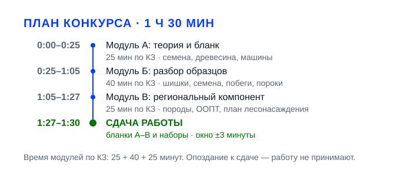
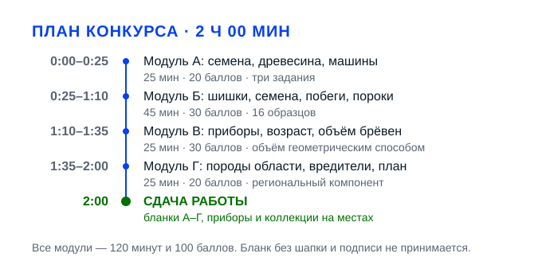

Рабочий лесного хозяйства (Р)
Задания ниже — официальные файлы «Абилимпикс» (источник: abilympics-russia.ru), разложенные по категориям. Решения написаны по тексту задания, регламенту и критериям оценки; в них указано, что именно проверяет эксперт.
Школьник
14–16 лет, базовый уровень заданияВыдержка из официального конкурсного задания: страницы, относящиеся к категории «Школьник» (стр. 8–9 источника).
Пошаговое решение
Задание для школьников состоит из трёх модулей на 100 баллов и укладывается в 1 час 30 минут: модуль А — теоретический блок на 28 баллов и 25 минут, модуль Б — практический разбор образцов на 44 балла и 40 минут, модуль В — региональный компонент на 28 баллов и 25 минут. Работа идёт с бланками, лупой, линейкой, шишками, семенами, побегами и образцами древесины, а в региональном модуле добавляется план лесонасаждения. Оценивают не скорость, а точность признака: размер шишки в сантиметрах, число хвоинок в пучке, вид порока по ГОСТ 2140-81, площадь квартала в гектарах. Главный риск — перепутать похожие породы и потерять баллы за оформление, поэтому порядок действий здесь важнее спешки.

Задача 1. Пройти теоретический блок модуля АМодуль А · 28 баллов · 25 минут
Модуль А — это письменный блок из трёх заданий: способы подготовки семян к посеву, элементы строения древесины и машины с механизмами, которые применяют в лесном хозяйстве. Работа идёт с бланком, лупой, линейкой и набором карточек, время ограничено 25 минутами, а баллы дают и за содержание, и за аккуратно заполненную форму. Здесь нет образцов, которые можно пощупать, поэтому выигрывают те, кто пишет точные признаки и цифры, а не общие слова.
Действие 1.1. Войти на площадку и подготовить бланк
Шаг 1.1.1
Входим на площадку за десять минут до старта, в закрытой обуви и с убранными под резинку волосами: по конкурсному заданию спецодежда школьникам не требуется, но опрятный вид и сухие руки — часть культуры рабочего места, а не формальность. Кладём перед собой только то, что разрешено: ручку с тёмной пастой, простой карандаш, ластик, линейку и лупу из набора. Сумку, телефон и верхнюю одежду оставляем в отведённой зоне, потому что на столе не должно быть ничего, что можно задеть локтем и уронить на образцы.
Модуль А — это 28 баллов из 100, и восемь из них дают за формальную часть: два балла за установленное соответствие понятий и два за заполненный бланк, ещё по три за правильные ответы по хвойным и лиственным породам. Бланк, подписанный чужим именем или без номера участника, проверять не будут, потому что формальная часть ценится ровно так же, как знание. Поэтому вход и подготовка стола занимают первые три минуты, а не последние.
Стол пустой, кроме письменных принадлежностей и лупы; бланк лежит лицевой стороной вверх, номер участника вписан; руки сухие, чтобы не размазать пасту по графам. Проверьте, что ручка пишет — на площадках паста на холоде густеет, и лучше обнаружить это до старта, а не на середине бланка.
Типичная ошибка — разложить на столе всю сумку, чтобы всё было под рукой: место под бланк остаётся узким, и при первом неловком движении образцы и листы оказываются на полу. Вторая ошибка — прийти в открытых шлёпанцах: на площадке с деревянными образцами это риск травмы, а замечание по безопасности отнимает время и внимание.
Эксперт обходит площадку в первые минуты и отмечает, готов ли стол, подписан ли бланк и понимает ли участник, где лежит каждый набор. Дальше он возвращается к этой зоне только на сдаче.
Шаг 1.1.2
Раскладываем бланки в том порядке, в котором идут задания: сверху лист модуля А, под ним бланк практического блока, последним — региональный. В шапке каждого вписываем фамилию, номер участника и категорию «школьники» печатными буквами, чтобы эксперт не разбирал почерк. Пустые строки пока не трогаем: сначала читаем формулировку, потом пишем, иначе в графе остаётся ответ от соседнего пункта, и проверяющий видит путаницу.
Формальная часть модуля А стоит четыре балла: два за установленное соответствие понятий и два за заполненный бланк, и они начисляются отдельно от правильности ответов. Бланк без номера участника или с перепутанными графами проверяется как незаполненный, даже если ответы в нём верные. Две минуты, потраченные на шапку, дешевле, чем потерянные четыре балла.
Все три листа на месте, в шапке каждого стоит фамилия и номер, графы совпадают с номерами заданий. Пересчитайте листы: если набор выдали с запасом, лишний оставьте в стороне, а не подкладывайте под рабочий — они слипаются, и потом трудно понять, какой лист подписан.
Частая ошибка — заполнять бланк по ходу, перескакивая с пункта на пункт: в итоге одна графа остаётся пустой, а в другой два ответа. Вторая — писать карандашом, чтобы исправить: карандашную правку эксперт может не принять, а стёртая резинкой строка выглядит как незаполненная.
Эксперт проверяет шапку бланка при сдаче, и первый вопрос обычно звучит так: «Это ваш лист?» Если номер не вписан, лист уходит в сторону до выяснения, а время сдачи уже идёт.
Шаг 1.1.3
Делим 25 минут модуля на три части: восемь минут на подготовку семян, восемь на строение древесины и девять на машины с механизмами, потому что последний блок даёт пять баллов за одну только правильность распределения машин по операциям. Таймер ставим беззвучный, с отметками на восьмой, шестнадцатой и двадцать пятой минуте, и держим телефон экраном вниз, чтобы не отвлекаться. Если блок съел больше времени, дописываем его одним словом и идём дальше: недописанное легче вернуть, чем не начатое.
28 баллов модуля А распределены неравномерно: подготовка семян и строение древесины дают по десять, машины — восемь, и внутри каждого блока баллы идут за конкретные признаки, а не за объём написанного. Равномерная трата времени почти всегда означает, что последний блок остаётся на пять минут и восемь баллов теряются целиком.
На отметке восемь минут первый блок закрыт, на шестнадцатой — второй. Проверить просто: если вы всё ещё дописываете первый блок на десятой минуте, значит, застряли на термине — ставьте наиболее вероятный ответ и возвращайтесь только при запасе времени.
Типичная ошибка — увлечься первым блоком, где термины кажутся знакомыми, и оставить машины на последние три минуты. В результате пять баллов за распределение машин по операциям теряются полностью, хотя вопрос был самый простой в модуле.
Эксперт обходит ряды примерно на десятой и двадцатой минуте и по положению бланка видит, в каком блоке участник находится. Напрямую это на балл не влияет, но при равных результатах темп работы обсуждается на апелляции.
Действие 1.2. Закрыть блок «Способы подготовки семян к посеву»
Шаг 1.2.1
Читаем левую колонку бланка: стратификация, снегование, скарификация, намачивание, дезинфекция, гидротермическая обработка. К каждой строке подбираем определение из правой колонки, а не наоборот, потому что определений справа обычно больше — там есть лишние, и они нужны как ловушки. Совпадение отмечаем линией карандашом по линейке, а в графу вписываем букву: линию эксперт может не разобрать, буква читается всегда.
За установленное соответствие понятий дают два балла, и это единственный пункт модуля, где ответ проверяется формально — по совпадению пары. Лишние определения в правой колонке стоят специально: если вы подобрали все строки без остатка, значит, одну пару притянули за уши, и как минимум два балла уже под вопросом.
После заполнения пересчитайте неиспользованные определения: в норме их два-три. Прочитайте пары про себя — «стратификация, выдерживание семян во влажной среде при низкой температуре» звучит связно, а «скарификация, выдерживание при низкой температуре» рассыпается.
Ошибка — тянуть линии через весь лист и путать строки: на пересечении двух линий эксперт читает не тот ответ. Вторая — писать определения своими словами вместо буквы: за пересказ балл не ставят, потому что проверка идёт по ключу.
Эксперт проверяет этот пункт по ключу и засчитывает только точное совпадение буквы. Частично верный ответ, где понятие объяснено правильно, но пара не та, не оценивается.
Шаг 1.2.2
В графе для хвойных пород пишем три рабочих способа: снегование под слоем снега 1–1,5 метра при температуре около нуля в течение 30–60 дней, холодную стратификацию в ящиках с песком при 0…+5 °C те же 30–60 дней и предпосевное намачивание в воде 12–18 часов для сосны и 18–24 часа для ели и лиственницы со сменой воды через 12 часов. Перед намачиванием семена обеззараживают: 0,5-процентный раствор марганцовокислого калия на два часа, затем промывка. Сроки пишем цифрами, а не словами «около месяца», потому что за расплывчатую формулировку балл не ставят.
За правильные способы подготовки семян хвойных пород дают три балла, и оценивают именно точность: эксперт сверяет температуру, срок и наличие обеззараживания. Сосна прорастает быстрее ели, поэтому для неё достаточно 30–45 дней стратификации, а для ели и лиственницы обычно указывают 45–60. Это не придирка: семена, снятые со стратификации раньше срока, дают дружные всходы только в тёплой теплице, а в открытом грунте всходят растянуто.
Проверьте, что в ответе есть три элемента: среда (снег, песок, вода), температура и срок в сутках или часах. Если хотя бы одного нет, допишите, потому что именно по этим трём признакам эксперт отличает полный ответ от общего.
Классическая ошибка — написать «стратификация» без режима: такой ответ приравнивается к названию способа и даёт не больше одного балла из трёх. Вторая — указать для сосны те же 90 дней, что для дуба: сроки путаются, и ответ по хвойным уходит в минус.
Эксперт смотрит графу хвойных пород сразу после модуля и выделяет ответы, где указан режим. Ответ «снегование, стратификация, намачивание» без цифр он отмечает как неполный.
Шаг 1.2.3
Для лиственных пород в бланке нужны способы, которые действительно применяют: скарификация — механическое нарушение оболочки наждачной бумагой или перетирание с песком, гидротермическая обработка — ошпаривание водой 80–90 °C с остыванием в воде 12–24 часа для белой акации, длительная холодная стратификация для липы, ясеня, клёна и дуба. Жёлуди дуба не переносят пересыхания, поэтому их хранят во влажном песке при 0…+3 °C и стратифицируют 60–90 дней. Боярышнику нужен двухэтапный режим: три-четыре месяца тепла при 20–25 °C, затем столько же холода.
За лиственные породы дают ещё три балла, и здесь ошибка стоит дороже, чем кажется: если записать дуб в намачивание на 12 часов, эксперт увидит, что участник не знает главного — жёлудь теряет всхожесть при подсыхании. Способы для лиственных подбираются по толщине и плотности оболочки, и в бланке это должно быть видно хотя бы по одному признаку на строку.
Сверьте каждую строку с вопросом «почему именно так»: у дуба оболочка плотная и семя сочное, у акации оболочка каменистая, у липы зародыш недоразвит и требует дозревания. Если объяснение не находится, способ выбран наугад и в строке стоит чужое понятие.
Самая частая ошибка — перенести хвойные способы на лиственные и написать для всех пород «стратификация 30 дней». Вторая — предложить для дуба сухое хранение в мешке: к весне такой жёлудь не прорастёт, и в ответе это читается как незнание биологии породы.
Эксперт сверяет по ключу, но дополнительно смотрит, различает ли участник породы внутри группы. Ответ, где все лиственные сведены к одному способу, он оценивает ниже, даже если формально одна пара совпала.
Шаг 1.2.4
Перед сдачей проходим бланк сверху вниз и проверяем три вещи: нет пустых строк, нет двух ответов в одной графе, все сокращения расшифрованы. Названия пород пишем полностью — «сосна обыкновенная», а не «сосна» и тем более не «сосенка»; в графе способов оставляем цифры, а не «примерно». Если осталась пустая строка, ставим наиболее вероятный вариант: пустая графа даёт ноль, а спорный ответ иногда засчитывают частично.
Два балла за заполненную форму бланка — это не формальность: эксперты сначала отсеивают листы с незаполненными графами и только потом проверяют содержание. Кроме того, по бланку видно, успел ли участник пройти все три блока модуля: пустая последняя строка читается как «не дошёл».
Проведите пальцем по каждой строке и мысленно произнесите вопрос, на который она отвечает. Если строка не отвечает ни на один вопрос задания, значит, вы заполнили её по привычке, и лучше стереть. Время на такую проверку — не больше двух минут.
Ошибка — сдавать бланк с пустыми строками «раз не знаю»: ноль баллов вместо возможного частичного. Вторая — исправлять ответ за минуту до сдачи и оставлять помарку поверх буквы: эксперт читает помарку как два ответа и не засчитывает ни один.
Эксперт принимает бланк, пересчитывает листы и сразу отмечает, заполнена ли шапка. Содержание он проверяет позже, но лист с пустыми графами к содержательной проверке может не попасть.
Действие 1.3. Определить элементы строения древесины под лупой
Шаг 1.3.1
Берём торец образца, зачищаем его ножом или наждачной бумагой до чистого среза и слегка смачиваем водой: сухая древесина выглядит ровной и прячет границы слоёв. Лупу держим на расстоянии 1–2 см от поверхности, пока изображение не станет резким, и смотрим при боковом свете, потому что он подчёркивает рельеф, а прямой свет сверху делает срез плоским. Пенёк или брусок кладём на стол, а не держим на весу: на весу дрожит рука, и граница заболони уходит из фокуса.
За умение пользоваться лупой дают три балла, и это отдельный критерий: эксперт смотрит, как участник держит инструмент и на что направляет. Оценка внутреннего строения тоже стоит три балла, но её невозможно получить, если срез не зачищен: годичные слои на грязном торце сливаются, и вместо ядра с заболонью участник видит тёмное пятно.
В лупу должны читаться границы годичных слоёв на расстоянии 1–2 мм друг от друга и тонкие светлые линии сердцевинных лучей. Если изображение мутное, протрите линзу мягкой тканью и подвиньте её ближе к глазу, а не к образцу.
Типичная ошибка — смотреть на боковую поверхность вместо торца: слои видны только на поперечном срезе. Вторая — держать лупу почти касаясь древесины: фокус уходит, и участник уверенно называет ядром то, что на самом деле заболонь.
Эксперт подходит и смотрит, в какую плоскость направлена лупа. Если участник разглядывает пласть и называет элементы, балл за работу с лупой не ставится, даже когда названия верны.
Шаг 1.3.2
На поперечном срезе находим центр — рыхлую сердцевину диаметром 2–5 мм, вокруг неё тёмное ядро, затем светлую заболонь шириной от одного до нескольких сантиметров. В ядре отмечаем годичные слои: у хвойных они чередуются, ранняя древесина светлее и мягче, поздняя темнее и плотнее. В заболони ищем тонкие радиальные линии — сердцевинные лучи, а у сосны дополнительно видны смоляные ходы в виде мелких светлых точек. Подписываем на бланке стрелками с цифрами, а не словами поверх рисунка.
За определённые элементы древесины дают два балла, за правильность определения внутреннего строения — ещё три, и оценивают их по подписям. Стрелка с номером и расшифровка внизу листа читаются однозначно, а надпись, сделанная поверх рисунка, часто перекрывает сразу две зоны и не засчитывается.
Проверьте себя по трём признакам: ядро темнее заболони, годичные слои параллельны друг другу, сердцевина находится в геометрическом центре. Если центр смещён, значит, вы смотрите на косой срез — переверните образец и найдите торец, перпендикулярный оси ствола.
Ошибка — называть ядром всю тёмную середину вместе с сердцевиной: это две разные зоны, и одна подпись вместо двух даёт минус балл. Вторая — путать заболонь с корой: заболонь живёт и проводит воду, кора защищает, и на срезе они разделены камбием.
Эксперт проверяет подписи на бланке и выборочно просит показать ядро на образце. Расхождение между подписью и показом трактуется не в пользу участника.
Шаг 1.3.3
К каждому элементу дописываем функцию в одно предложение, начиная с глагола: заболонь проводит воду с растворёнными минеральными солями от корней вверх, ядро держит ствол и воду не проводит, потому что сосуды в нём заполнены смолой или тиллами, годичные слои показывают прирост по годам, сердцевинные лучи распределяют вещества по радиусу. Про кору пишем отдельно: пробковый слой защищает от испарения и мороза, луб проводит органические вещества вниз к корням. Функцию достаточно назвать одну, но точную, потому что «служит опорой» без пояснения не считается.
За обозначенную функцию части древесины для растущего дерева дают два балла, и это тот случай, когда эксперт ищет понимание, а не заученное слово. Формулировка через глагол сразу показывает, что участник понимает направление тока веществ: вверх идёт вода по заболони, вниз — продукты фотосинтеза по лубу.
Прочитайте свои формулировки и проверьте, что ни одна не повторяет другую. Если у ядра и заболони написано одно и то же «проводит питательные вещества», значит, разница не понята, и один из двух баллов почти наверняка уйдёт.
Ошибка — приписать заболони функцию накопления, а ядру — проведения: получается наоборот, и эксперт видит перевёрнутую схему. Вторая — оставить функцию общей фразой «нужна для жизни дерева»: за такое балл не начисляют.
Эксперт читает функции выборочно, по одной на участника, и чаще всего просит объяснить заболонь. Ответ «по ней идёт вода от корней» он засчитывает, «она питает дерево» — нет.
Действие 1.4. Разобрать машины и механизмы лесного хозяйства
Шаг 1.4.1
Раскладываем карточки с машинами на четыре группы по операции: подготовка почвы — плуг ПКЛ-70 и борона, посев и посадка — лесопосадочная машина МЛУ-1 и сеялка для питомников, уход — культиватор КЛБ-1,7 и кусторез, защита и охрана — опрыскиватель, аэрозольный генератор и лесопожарный грунтомёт. Лишние карточки с лесозаготовительными машинами, харвестером, форвардером и трелёвочным трактором, откладываем в сторону: по 30-процентному изменению конкурсного задания их место заняли машины лесного хозяйства. В бланке пишем не название группы, а операцию, которую машина выполняет.
Пять баллов за правильность использования машин в лесном хозяйстве — самый весомый одиночный критерий модуля А. Проверяют именно привязку машины к операции, поэтому карточка «харвестер» в группе «посадка» обнуляет не только себя, но и показывает, что участник не различает заготовку леса и лесовосстановление.
По каждой карточке задайте вопрос: на какой стадии жизни леса работает эта машина — до посадки, в момент посадки, в первые годы ухода или при защите. Если ответ не находится за три секунды, карточка стоит не на месте.
Самая частая ошибка — отнести плуг ПКЛ-70 к посадке: он готовит полосы, а сажает МЛУ-1. Вторая — оставить в ответе лесозаготовительную технику, потому что она кажется лесной: по изменённому заданию за неё балл не дают.
Эксперт проверяет группировку целиком, поэтому пять баллов не дробятся: либо схема верна, либо нет. Спорные карточки он обсуждает с главным экспертом до подведения итогов.
Шаг 1.4.2
В графе названия пишем марку и полное имя машины: не «посадочная машина», а «лесопосадочная машина МЛУ-1», не «плуг», а «плуг комбинированный лесной ПКЛ-70». Если марку не помните, описываем рабочий орган: «навесной плуг с двумя корпусами для нарезки борозд на нераскорчёванной вырубке». Такое описание эксперт засчитывает как определение, а слово «плуг» без признака — нет.
За точность определения машины дают три балла, и критерий сформулирован буквально: точность. На площадке лежат карточки похожих машин — плуг и культиватор, сеялка и лесопосадочная машина, — и различить их можно только по рабочему органу и марке. Общее слово не показывает, что участник видел машину хотя бы на картинке.
Проверьте, что в каждом ответе есть либо марка, либо рабочий орган. Если в строке стоит только родовое слово, допишите признак — это добавит балл и займёт десять секунд. Если марки нет совсем, ответ всё равно засчитывают по описанию рабочего органа.
Ошибка — писать «трактор» там, где спрашивают машину: трактор только тянет, а работу делает навесное орудие. Вторая — путать МЛУ-1 с сеялкой: первая сажает сеянцы, вторая сеет семена, и в бланке это разные операции.
Эксперт сверяет марки по ключу и отдельно смотрит описания. Ответ, где марка перепутана, но рабочий орган описан верно, он оценивает частично. Отдельно он отмечает случаи, когда вместо машины назван трактор.
Шаг 1.4.3
Последнюю минуту блока отводим на проверку по признаку «где работает»: машины для питомника — сеялка и культиватор, для вырубки — плуг и лесопосадочная машина, для уже растущего леса — кусторез и опрыскиватель, для пожара — грунтомёт и плуг для минерализованных полос. Если карточка подходит сразу к двум группам, выбираем ту, где она работает чаще, и дописываем вторую операцию через запятую. Так ответ не теряет балл из-за формального несовпадения.
Проверка по месту работы ловит большинство ошибок группировки: пять баллов начисляются за всю схему, и одна перепутанная карточка стоит дороже, чем кажется. Кроме того, дописанная вторая операция показывает, что участник понимает многофункциональность техники, и это идёт в зачёт точности.
Пройдите по четырём группам и убедитесь, что в каждой не меньше двух карточек и нет карточки-одиночки, которая не подходит никуда. Одиночка — верный признак того, что группа выбрана неверно. Такую карточку возвращаем в группу, к которой она ближе по рабочему органу.
Ошибка — оставить карточку вне групп, потому что непонятно: незаполненная строка читается как пропуск и обнуляет группу. Вторая — переставить карточку в конце и не проверить, что она не осталась в двух группах одновременно.
Эксперт просматривает схему целиком за один проход. Ему важнее увидеть логику, чем количество: четыре обоснованные группы он оценивает выше, чем шесть групп с перепутанными операциями.
Задача 2. Выполнить практический блок модуля БМодуль Б · 44 балла · 40 минут
Практический блок — самая дорогая часть задания: 44 балла из 100 и 40 минут на четыре набора. Нужно определить породы по шишкам, по семенам, по листве и хвое и назвать пороки древесины по образцам. Оценивают не только правильное название, но и умение работать с материалом: разложить, измерить, посмотреть в лупу, вернуть образцы на место и заполнить бланк без пустых строк.
Действие 2.1. Определить породы по шишкам
Шаг 2.1.1
Получаем лоток с шишками, ставим его на середину стола и проверяем комплектность по номерам: на каждой шишке или подставке стоит цифра, и в бланке столько же строк. Шишки не разбираем, не ломаем и не переворачиваем до начала работы: сначала осматриваем целиком, потому что по раскрытой шишке породу определить труднее, чем по закрытой. Лоток держим на расстоянии вытянутой руки, чтобы не смахнуть его локтем при письме.
За умение работать с семенным материалом дают три балла, а за определение пород по шишкам — ещё три, и оба критерия проверяются по одному набору. Если шишка разломана до осмотра, эксперт видит нарушение порядка работы, а часть признаков — форму щитков, плотность чешуй — восстановить уже нельзя.
Число шишек совпадает с числом строк в бланке, номера читаются, лоток стоит устойчиво и не на краю стола. Если в наборе есть шишка без номера, сразу зовём эксперта: позже доказать, что она была в наборе, будет невозможно.
Ошибка — начать с разламывания шишки, чтобы посмотреть семена: семена нужны в следующем задании, а здесь оценивают внешние признаки. Вторая — ссыпать все шишки в одну кучу: номера теряются, и половина ответов уходит в ноль.
Эксперт подходит к набору в начале модуля и фиксирует, разложены ли шишки по номерам. Дальше он смотрит на бланк и на лоток одновременно. Если шишки лежат россыпью, он просит разложить их по номерам до начала работы.
Шаг 2.1.2
Каждую шишку измеряем линейкой от основания до вершины, результат пишем в сантиметрах с точностью до половины сантиметра — 4,5 см, а не «средняя». Затем описываем форму: яйцевидная, цилиндрическая, округлая; смотрим, куда направлена шишка на ветке — вверх, как у пихты, или вниз, как у ели; проверяем чешуи: у сосны они с ромбическими щитками и бугорком, у ели тонкие и плоские. Семена из шишки не вытряхиваем, а если они видны между чешуями, отмечаем это отдельной строкой.
За правильность определения древесных растений по семенному материалу дают три балла, и определение строится на трёх признаках: размер, форма и направление роста. Один признак почти всегда даёт двойное толкование — шишка ели длиной 8 см похожа на крупную сосновую, но щитки и тонкие чешуи решают дело.
Размер укладывается в диапазон: сосна 3–7 см, ель 10–15 см, лиственница 2–4 см, пихта 7–12 см. Если измеренная шишка не попадает в диапазон ни одной породы, перемеряйте: скорее всего, линейка стоит не от основания.
Ошибка — определять на глаз, не измеряя: на глаз сосновая шишка кажется большой, а на линейке даёт 5 см, и порода угадывается случайно. Вторая — описывать только цвет: он зависит от степени зрелости и от сушки, поэтому решающим признаком быть не может.
Эксперт проверяет, есть ли в бланке измерение с цифрой. Ответ без размера он оценивает как неполный, даже если порода названа верно. Отдельно проверяется, записан ли размер с единицами измерения.
Шаг 2.1.3
По совокупности признаков ставим в бланк название породы полностью: сосна обыкновенная, ель европейская, лиственница сибирская или Сукачёва, пихта сибирская. Рядом пишем два признака, по которым принято решение, например «щитки ромбические, шишка 5 см, направлена вниз». После записи возвращаем шишку в лоток на своё место номером вверх: набор сдаётся в том же виде, в каком получен.
Критерий «правильность определения древесных растений по семенному материалу» стоит три балла, а критерий «заполнена форма задания» — два, и второй легко потерять, если в бланке нет обоснования. Обоснование нужно и на апелляции: эксперт может ошибиться, но если признак записан верно, результат пересмотрят.
Названия написаны без сокращений, с родовым и видовым названием, у каждой строки есть минимум два признака. Сверьте номера: строка бланка должна соответствовать номеру шишки, а не порядку, в котором вы их брали.
Ошибка — написать «ёлка» или «сосна» без вида: за бытовое название балл снижают, потому что проверяют знание породы, а не разговорную речь. Вторая — перепутать номера при возврате шишек: ваш бланк перестанет совпадать с набором, и проверка пойдёт не по тем образцам.
Эксперт сверяет бланк с набором по номерам и читает обоснование. Если признак в бланке противоречит образцу, балл за определение не ставится. Совпадение бланка и набора он считает обязательным условием проверки.
Действие 2.2. Определить породы по семенам
Шаг 2.2.1
Высыпаем семена из пакета на белый лист бумаги или в чашку Петри, разравниваем их пинцетом в один слой и работаем при хорошем свете. Белый фон нужен потому, что тёмные семена хвойных на деревянном столе сливаются с поверхностью, а светлые крылатки берёзы теряются при блике — лампу ставим сбоку. Лупу берём в правую руку, пинцет в левую, семя поворачиваем за крыло, а не за зародыш.
За умение пользоваться лупой в этом задании дают два балла, за умение работать с семенным материалом — три, и оба снимаются, если семена раздавлены или перепутаны. Семя с обломанным крылом ещё определяется, но сравнить его с образцом на плакате уже нельзя, поэтому работаем аккуратно.
Семена разложены по одному, не соприкасаются, каждое можно взять пинцетом. Проверьте, что на листе нет пыли и обломков чешуй: они прилипают к крылаткам и меняют видимый размер. Семена, слипшиеся в комок, разъединяем пинцетом, а не пальцами.
Ошибка — высыпать все пакеты в одну кучу: семена разных пород перемешиваются, и задание разваливается. Вторая — брать семена пальцами: жир с кожи склеивает крылатки, и они перестают читаться под лупой.
Эксперт смотрит на порядок на столе: разложенные по пакетам группы он отмечает как работу с материалом, общую кучу — как потерю навыка. Он также смотрит, не перепутаны ли пакеты между собой.
Шаг 2.2.2
Сравниваем семя с признаками: у сосны семя 3–4 мм, тёмное, с крылом в три раза длиннее самого семени; у ели семя такого же размера, но крыло ложковидное и охватывает семя с одной стороны; у лиственницы семя 3–5 мм с плотным крылом; у берёзы орешек 1,5–2 мм с двумя прозрачными крылышками; у липы орешек округлый, 4–5 мм; у ясеня плоская крылатка 8–15 мм. Смотрим на соотношение длины крыла и семени, потому что это самый устойчивый признак: размер семени зависит от урожая, а форма крыла — нет.
Правильность определения древесных растений по семенам стоит три балла, а в критериях отдельно выделено, что определяются и хвойные, и лиственные породы. Если в ответе только хвойные, максимум не набрать: в наборе лежат и лиственные, и их нужно назвать хотя бы по одному признаку.
Для каждого семени запишите три числа: длина семени, длина крыла и отношение крыла к семени. Если отношение около трёх, это сосна или ель; если крыло едва длиннее семени — лиственница; если крыльев два — берёза.
Ошибка — отличать сосну от ели по цвету семени: цвет почти одинаков, разница в крыле. Вторая — принимать обломок крыла за целое и записывать семя в другую породу: перед измерением проверьте, целое ли крыло.
Эксперт проверяет, названы ли в бланке обе группы пород. Набор, где определены только хвойные, он оценивает по нижней границе критерия. Обоснование в строке он читает вместе с названием породы.
Шаг 2.2.3
В бланке на каждую строку пишем номер пакета, название породы и признак, по которому её определили, — «берёза повислая, орешек 2 мм, два прозрачных крылышка». Семена возвращаем в пакеты по номерам, пакеты закрываем и укладываем в лоток в исходном порядке. Если семя рассыпалось, собираем все до последнего: недостача в наборе фиксируется как порча материала.
Два балла за заполненную форму задания начисляются за полные строки, и здесь же проверяется аккуратность работы с материалом. Потерянное семя — не мелочь: наборы используются повторно, и недостача обнаруживается сразу после сдачи. Кроме того, по числу семян эксперт видит, работал ли участник с пакетом вообще.
Число семян в пакете совпадает с исходным, все пакеты закрыты, номера совпадают с лотком. Пройдите по строкам бланка и убедитесь, что ни одна не осталась без признака. Если пакетов больше, чем строк, значит, часть образцов осталась без ответа.
Ошибка — ссыпать семена обратно на глаз, не считая: недосып обнаруживается при следующей выдаче. Вторая — оставить пакет открытым: при переноске лотка семена высыпаются, и набор приходится собирать заново.
Эксперт принимает набор и пересчитывает пакеты. Открытый или перепутанный пакет он отмечает как нарушение работы с материалом. Отдельно он отмечает рассыпанные семена на столе.
Действие 2.3. Определить породы по листве и хвое
Шаг 2.3.1
Берём побег и считаем хвоинки в пучке: у сосны обыкновенной их две, у сосны кедровой — пять, у ели хвоя сидит одиночно и четырёхгранная, у пихты плоская с двумя белыми полосками снизу, у лиственницы мягкая, собрана в пучки по 20–40 на укороченных побегах. Измеряем длину: сосна 4–7 см, ель 1–2,5 см, лиственница 2–4 см, кедр 6–13 см. Проверяем на ощупь: колючая хвоя у ели, мягкая у пихты и лиственницы.
За правильно определённые хвойные породы по хвое дают три балла, и различают их по трём признакам: число хвоинок в пучке, форма сечения и длина. Ошибка здесь стоит двойного: путаница ели и пихты тянет за собой неверную характеристику породы, а за неё дают ещё три балла.
Назовите про себя три признака для каждого побега. Если хотя бы один признак не подтверждается, пересчитайте хвоинки: у сосны их всегда пара, и это самый надёжный признак на площадке. Длину измеряем линейкой, а не на глаз: у ели хвоя вдвое короче сосновой.
Ошибка — определять ель по колючести одной хвоинки: колючих побегов в наборе несколько. Вторая — считать хвою на разных побегах одного пучка: у лиственницы на одном побеге могут быть и укороченные, и удлинённые побеги, и счёт сбивается.
Эксперт просит показать пучок и пересчитать хвоинки вместе с участником. Расхождение между ответом и показом он фиксирует как ошибку определения. Пересчёт хвоинок он просит повторить, если ответ вызывает сомнение.
Шаг 2.3.2
Лист кладём на белую бумагу и описываем по порядку: форма пластинки — округлая, ромбическая, сердцевидная, пальчатолопастная или перистолопастная; край — цельнокрайный, зубчатый, пильчатый; жилкование — перистое или пальчатое; черешок — длинный, короткий, сплюснутый. У берёзы лист ромбический с зубчатым краем, у осины округлый на длинном сплюснутом черешке, у липы сердцевидный с асимметричным основанием, у дуба перистолопастный с шестью-семью лопастями, у рябины непарноперистый из 9–15 листочков. Описываем то, что видно, а не то, что помните по картинке.
За лиственные породы по листве дают три балла, и оценивают именно признаки: форму, край, жилкование. Осина и берёза растут рядом и похожи силуэтом, но черешок осины сплюснут и длиннее пластинки — по этому признаку их различают и на площадке, и в лесу.
По каждому листу назовите форму, край и тип черешка — три слова, которые должны совпасть с образцом. Если лист повреждён или оборван, работайте с целым из набора: описание по обломку почти всегда даёт ошибку.
Ошибка — определять дуб по одному крупному листу и называть лопасти зубцами: край и лопасть — разные признаки. Вторая — писать «лист как у берёзы»: сравнение с другим образцом вместо описания эксперт не засчитывает.
Эксперт смотрит, описывает ли участник признаки или просто называет породу. Ответ «осина» без признаков он оценивает ниже, чем «осина, округлый лист, длинный сплюснутый черешок».
Шаг 2.3.3
В бланке пишем полное название породы и её характеристику в двух-трёх словах: «берёза повислая — светолюбивая, быстрорастущая, образует мелколиственные леса», «ель европейская — теневыносливая, с поверхностной корневой системой». Характеристику берём из того, что действительно относится к породе: отношение к свету, скорость роста, тип корневой системы, долговечность. Сокращения расшифровываем: если в бланке стоит «Б», рядом должно быть слово «берёза», иначе проверяющий читает букву как ошибку.
За правильность написания названия древесной породы и её характеристики дают три балла — это отдельный критерий, и он есть только в этом задании. Бытовое «ёлка» вместо «ели европейской» и пустая графа характеристики стоят дороже, чем одна ошибка в определении: теряются сразу два критерия.
Проверьте, что название состоит из двух слов, характеристика содержит минимум два признака, сокращений без расшифровки нет. Прочитайте строку вслух: если звучит как набор слов без связи, допишите до полного предложения.
Ошибка — писать характеристику «красивое дерево» или «растёт в лесу»: к породе это не относится и балла не даёт. Вторая — назвать породу по-латыни без русского названия: эксперт читает бланк по-русски, и латинское слово без перевода может не засчитать.
Эксперт читает название и характеристику вместе и проверяет, соответствует ли характеристика породе. Верное название с чужой характеристикой он оценивает частично.
Шаг 2.3.4
Побеги раскладываем обратно по номерам в том же порядке, в каком они лежали: хвойные отдельно от лиственных, каждый в свою ячейку лотка. Если побег помят или хвоя осыпалась, кладём обломки в лоток рядом и говорим об этом эксперту при сдаче. Лоток закрываем крышкой только после того, как убедились, что все номера на местах. Проверяем, что ни один побег не остался на столе вне лотка.
За умение работать с материалом баллы начисляются в этом задании дважды — за шишки и за побеги, и беспорядок в лотке читается как небрежность. Кроме того, осыпавшаяся хвоя — единственный расходный материал, который нельзя восстановить, и следующий участник получит набор хуже вашего.
Все ячейки заняты, номера совпадают, крышка закрывается без усилия. Если крышка не садится, значит, побег лежит не в своей ячейке — поправьте, а не прижимайте. Если ячейка пустует, ищем побег на столе и возвращаем на место до сдачи.
Ошибка — сложить побеги в один пучок, чтобы быстрее: хвоя ломается, а номера теряются. Вторая — оставить лоток открытым на краю стола: при передаче он опрокидывается, и набор приходится собирать с пола.
Эксперт принимает лоток и проверяет порядок. Открытый лоток с перепутанными номерами он отмечает как потерю навыка работы с материалом. Порядок в лотке он оценивает вместе с порядком на рабочем месте.
Действие 2.4. Определить пороки древесины
Шаг 2.4.1
Образец берём двумя руками, ставим на подставку и осматриваем три поверхности: торец, пласть и кромку. Сначала при дневном или боковом свете, потом под лупой: мелкие трещины и синева видны только при косом освещении. Ничего не отковыриваем и не надламываем: порок описывают по тому, что есть, а не по тому, что удалось раскрыть. Отмечаем для себя, какая сторона образца обращена к свету, и поворачиваем её к лампе.
За определённые виды пороков дают два балла, за правильность установления вида — три, за группу — три и за описание характеристики — ещё три. Половина этих баллов снимается, если образец осмотрен только с одной стороны: синева на пласти часто уходит в торец, а трещина на кромке продолжается на торце.
Вы можете назвать, что видно на каждой из трёх поверхностей. Если по пласти ответ есть, а по торцу нет, вернитесь к торцу: именно там читаются годичные слои, крень и смоляные кармашки. Список увиденного на каждой стороне записываем в черновик бланка.
Ошибка — осматривать образец на весу, поворачивая его в руках: тени движутся, и трещина принимается за границу слоя. Вторая — сразу отламывать кусок, чтобы увидеть гниль: образец портится, и описать порок по целой части уже нельзя.
Эксперт смотрит, как участник держит образец и с каких сторон осматривает. Осмотр только с пласти он отмечает как неполный. Он также смотрит, не оставлены ли на образце свежие сколы от ножа.
Шаг 2.4.2
Называем вид порока точно, по терминологии ГОСТ 2140-81: сучок, метик, отлуп, морозобоина, сбежистость, овальность, наклон волокон, крень, свилеватость, прорость, смоляной кармашек, ложное ядро, синева, гниль, червоточина. Если видите тёмную полосу по годичному слою на торце, это отлуп, а не метик: метик идёт от центра наружу радиальной трещиной. Различать их нужно по направлению, потому что метик радиальный, а отлуп идёт по годичному слою.
Правильность установления вида порока — три балла, и это самый частый источник потерь: участники называют трещиной всё, что похоже на разрыв, а эксперт проверяет термин. Отлуп и метик относятся к одной группе, но к разным видам, и подмена одного другим обнуляет именно этот критерий.
Для каждого порока задайте вопрос о направлении: трещина идёт от центра к коре или по кольцу; темнеет древесина или светлеет; волокна отклоняются или древесина рыхлая. Ответ на этот вопрос и есть вид порока.
Ошибка — писать «трещина» вместо конкретного вида: группа засчитывается, вид нет, и три балла теряются. Вторая — принимать синеву за гниль: синева это грибная окраска без разрушения древесины, гниль разрушает, и это разные группы.
Эксперт проверяет термин по ключу и отдельно смотрит, не подменены ли близкие виды. Ответ с общим словом он оценивает по нижней границе. Сомнительные строки он уточняет вопросом о направлении трещины.
Шаг 2.4.3
К каждому виду подбираем группу из девяти по ГОСТ 2140-81: сучки, трещины, пороки формы ствола, пороки строения древесины, химические окраски, грибные поражения, биологические повреждения, инородные включения и механические повреждения, покоробленность. Сучок остаётся сучком, даже если он выпал; синева и гниль — грибные поражения; червоточина — биологические повреждения; гвоздь или проволока — инородные включения. Группу пишем словом, а не номером, потому что нумерация в разных таблицах не совпадает.
За правильность установления группы порока дают три балла, и этот критерий проверяется независимо от вида. Даже при неверном виде правильно названная группа приносит баллы, и наоборот: верный вид с чужой группой балла не даёт. Кроме того, классификация показывает, умеет ли участник пользоваться нормативным документом.
Проверьте, что группа и вид не противоречат друг другу: метик не может быть в группе грибных поражений, а синева — в трещинах. Если противоречие есть, ошибка в одном из двух слов. Если слово группы не находится в перечне, значит, оно придумано.
Ошибка — относить все пороки к одной группе «пороки древесины»: такая запись не показывает знания классификации. Вторая — путать пороки строения с пороками формы: сбежистость и овальность относятся к форме ствола, крень и свилеватость — к строению.
Эксперт сверяет группу с видом в одной строке. Противоречие внутри строки он трактует как ошибку классификации. Строки он проверяет выборочно, но группу смотрит в каждой.
Шаг 2.4.4
Описываем порок измеримо: размер в миллиметрах или сантиметрах, расположение — на торце, на пласти, по всей длине; доля площади или протяжённость; для гнили — цвет и стадию, для сучка — диаметр и степень срастания. Например, «здоровый сросшийся сучок диаметром 12 мм на пласти, вытянут вдоль оси». Оценки «большой» и «небольшой» заменяем цифрами, потому что характеристика проверяется по признакам, а не по впечатлению.
За правильность описания характеристики порока древесины дают три балла, и это единственный критерий модуля, где оценивают не название, а наблюдение. Цифра показывает, что участник действительно измерял: «сучок 12 мм» и «сучок большой» — разные ответы по одной и той же строке.
В описании есть минимум один размер и место расположения. Проверьте линейкой то, что записали: если написали 12 мм, а линейка показывает 30, лучше исправить до сдачи. Место расположения пишем словами: торец, пласть, кромка, ребро.
Ошибка — описывать порок словами «небольшой тёмный участок»: за такое балл не начисляют. Вторая — указывать размер без единиц: «12» может быть и миллиметрами, и сантиметрами, и эксперт не может засчитать ответ.
Эксперт выборочно перемеряет описанный порок. Расхождение больше чем в два раза он считает выдуманным описанием. Если размер в бланке явно завышен, он снижает балл за характеристику.
Задача 3. Закрыть региональный модуль ВМодуль В · 28 баллов · 25 минут
Региональный компонент проверяет, знает ли участник лес своего края: какие породы здесь растут, как их используют, какие особо охраняемые природные территории есть в области и как читать план лесонасаждения. Двадцать пять минут на три задания, и почти половина баллов модуля приходится на работу с картой: масштаб, условные обозначения, площадь и главная порода.
Действие 3.1. Определить древесные породы области и их использование
Шаг 3.1.1
На столе лежат образцы побегов и шишек; отбираем те, что растут в Вологодской области: ель европейскую, сосну обыкновенную, берёзу повислую и пушистую, осину, ольху серую и чёрную, лиственницу Сукачёва, пихту сибирскую на востоке области. Южные породы — дуб, клён, липу — отмечаем отдельно: они встречаются, но не образуют крупных массивов. Экзотику вроде кедра сибирского или туи относим к интродуцентам и в основной список не ставим.
За подобранные способы использования пород дают четыре балла, за правильность использования — три, и оба критерия начинаются с того, что порода отнесена к региону. Если в ответе окажется дуб как главная порода области, эксперт увидит, что участник не знает состава лесов края, и четыре балла уйдут целиком.
В списке не больше восьми-девяти пород, и каждая действительно встречается в области. Проверьте по карте лесов на столе: если породы нет в легенде, её место в дополнительном списке, а не в основном. Дополнительный список подписываем отдельно, чтобы его не смешали с основным.
Ошибка — включать в список всё, что лежит в наборе: набор специально смешанный, и часть образцов привезена из других регионов. Вторая — путать ольху серую и чёрную: у серой кора гладкая и серая, у чёрной тёмная с трещинами.
Эксперт смотрит на список пород и выборочно просит показать образец. Порода, названная в списке, но не найденная на столе, вызывает вопросы. Если образец не найден, он просит назвать признак, по которому порода узнана.
Шаг 3.1.2
К каждой породе подбираем способ использования, принятый в лесном комплексе области: ель идёт на пиловочник, целлюлозу и бумагу, музыкальные инструменты; сосна — на строительные конструкции, шпалы, тару и в химическую переработку; берёза — на фанеру, мебель, лыжи и дрова; осина — на спички и тару под пищевые продукты; ольха — на мебель и копчение; лиственница — на сваи и гидротехнические конструкции. Записываем по одной-двум позициям на породу, а не общее «используется в строительстве».
Четыре балла за подбор способов использования — самый весомый критерий регионального модуля, и проверяют его по конкретным направлениям. Общее «древесина используется в народном хозяйстве» не даёт балла, потому что не показывает знания свойств: осина идёт на спички не случайно, а потому что легко колется и не содержит смолы.
У каждой породы есть минимум два разных направления, и они не повторяются у всех подряд. Если у ели и сосны написано одно и то же, вернитесь к свойствам: у сосны смолистость, у ели резонансные качества.
Ошибка — приписать берёзе корабельный лес, а сосне фанеру: первое относится к сосне и лиственнице, второе к берёзе. Вторая — оставить одну строку «дрова» на все породы: за дрова балл дают один раз, дальше это повтор.
Эксперт проверяет по ключу и смотрит, различаются ли направления. Одинаковые ответы на разные породы он оценивает как незнание свойств древесины. Повторяющиеся ответы он отмечает как формальные.
Шаг 3.1.3
Оформляем ответ таблицей из трёх столбцов: порода, направление использования, обоснование через свойство древесины. В обосновании короткая связка: «осина — спички, потому что древесина легко расщепляется и не содержит смолы», «лиственница — сваи, потому что ядровая древесина устойчива к гниению». Таблицу подписываем и сдаём вместе с бланком, строки нумеруем, чтобы эксперт мог сослаться на конкретную.
Критерий требует и подобранных способов, и правильности использования, а обоснование — единственное, что связывает одно с другим. На апелляции таблица с обоснованием читается за минуту, а список без связок приходится защищать словами, и времени на это не дают.
В каждой строке заполнены все три столбца, обоснование содержит свойство, а не повторение направления. Проверьте, что таблица помещается на лист и не продолжается на обороте: оборот часто не проверяют.
Ошибка — оставить столбец обоснования пустым: два балла из семи теряются сразу. Вторая — писать обоснование «так делают»: это не свойство древесины, и балл не начисляется. Третья — заполнить таблицу, но не подписать её: лист без фамилии не проверяют.
Эксперт читает таблицу построчно, обычно по диагонали — от породы к обоснованию. Строку, где обоснование не связано с направлением, он отмечает как формальную.
Действие 3.2. Определить категории ООПТ области
Шаг 3.2.1
Выписываем шесть категорий ООПТ по Федеральному закону № 33-ФЗ: государственные природные заповедники, национальные парки, природные парки, государственные природные заказники, памятники природы, дендрологические парки и ботанические сады. К каждой категории дописываем режим: в заповеднике хозяйственная деятельность запрещена полностью, в национальном парке допускается рекреация по зонам, в заказнике ограничивается только часть видов деятельности, памятник природы охраняет отдельный объект. Ботанические сады и дендропарки создаются для коллекций и науки.
За определённые категории ООПТ дают четыре балла, и проверяют именно перечень: он закрытый и берётся из закона. Категории, придуманные по смыслу вроде «лесопарк» или «заповедная зона», в перечень не входят и баллов не приносят, даже если звучат логично.
В списке ровно шесть категорий, ни одна не повторяет другую по смыслу, у каждой есть одна фраза о режиме. Проверьте, что заповедник и заказник не описаны одинаково: разница в полноте изъятия территории из хозяйственного использования.
Ошибка — объединять заповедник и национальный парк в одну категорию: это разные режимы и разные баллы. Вторая — добавлять «заповедные зоны» и «лесопарки» от себя: лишние строки не засчитываются и отнимают время.
Эксперт сверяет перечень с законом и считает совпадения. Лишние категории он просто игнорирует, но пропущенная стоит балла. Он также смотрит, назван ли режим каждой категории.
Шаг 3.2.2
Соотносим категории с объектами области: Дарвинский государственный природный биосферный заповедник, часть которого лежит в Череповецком районе на Рыбинском водохранилище, и национальный парк «Русский Север» в Кирилловском районе площадью около 166 тысяч гектаров. Остальные объекты — заказники и памятники природы — отмечаем как категории с ограниченным режимом, без выдумывания названий. Если название не помните, пишите категорию и район: «памятник природы, Кирилловский район» лучше, чем придуманное имя.
Критерий регионального компонента проверяет знание именно областных объектов, и два федеральных объекта области — обязательный минимум. Придуманное название эксперт распознаёт сразу и отмечает как недостоверный ответ, а это хуже пропуска: пропуск не отнимает уже набранные баллы.
В ответе есть заповедник и национальный парк с районами, остальные строки — категории без придуманных названий. Проверьте, что Дарвинский заповедник не отнесён к Ярославской области целиком: он расположен на границе двух областей.
Ошибка — называть «Русский Север» заповедником: это национальный парк, и подмена категории обнуляет строку. Вторая — выдумывать название памятника природы: недостоверный ответ эксперт фиксирует отдельно.
Эксперт проверяет две-три строки на выбор и оценивает достоверность. Придуманные объекты он отмечает в протоколе. Категорию он проверяет строже, чем название: подмена категории искажает смысл ответа.
Шаг 3.2.3
По 30-процентному изменению пункт про категории ООПТ может быть заменён определением насекомых-вредителей, поэтому в бланке оставляем место под третий блок и готовим короткие признаки: короед-типограф оставляет под корой ели ходы-галереи и буровую муку, а крона усыхает сверху вниз; шелкопряд объедает хвою целыми участками; пилильщик оставляет объеденную хвою с короткими пеньками. Определяем по повреждению, а не по описанию жука: на площадке чаще дают именно повреждённую ветку. Записываем тройку «объект, повреждение, вредитель».
Изменение в 30 процентов — официальная часть задания, и оно касается именно этого пункта регионального модуля. Участник, который подготовил только категории ООПТ, при замене вопроса теряет семь баллов целиком, хотя тема та же — охрана и защита лесов области.
В бланке есть хотя бы три вредителя с признаками повреждения, а не только названия. Проверьте, что у каждого указано, какую породу он повреждает: короед-типограф работает по ели, и это его главный признак на площадке.
Ошибка — ограничиться названием жука без повреждения: при замене вопроса эксперт ищет именно признак. Вторая — описывать вредителя по памяти, путая короеда с усачом: усач оставляет круглые лётные отверстия, короед — галереи под корой.
Эксперт знает, какой вариант вопроса выдан на площадке, и проверяет соответствующий блок. Заготовленный второй вариант он не оценивает, но он спасает при замене.
Действие 3.3. Прочитать план лесонасаждения
Шаг 3.3.1
Кладём план перед собой, находим масштаб и легенду: обычно это 1:10000, где сантиметр равен ста метрам, или 1:25000, где сантиметр равен 250 метрам. Читаем условные обозначения: квартальные просеки — прямые линии, номера кварталов — цифры в углах, породы — буквенные индексы С, Е, Б, Ос, Ол, Л, Д, Лп. Определяем, где на плане север: без этого нельзя понять, куда течёт вода и где сырые участки. Масштаб выписываем в бланк первой строкой, чтобы все дальнейшие расчёты опирались на одно число.
За умение работать с лесной картой и понимание условных обозначений дают по четыре балла — это половина регионального модуля. Без масштаба невозможно посчитать площадь, а без легенды нельзя определить главную породу: две ошибки в начале стоят шести баллов из четырнадцати.
Масштаб найден и переведён в метры, легенда прочитана, номера кварталов видны. Проверьте себя: расстояние между двумя квартальными просеками на плане 1:10000 должно быть около 10 см, то есть километр.
Ошибка — считать площадь по клеткам, не зная масштаба: результат отличается в десятки раз. Вторая — принимать номера кварталов за номера выделов и путать строки легенды. Третья — читать легенду после расчётов: тогда буквенные индексы остаются без расшифровки.
Эксперт подходит и просит показать масштаб на плане. Если участник не может его назвать, дальше он слушает расчёт с недоверием. Он также просит показать, где на плане север.
Шаг 3.3.2
Считаем площадь квартала по масштабу: при 1:10000 сторона клетки 1 см равна 100 метрам, значит, квадрат 10 на 10 см — это километр на километр, то есть 100 гектаров. Наложив палетку или посчитав клетки внутри контура, умножаем число клеток на площадь одной клетки в гектарах. Для сложного контура разбиваем его на прямоугольники и треугольники, считаем по частям и складываем. Ответ пишем в гектарах с одним десятичным знаком.
Правильное определение площади — три балла, и это единственный расчёт в региональном модуле, который проверяется по числу. Площадь нужна и для определения запаса: без неё нельзя перейти от кубических метров на гектар к общему запасу древесины. Кроме того, площадь входит в оформление вывода по кварталу.
Проверьте результат обратным счётом: площадь квартала при 1:10000 не может быть 10 или 1000 гектаров, типичный квартал — от 50 до 150. Если получилось 3 га или 3000 га, ошибка в переводе сантиметров в метры.
Ошибка — забыть возвести масштаб в квадрат: сторону перевели в метры, а площадь посчитали по линейному коэффициенту, и результат разошёлся в сто раз. Вторая — считать клетки, не учитывая, что часть контура обрезана, и округлять вверх на всякий случай.
Эксперт смотрит на расчёт и на единицы. Ответ без гектаров или с площадью вне разумного диапазона он оценивает как ошибку расчёта. Он просит назвать, сколько гектаров в одной клетке палетки.
Шаг 3.3.3
Читаем таксационную формулу состава, например 5Е3Б2Ос: цифры означают доли в общем запасе, буквы — породы, и первая цифра с наибольшей долей указывает на главную породу. В этом примере ель занимает половину запаса и является главной, берёза — три десятых, осина — две. Дополнительно смотрим возраст, класс бонитета от I до V и полноту от 0,3 до 1,0: бонитет показывает плодородие условий, полнота — сомкнутость крон. Главную породу записываем полным названием, а не индексом.
За правильное определение главной породы дают три балла, и ошибка здесь разрушает весь вывод по плану. Главная порода — не та, что чаще встречается в подросте, а та, что даёт наибольшую долю запаса, поэтому формула состава читается по цифрам, а не по порядку букв.
Сумма цифр в формуле равна десяти, первая цифра — наибольшая из всех. Если сумма не десять, формула записана с ошибкой или вы пропустили породу, и строку таксационного описания надо перечитать. Сверяем также, что буквы расшифрованы рядом с формулой.
Ошибка — считать главной породу, стоящую первой в записи: в формуле 4Б3Е3Ос первой стоит берёза, и она же имеет наибольшую долю, но в 4Е4Б2Ос порядок уже ничего не значит, считают цифры. Вторая — путать бонитет с полнотой: это разные показатели, и в бланке они идут отдельными графами.
Эксперт проверяет, названа ли главная порода по доле запаса. Ответ «ель» без ссылки на цифру он может засчитать, но обоснование повышает доверие к остальным строкам.
Шаг 3.3.4
Собираем вывод из четырёх чисел и одного названия: площадь в гектарах, состав, главная порода, класс бонитета и полнота. Пишем связным предложением: «Квартал 12 площадью 96 гектаров занят ельником с составом 5Е3Б2Ос, главная порода — ель европейская, бонитет II, полнота 0,7». Проверяем, что единицы измерения указаны у каждого числа, а не только у площади. Вывод подчёркиваем, чтобы эксперт нашёл его без поиска.
Четырнадцать баллов регионального модуля распределены так, что карта и обозначения дают восемь, площадь и главная порода — шесть, и вывод связывает их в один ответ. Разрозненные числа без вывода эксперт проверяет дольше и чаще трактует как неполный ответ, даже когда каждое число верно.
В выводе есть все пять элементов и единицы измерения. Прочитайте его вслух: если предложение распадается на куски без связи, допишите связки — «занят», «главная порода», «при полноте». Проверьте, что вывод не повторяет бланк дословно, а сводит его в одну фразу.
Ошибка — написать числа без единиц: «96, 5Е3Б2Ос, II, 0,7» читается как шифр и может быть принято за черновик. Вторая — сделать вывод о породе, не сверив его с площадью: арифметика внутри вывода должна сходиться.
Эксперт ищет вывод по подчёркиванию и проверяет пять элементов. Отсутствие единиц он отмечает как потерю точности оформления. Если вывод не подчёркнут, он всё равно его найдёт, но потратит время.
Задача 4. Проверить, оформить и сдать работуМодули А–В · оформление и сдача
Финальные минуты конкурса не добавляют новых знаний, но сохраняют уже набранные баллы. Нужно пройти бланки построчно, дописать пустые графы, привести названия и единицы измерения в порядок, сверить номера образцов с набором, собрать лотки и сдать всё в окно приёма до конца окна. Здесь же эксперт может задать вопросы по спорным строкам, и ответ должен совпадать с тем, что записано.
Действие 4.1. Проверить бланки перед сдачей
Шаг 4.1.1
За три минуты до сдачи проходим все бланки сверху вниз и отмечаем карандашом строки без ответа. По каждой пустой строке задаём себе вопрос задания и пишем хотя бы минимальный ответ: название породы без признака, группу без описания, число без обоснования. Минимальный ответ приносит часть балла, пустая графа — ноль, и разница здесь измеряется десятками баллов на сотне возможных.
Порог в критериях устроен так, что формальные и измеримые пункты оцениваются отдельно, и заполненная строка почти всегда даёт хотя бы один балл. На категории «школьники» разница между 78 и 84 баллами часто решается именно пустыми графами, а не глубиной ответа.
Пустых строк нет, карандашные пометки стёрты, все ответы читаются без лупы. Проверьте последнюю страницу: до неё доходят реже всего, и именно там чаще остаются пропуски. Отдельно проверьте графы, которые заполняются цифрами: там пропуски заметнее.
Ошибка — оставить строку пустой, чтобы не написать неправильно: ноль заведомо хуже частичного балла. Вторая — дописывать ответы на обороте листа: оборот может не проверяться, и ответ пропадёт. Третья — стирать ответ резинкой до дырки: лист рвётся, и графа читается как пустая.
Эксперт при приёме перелистывает бланк целиком и отмечает пустые графы. На апелляции именно они обсуждаются первыми. Он также смотрит, не остались ли в бланке пометки карандашом вместо ответов.
Шаг 4.1.2
Проверяем написание названий: породы двумя словами, без бытовых сокращений, группы пороков по ГОСТ, машины с маркой или рабочим органом. Смотрим единицы: сантиметры у шишек, миллиметры у семян, гектары у площади, кубометры на гектар у запаса, сутки у стратификации. Если единица пропущена, дописываем её над числом, а не рядом в скобках, чтобы проверяющий не пропустил. Все сокращения расшифровываем в первой строке бланка.
Три критерия модуля построены на написании: название породы и её характеристика, точность определения машины, описание характеристики порока. Ошибка в единицах не отменяет правильного числа, но эксперт не может засчитать ответ, если не понимает, в чём он измерен.
Каждое число в бланке имеет единицу, каждое сокращение расшифровано, названия не короче двух слов. Прочитайте бланк глазами человека, который не был на площадке: если строка понятна без пояснений, оформление в порядке.
Ошибка — писать «12» без единицы в графе размера сучка и «30» без слова «суток» в графе стратификации: оба ответа могут быть не засчитаны. Вторая — расшифровывать сокращение один раз в начале и надеяться, что эксперт свяжет: он читает строки по отдельности.
Эксперт проверяет оформление выборочно, но единицы смотрит у всех. Ответ без единиц он отмечает как неточный. Названия пород он проверяет по написанию, а не только по смыслу.
Шаг 4.1.3
Сверяем номера: строка бланка, номер шишки, номер пакета с семенами, номер побега и номер образца древесины должны идти в одном порядке. Если набор выдавали с отдельной нумерацией, переносим её в бланк отдельным столбцом, а не полагаемся на память. В конце пересчитываем строки и образцы: их число должно совпадать, иначе один ответ относится не к тому объекту.
Заполнена форма задания — это два балла в каждом практическом блоке, и несовпадение номеров читается как незаполненная форма. Кроме того, при расхождении эксперт не может проверить правильность определения: он сверяет ответ с образцом, а не с вашим намерением.
Число строк равно числу образцов, номера совпадают, порядок одинаковый. Пройдите по лотку рукой и назовите номер вслух: так ошибка в порядке обнаруживается сразу. Если строк больше, чем образцов, одна строка заполнена дважды.
Ошибка — заполнять бланк по порядку, в котором брали образцы, а не по их номерам: к концу работы порядок расходится, и половина ответов смещается. Вторая — переписывать номера в конце на глаз: одна перепутанная цифра тянет за собой две строки.
Эксперт сверяет два-три номера на выбор. Если они не совпадают, он проверяет весь бланк построчно, и времени на это уходит больше, чем у других участников.
Действие 4.2. Сдать наборы, бланки и ответить на вопросы
Шаг 4.2.1
Собираем лотки в том виде, в каком их выдали: шишки по номерам, семена в закрытых пакетах, побеги в ячейках, образцы древесины на подставке. Мусор — обломки хвои, чешуи, бумажки — убираем со стола в контейнер, а не в лоток. Стол протираем сухой тканью: мокрые разводы на деревянной столешнице остаются и мешают следующему участнику. Лотки ставим на край стола, отведённый для сдачи, а не оставляем в рабочей зоне.
Аккуратность при сдаче входит в критерии работы с семенным материалом, и беспорядок в лотке виден сразу. Кроме того, наборы используются повторно: перепутанные номера придётся восстанавливать следующим участникам, и это фиксируется как нарушение. Кроме того, порядок на столе виден эксперту при приёме работы.
Лотки закрыты, номера видны, на столе нет обломков и бумаги. Сдайте наборы в том порядке, в котором их получали, и назовите число лотков. Проверьте также, что на подставке лежит столько образцов древесины, сколько было в наборе, и ни один не остался под лотком или на полу.
Ошибка — ссыпать мусор в лоток, чтобы не потерять: при приёме это считается порчей набора. Вторая — оставить на столе мокрые следы: эксперт может отметить небрежность, а столешница из дерева разбухает.
Эксперт принимает лотки и осматривает стол. Чистый стол и закрытые лотки он отмечает как завершённую работу. Если лоток подан открытым, он просит закрыть его и проверить номера при нём.
Шаг 4.2.2
Бланки складываем в порядке модулей, лицевой стороной вверх, и сдаём в окно приёма, называя вслух: «Модуль А, практический блок, региональный модуль, три листа». Если какой-то лист заполнен частично, говорим об этом сразу, а не ждём вопроса. Время сдачи фиксируется по часам площадки, поэтому подходим за две минуты до конца окна, а не в последнюю секунду.
Опоздание к сдаче означает, что работу не принимают, и никакие баллы за содержание это не компенсируют. Называя состав вслух, вы застрахованы от потери листа: эксперт сверит число и сразу скажет, если чего-то не хватает. Кроме того, названный состав помогает эксперту разложить листы по модулям без вашего участия.
Число сданных листов совпадает с числом заполненных, время в пределах окна, фамилия на каждом листе. Попросите эксперта подтвердить приём: это не формальность, а ваша защита на апелляции. Убедитесь, что листы не слиплись и каждый виден целиком.
Ошибка — сдавать листы по одному по мере готовности: последний может остаться на столе. Вторая — подойти в последние десять секунд: очередь в окно приёма съедает время, и работа остаётся непринятой. Третья — оставить лист в лотке с образцами: при приёме его могут не найти.
Эксперт принимает листы, пересчитывает их и называет число вслух. Расхождение с вашим счётом выясняется на месте. Он называет число принятых листов и просит подтвердить, что это все.
Шаг 4.2.3
После сдачи эксперт может задать два-три вопроса: почему выбрали эту породу, чем отличается метик от отлупа, как считали площадь. Отвечаем коротко, одним-двумя предложениями, ссылаясь на признак из бланка, а не на «мы так учили». Если ответа нет, говорим прямо: «не знаю, определял по внешнему виду»: честное «не знаю» не отнимает уже начисленные баллы, а выдумка может.
Вопросы задаются не для того, чтобы сбить, а чтобы подтвердить спорные строки: если ответ совпадает с обоснованием в бланке, балл остаётся. Противоречие между устным ответом и записью трактуется не в пользу участника, поэтому лучше сослаться на то, что уже написано.
Ваш устный ответ совпадает с тем, что записано в бланке, и содержит тот же признак. Если эксперт записывает ответ, убедитесь, что записал верно, и попросите уточнить формулировку при расхождении. Если эксперт задал уточняющий вопрос, ответ должен опираться на тот же признак.
Ошибка — начинать объяснение издалека и путаться: эксперт слушает двадцать секунд. Вторая — менять ответ под влиянием вопроса: смена версии читается как угадывание, и спорная строка закрывается в минус.
Эксперт задаёт вопросы у тех, чьи ответы вызвали сомнение, и фиксирует ответ в протоколе. Спокойное и точное объяснение часто сохраняет балл. Если ответ расходится с бланком, он просит показать строку.
Студент
учащиеся колледжей и техникумовВыдержка из официального конкурсного задания: страницы, относящиеся к категории «Студент» (стр. 8–9 источника).
Пошаговое решение
Конкурсное задание категории «Студенты» состоит из четырёх модулей и идёт ровно два часа: теоретический блок А на 25 минут и 20 баллов, практический блок Б на 45 минут и 30 баллов, ситуационные задания В на 25 минут и 30 баллов и региональный компонент Г на 25 минут и 20 баллов. Все сто баллов распределены по измеримым критериям, и почти каждый проверяется не на словах, а на бланке, в записи или на приборе. В задании 2026 года действуют три замены в рамках обязательных 30 процентов изменений: в модуле А определяют машины и механизмы лесного хозяйства, в модуле В объём круглых лесоматериалов считают геометрическим способом, а в модуле Г вместо категорий особо охраняемых природных территорий определяют насекомых-вредителей лесов Вологодской области. Ниже задание разобрано по шагам с указанием, за что даются баллы и где они теряются.

Задача 1. Войти на площадку, принять приборы и разложить времяПодготовка · 2 ч 00 мин на все модули
До первого задания нужно успеть три вещи: принять и проверить приборы, разложить их по зонам стола и расписать свои 120 минут по модулям. На подготовку официально не даётся отдельных баллов, но именно здесь решается, будете ли вы искать лупу в середине практического блока и успеете ли заполнить бланк. Спокойные десять минут в начале стоят дороже, чем десять минут спешки в конце, когда до сдачи остаётся один шаг.
Действие 1.1. Принять и проверить приборы и образцы
Шаг 1.1.1
Принимаем рабочее место по описи площадки: мерная вилка, мерная скоба, десятикратная лупа, мерная лента на двадцать метров, полнотомер, штангенциркуль, шило, металлическая линейка, таблицы ГОСТ 2708-75 и чистые бланки. Раскладываем приборы в том порядке, в котором будем их брать: сначала оптические и мелкие (лупа, линейка, шило), затем измерительные (вилка, скоба, лента), затем бланки.
Прибор, который врёт на полсантиметра, обнуляет всю измерительную работу: в модуле В за правильность определения диаметра среза дают 3 балла, за объём брёвен ещё 3, и обе оценки снимаются по факту неверной цифры, а не по факту старания. Проверка нуля вилки и целостности ленты занимает минуту и страхует сразу девять баллов из тридцати в модуле В.
Пройдите опись построчно и отметьте карандашом каждую позицию. Затем два контрольных действия: сомкните ножки вилки и посмотрите, стоит ли стрелка или край шкалы на нуле, и приложите ленту к линейке на первых десяти сантиметрах. Если расхождение больше двух миллиметров, прибор неисправен, и об этом надо сказать до старта.
Самая частая ошибка — взять приборы «как есть» и найти сбитый ноль уже на измерении пня: тогда либо записываете неверный диаметр, либо ищете другую вилку. Вторая — оставить ленту скрученной в кольце: при первом отмеривании она пойдёт волной, и шесть метров превратятся в пять девяносто.
Эксперт обходит площадку до старта и смотрит, чем участник реально пользуется: разложены ли приборы, проверены ли они, не лежит ли вилка на полу. Отдельно фиксируется, умеет ли участник держать вилку и ленту в руках, а не только называть их.
Шаг 1.1.2
Разбиваем стол на три зоны и держим их до конца конкурса. Ближняя к себе полоса — рабочая: там лежат образцы, которые разбираем сейчас, и бланк этого модуля. Дальняя полоса — склад: образцы, которые уже определены, стоят подписанной стороной к себе, на расстоянии не меньше двадцати сантиметров от края, чтобы их не смахнуть рукавом. Слева ставим приборы, справа — бланки, и бланки никогда не кладём под мокрые или смолистые образцы: шишка, положенная на лист, оставляет пятно, а исправленный бланк эксперт может не принять.
Порядок на столе — это не эстетика, а скорость. В модуле Б за сорок пять минут нужно разобрать шестнадцать образцов по четырём заданиям, и каждая потерянная секунда на поиск нужной шишки складывается в минуты. Отдельно важен край стола: уронив образец на пол, вы получаете его обратно только через эксперта, а время идёт.
Проверьте зоны рукой: проведите ладонью по краю стола — ничего не должно выступать за кромку. Образцы должны стоять устойчиво и не касаться друг друга, бланк — лежать так, чтобы его можно было писать, не сдвигая образцы. Через час работы зоны должны остаться теми же, а не расползтись по всему столу.
Типичная ошибка — свалить все образцы в кучу «потом разберу»: через двадцать минут шишки перепутаны, а восстановить порядок по памяти почти невозможно, потому что у сосны и ели они похожи. Вторая ошибка — положить бланк под лоток с семенами: крылатки прилипают к бумаге, и запись становится нечитаемой.
Эксперт оценивает организацию рабочего места в течение всего конкурса, а не один раз: ему важно видеть, что участник возвращает образец на место после определения, а не оставляет его там, где закончил.
Шаг 1.1.3
Проходим инструктаж и проверяем то, что относится к безопасности именно нашей работы. Мерная вилка и скоба имеют острые кромки и подвижные ножки: пальцы держим за неподвижную планку, а не в растворе между ножками. Шило и бурав Пресслера кладём остриём от себя и никогда не оставляем на краю стола. Спил, на котором считаем годичные слои, ставим на подкладку, чтобы он не скользил по столешнице, а срез не крошился под рукой.
Три четверти травм на таких площадках дают не машины, а мелочь: шило, положенное остриём к себе, и спил, уехавший из-под руки. Кроме того, аккуратность в обращении с образцами напрямую влияет на оценку: порченый образец — это уже не тот объект, который задумал эксперт, и определить его правильно будет труднее.
Проверяем просто: пройдите глазами по столу и найдите все предметы, которые могут упасть или уколоть. Вилка лежит ножками внутрь стола, шило — остриём от себя, спил — на подкладке, лента смотана и держится за кольцо, а не брошена петлёй. Руки сухие: смола на пальцах мешает и открывать вилку, и перелистывать бланк.
Часто шило оставляют воткнутым в образец, а потом задевают локтём: остриё уходит в сторону лица или в ладонь. Ещё одна ошибка — держать вилку за подвижную ножку: при разведении она идёт сама, и участник получает защемление пальца, а прибор теряет настройку нуля.
Эксперт по охране труда смотрит на площадку в начале модуля и отдельно фиксирует нарушения: инструмент на краю стола, работа без подкладки, образцы на полу.
Действие 1.2. Расписать время и выбрать порядок работы
Шаг 1.2.1
Делим свои два часа по официальной сетке и записываем это на бланке или на отдельном листе: модуль А — 25 минут и 20 баллов, модуль Б — 45 минут и 30 баллов, модуль В — 25 минут и 30 баллов, модуль Г — 25 минут и 20 баллов. Дальше разбиваем каждый модуль на подпункты по числу заданий: в модуле А три пункта, в модуле Б четыре, в модуле В три, в модуле Г три. На каждый подпункт ставим своё окно и оставляем две минуты резерва на заполнение бланка, потому что в каждом блоке есть отдельный критерий «правильность оформления задания».
Сто баллов на 120 минут — это меньше одного балла в минуту, причём баллы стоят неравномерно: за сорок пять минут практического блока дают 30 баллов, а за двадцать пять минут модуля В — те же 30. Значит, в модуле В каждая минута дороже вдвое, и застревать там на одном бревне нельзя. Записанный план ещё и дисциплинирует: когда видно, что на подпункт осталось три минуты, решение принимается быстрее.
Проверьте сумму: 25 + 45 + 25 + 25 должно дать ровно 120 минут. Отметьте на листе время окончания каждого модуля по часам площадки, а не по своим ощущениям, и сверяйтесь с ним после каждого подпункта. Если после первого подпункта вы отстаёте больше чем на три минуты, следующий делаете быстрее, а не наоборот.
Ошибка — планировать «по-честному поровну» по 30 минут на модуль: тогда практический блок, где шестнадцать образцов, не влезет в отведённое время, а модуль Г, где десять минут уходит на карту, останется недоделанным. Вторая ошибка — не заложить резерв на бланк и вспомнить о нём за минуту до сдачи.
Эксперт видит, смотрит ли участник на часы и укладывается ли в окна модулей. Систематическое выпадение из графика отмечается как слабая организация работы, даже если отдельные ответы верны.
Шаг 1.2.2
Определяем порядок внутри каждого модуля по правилу «сначала твёрдое, потом спорное». В модуле Б сначала идут шишки и семена, где признаки видны и проверяются быстро, потом побеги, а пороки древесины — последними, потому что на описание порока уходит больше всего слов. В модуле В первым делом считаем объём брёвен по формуле и таблице, где ответ проверяем, а возраст по кольцам оставляем на середину: там нужен свет и спокойный глаз.
Порядок важен потому, что часть баллов даётся за количество правильно определённых объектов, и лучше сдать семь верных из десяти, чем два верных и восемь зачёркнутых. Кроме того, начиная с простого, участник входит в рабочий ритм, а не тратит первые пять минут на растерянность перед незнакомым образцом.
Признак работающего порядка — вы не возвращаетесь к уже сделанному пункту. Если приходится дважды открывать один и тот же бланк, порядок выбран неверно. Сверяйтесь с планом после каждого подпункта, а не только в конце модуля.
Частая ошибка — начинать с самого трудного пункта «чтобы потом было спокойно»: на нём сгорает половина времени, а лёгкие баллы остаются несобранными. Вторая — делать всё подряд по порядку бланка, даже когда очевидно, что один пункт требует прибора, а прибор занят.
Эксперт отмечает, насколько рационально участник перемещается по заданиям: перекладывает ли образцы, возвращается ли к началу, успевает ли проверить ответ.
Задача 2. Пройти теоретический блок: семена, древесина, машиныМодуль А · 20 баллов · 25 минут
Модуль А проверяет знание, но отвечать нужно письменно и по форме, поэтому половина баллов здесь теряется не на незнании, а на незаполненном бланке и небрежной записи. Баллы разложены так: способы подготовки семян — 8, элементы строения древесины — 8, машины и механизмы лесного хозяйства — 4. Два первых пункта дают по одному баллу просто за заполненную шапку и установленное соответствие, и отказываться от этих баллов нельзя.
Действие 2.1. Способы подготовки семян к посеву (8 баллов)
Шаг 2.1.1
Открываем бланк и первым делом заполняем шапку: фамилию и имя, категорию «Студенты», номер рабочего места, дату и время начала. Затем читаем формулировку задания до конца и подчёркиваем ключевые слова: «установите соответствие», «для хвойных пород», «для лиственных пород». Если задание на соответствие, работаем карандашом: соединяем способ с его определением линией и рядом ставим номер, потому что линия без номера при проверке читается неоднозначно.
Заполненная форма бланка и установленное соответствие — это по одному баллу каждый, и они даются до того, как эксперт вообще посмотрит на правильность. То есть два балла из восьми в этом пункте берутся аккуратностью, а не знаниями. Кроме того, подчёркнутые ключевые слова не дают ответить на соседний вопрос: задания про хвойные и лиственные породы всегда стоят рядом, и путаница между ними стоит три балла.
Проверьте бланк по трём признакам: шапка заполнена полностью, ни одна строка задания не оставлена пустой, у каждого соответствия стоит номер, а не только линия. Отдельно посмотрите, не перепутаны ли столбцы: в левом обычно способы, в правом определения, и линия должна идти от способа к определению, а не наоборот.
Ошибка — оставить шапку на конец: за две минуты до сдачи её либо забудут, либо заполнят так, что фамилия не читается. Вторая ошибка — исправлять ответ затиранием: эксперт проверяет то, что видно, и зачёркнутая цифра с неразборчивой поправкой почти всегда считается ошибкой.
Эксперт проверяет бланк после модуля и первым делом смотрит шапку и полноту заполнения. Пустая строка при верном устном ответе баллов не приносит. Отдельно проверяется, заполнена ли шапка до начала работы, а не после.
Шаг 2.1.2
Разбираем способы подготовки семян хвойных пород и для каждой указываем свой: стратификацию во влажном песке, снегование под снегом или в холодильнике, намачивание, обработку стимуляторами и обеззараживание. Для сосны и ели пишем снегование или холодную стратификацию от одного до двух месяцев при температуре от нуля до плюс пяти градусов, песок и семена смешиваем примерно один к трём и держим смесь влажной.
Это три балла за правильные способы именно для хвойных, и проверяются они по точности: назвать «стратификацию» без срока и температуры — половина ответа. Срок и температура здесь не украшение, а суть: при плюс десяти семена прорастают в песке за месяц и становятся непригодны к весеннему посеву, а при минус пятнадцати покой не снимается вовсе.
Проверьте каждую строку на три элемента: название способа, срок в месяцах или днях, температурный интервал. Затем проверьте, что ни один способ не приписан породе дважды: сосна и ель могут идти вместе, а кедр и лиственница — отдельно. Если в бланке у вас только названия без цифр, допишите цифры, место на строке обычно есть.
Типичная ошибка — приписать кедру сибирскому месячную стратификацию: семена не выходят из покоя, и в питомнике получают редкие всходы. Вторая — указывать снегование для лиственницы как основной способ, тогда как её семена чаще стратифицируют и высевают весной без длительной подготовки.
Эксперт сверяет ответ с эталоном по каждой породе отдельно и снижает балл за неполное указание: способ без срока считается частично верным. Срок и температуру он сверяет по каждой породе отдельно.
Шаг 2.1.3
Переходим к лиственным породам и подбираем способ под оболочку. Для дуба черешчатого пишем стратификацию жёлудей от двух до четырёх месяцев при нуле — плюс пяти градусах либо осенний посев под зиму, потому что жёлудь быстро теряет всхожесть при подсыхании. Для клёна, липы и ясеня — холодную стратификацию от двух до шести месяцев в зависимости от вида. Для белой акации и других бобовых — скарификацию, то есть нарушение плотной оболочки механически или ошпариванием, потому что вода через целую оболочку просто не проходит.
Три балла даются за правильно подобранные способы для лиственных, и логика здесь простая: проверяют, понимает ли участник, почему у одной породы песок, а у другой напильник. Жёлудь с тонкой кожицей теряет влагу и гибнет при хранении в сухом виде, а у акации оболочка настолько плотная, что без скарификации семя лежит в земле год.
Сверьте пары «порода — способ» и убедитесь, что для каждой породы указан хотя бы один срок. Проверьте, нет ли у вас скарификации у дуба или стратификации у акации: это самые частые перепутывания. Если в бланке есть строка «прочие лиственные», в неё лучше вписать барбарис или боярышник с длительной стратификацией, чем оставить пустой.
Ошибка — написать «стратификация» всем лиственным подряд: за дуб и клён балл дадут, за акацию нет. Вторая — указать для жёлудя тёплую стратификацию при плюс двадцати: семена прорастут в хранилище. Третья — не указать срок стратификации.
Эксперт смотрит на обоснование, а не только на слово: рядом с названием способа должны стоять срок и условие. За способ без условия балл снижается вдвое.
Действие 2.2. Элементы строения древесины (8 баллов)
Шаг 2.2.1
Берём поперечный срез или схему и подписываем элементы по порядку от периферии к центру: кора, луб, камбий, заболонь, ядро, сердцевина, а также годичные слои, сердцевинные лучи и, у хвойных, смоляные ходы. Каждому элементу сразу пишем функцию для растущего дерева: кора защищает от механических повреждений и перепадов температуры, луб проводит органические вещества от листьев вниз, камбий наращивает дерево в толщину, заболонь поднимает воду с растворёнными минеральными солями от корней, ядро держит ствол и служит опорой, сердцевина запасает питательные вещества в молодом возрасте.
За определённые элементы дают один балл, за обозначенную функцию части древесины — ещё один, и это самые дешёвые баллы модуля. Но именно здесь чаще всего пишут «древесина» вместо «заболонь» и «кора» вместо «луб»: разница в один слой, а функция противоположная — луб ведёт органику вниз, заболонь воду вверх.
Проверьте себя вопросом: если я назову этот слой вслух, сможет ли наставник показать его на срезе? Если нет, название слишком общее. Ещё одна проверка — последовательность: от коры к центру слои не могут идти в другом порядке, и любая перестановка означает ошибку.
Частая ошибка — считать камбий видимым слоем и рисовать его толстой полосой: камбий это один слой клеток между лубом и заболонью, и на срезе он не виден, его показывают линией. Вторая — подписать ядро как «мёртвую часть» без функции: за функцию балл отдельный, и «мёртвая» его не заменяет.
Эксперт проверяет подписи на схеме и рядом — функцию. Если элемент назван верно, а функция приписана соседнему слою, балл за функцию снимается. За путаницу между лубом и заболонью снимаются оба балла сразу.
Шаг 2.2.2
Работаем с лупой по правилам: срез зачищаем и, если он ворсистый, срезаем тонкую стружку острым ножом, чтобы волокна не мешали. Лупу берём десятикратную, держим между глазом и образцом, а не прижимаем к срезу; фокусируемся перемещением лупы, а не приближением головы. Свет должен падать сбоку, под углом примерно сорок пять градусов: в отражённом свете видны границы годичных слоёв, а в проходящем — только пятна.
Умение пользоваться лупой — это три балла, и проверяют его по процессу: правильно ли взята лупа, есть ли фокус, движется ли взгляд по радиусу. Лупа нужна не для красоты: без неё границу между заболонью и ядром у сосны не увидеть, а смоляные ходы различить невозможно вовсе. Кроме того, работа с лупой идёт в зачёт и в модуле Б, где за неё дают отдельные баллы при определении семян.
Признак правильной работы: вы видите отдельные трахеиды или сосуды, а не сплошное пятно, и можете показать границу слоя пальцем, не отрывая глаз от окуляра. Если картинка мутная, протрите линзу и зачистите срез — ворс на срезе даёт именно такую мутную картину.
Ошибка — прижимать лупу к срезу: она пачкается смолой, и дальше вся работа идёт через размазанный слой. Вторая — смотреть против света, надеясь «просветить» годичные слои: у плотной древесины этот приём не работает, и участник делает вывод «слои не выражены» там, где они просто плохо освещены.
Эксперт подходит во время работы и смотрит на постановку лупы и на свет. Если участник держит лупу правильно и комментирует, что видит, это уверенно три балла.
Шаг 2.2.3
Записываем то, что увидели, в бланк по форме: номер образца, название элемента, функция. У хвойных отдельно отмечаем смоляные ходы и трахеиды, у лиственных — сосуды и сердцевинные лучи, потому что именно эти признаки потом пригодятся в модуле Б при определении породы. Если в задании предложена схема с цифрами, ставим цифру напротив названия, а не наоборот: проверяющий читает слева направо и должен видеть пару целиком на одной строке.
Правильность определения внутреннего строения — три балла, и они даются за точность названий, а не за количество написанного. В описании хвойной древесины важны смоляные ходы: у сосны они крупные и видны невооружённым глазом, у ели мельче, у лиственницы их почти нет. Эти отличия и есть профессиональный ответ, за который ставят полный балл.
Проверьте запись тремя вопросами: название совпадает с тем, что вы показали бы пальцем; функция не повторяет название; для каждой строки указан номер образца. Затем пройдите по схеме в обратном порядке, от центра к коре, и убедитесь, что ни один элемент не пропущен.
Ошибка — писать общими фразами вроде «служит для питания дерева»: такая функция подходит к трём слоям сразу и балла не приносит. Вторая — путать сердцевинные лучи с годичными слоями: лучи идут поперёк, от центра к коре, и на срезе видны как тонкие светлые линии.
Эксперт сверяет запись с эталонной схемой и отмечает не только верные названия, но и лишние: приписанный хвойной древесине сосуд считается ошибкой строения.
Действие 2.3. Машины и механизмы лесного хозяйства (4 балла)
Шаг 2.3.1
Читаем задание и выписываем из него перечень операций: обработка почвы, посадка сеянцев, посев в питомнике, уход за культурами, выкопка посадочного материала, корчёвка, опрыскивание. Затем подбираем к каждой операции свою машину или орудие и записываем парами «операция — машина». Помним про замену 2026 года: в этом модуле спрашивают машины и механизмы, применяемые в лесном хозяйстве, а не на лесозаготовках, поэтому валочные машины и трелёвочные тракторы в ответ не идут.
Правильность использования машин в лесном хозяйстве — один балл, и он даётся за то, что каждая машина стоит на своём месте. Ошибка здесь типична: участники, готовясь по старым заданиям, пишут про лесозаготовительную технику, а замена 30 процентов переводит вопрос в лесохозяйственный цикл. Один этот балл показывает, читает ли участник формулировку или отвечает по памяти.
Проверьте пары на соответствие: если операция «посадка», рядом должна стоять лесопосадочная машина, если «посев в питомнике» — лесная сеялка, если «уход за почвой в междурядьях» — культиватор. Пары, где одна машина закрывает две разные операции, перечитайте: чаще всего одна из них лишняя.
Ошибка — ответить «трактор» на вопрос о машине: трактор это энергетическая база, машина навешивается на него. Вторая — написать «бензопила» там, где спрашивают машину для ухода за культурами: инструмент и машина в этом задании различаются.
Эксперт проверяет пары и отдельно смотрит, не подменены ли лесохозяйственные машины лесозаготовительными. Такая подмена читается как ответ по прошлогоднему заданию.
Шаг 2.3.2
Дописываем к каждой машине её марку и назначение, потому что за точность определения дают три балла. В лесном хозяйстве чаще всего спрашивают: лесопосадочную машину МЛУ-1 для посадки сеянцев на вырубках, комбинированный лесной плуг ПКЛ-70 для нарезки борозд и подготовки почвы, культиватор-борону КЛБ-1,7 для ухода в междурядьях, лесную сеялку СЛУ-5 для посева в питомнике, выкопочную скобу НВС-1,2 для выкопки сеянцев, лесную фрезу ФЛУ-0,8 для обработки почвы, корчеватель МП-7А для расчистки, а также лесохозяйственные тракторы ЛХТ-100 и МТЗ-82 как базу для навесного оборудования.
Три балла за точность — это самый весомый критерий в модуле А, и он требует марки, а не общего слова. Марка показывает, что участник знает реальную технику, с которой работает лесхоз, а не пересказывает учебник. Ошибка в марке при верном назначении снижает балл, но не обнуляет: эксперт видит разницу между «культиватор» и «культиватор КЛБ-1,7».
Проверьте, что у каждой марки есть назначение и что марки не повторяются в разных операциях. Полезно мысленно пройти годовой цикл лесхоза: подготовка почвы, посадка, уход, выкопка — и на каждом этапе назвать свою машину. Если на каком-то этапе машины нет, значит, вы её забыли.
Ошибка — придумывать марку или писать её по памяти приблизительно: «МЛУ» без индекса или «ПКЛ-70» с перепутанными цифрами эксперт считает неточностью. Вторая — перечислять машины без назначения: тогда непонятно, знает ли участник, для чего каждая нужна.
Эксперт сверяет марки с перечнем, который используется в лесхозах региона, и оценивает точность написания. Проверяется и то, правильно ли машина отнесена к операции.
Шаг 2.3.3
Заканчиваем пункт оформлением: переписываем ответ начисто в отведённые строки, сохраняя порядок «операция — машина — назначение», и ставим время окончания работы над модулем. Если на часть вопроса ответа нет, оставляем строку с прочерком, но не пустую и не с перечёркнутым текстом. Затем закрываем бланк модуля А и сразу переходим к модулю Б, не дожидаясь, пока время модуля А истечёт: сэкономленные минуты уходят в практический блок, где их не хватает.
Правильность оформления — отдельный критерий в каждом модуле, и в модуле А он входит в общий зачёт по пункту машин. Прочерк вместо пустой строки показывает, что участник видел вопрос и не смог ответить, а пустое место читается как пропущенное задание. Кроме того, переход к следующему модулю раньше срока — законная экономия времени: общее время конкурса единое, и никто не заставляет сидеть над законченным бланком.
Перед переходом проверьте: шапка заполнена, все строки пройдены, ответы читаются без напряжения, бланк подписан. Сверьте время по часам площадки: если от модуля А осталось больше пяти минут, вы либо очень быстры, либо что-то пропустили.
Ошибка — сидеть над бланком до конца модуля, перечитывая ответы: за это время в модуле Б можно определить две шишки. Вторая — сдавать бланк с недописанным словом. Третья — не проверить, что номер рабочего места совпадает с вашим.
Эксперт забирает бланк по истечении времени модуля или раньше, если участник закончил. Он смотрит на читаемость записи и на наличие всех заполненных строк.
Задача 3. Разобрать практический блок: шишки, семена, побеги, порокиМодуль Б · 30 баллов · 45 минут
Практический блок — самый длинный и самый «ручной»: шестнадцать образцов на четырёх столах, 45 минут, 30 баллов. Баллы стоят так: шишки 6, семена 6, побеги и хвоя 8, пороки древесины 10. Здесь важно не только узнать объект, но и записать название полностью, без сокращений вроде «сос.» и «бер.», потому что за правильность написания названия и характеристики дают отдельные три балла. Работаем по маршруту, а не перебежками: один стол — один пункт — один бланк.
Действие 3.1. Определить виды лесосеменного сырья по шишкам (6 баллов)
Шаг 3.1.1
Подходим к столу с шишками и первым делом считаем образцы: их должно быть столько, сколько строк в бланке. Каждый образец лежит на подставке или в лотке со своим номером, и переставлять их с места на место нельзя — эксперт проверяет ответ по номеру. Берём шишку в левую руку, а лупой работаем правой, осматривая её с трёх сторон: с вершины, с бока и со стороны основания, где видно, как крепилась ножка.
За определённые виды древесных пород по шишкам дают один балл, за заполненную форму задания — ещё один, и оба относятся к категории измеримых: их фиксируют по факту записи, а не по красоте рассуждения. Осмотр с трёх сторон нужен потому, что главные признаки разнесены: форма и размер видны сбоку, строение щитков — сверху, а характер крепления и ось — снизу, и по одному ракурсу породу не определить.
Проверьте, что все номера на месте и ни один образец не перепутан: сверьте номер на подставке с номером в бланке. Убедитесь, что руки сухие, а шишки не раздавлены — смола на пальцах переносится на следующий образец и меняет его цвет, а цвет у некоторых пород служит признаком.
Частая ошибка — брать шишки по одной и сразу писать ответ, не осмотрев весь набор: при сравнении породы различаются быстрее, потому что рядом видна разница в размере. Вторая ошибка — крутить шишку в руках и обламывать чешуи: обломанная чешуя лишает вас признака, по которому эксперт потом проверяет ответ.
Эксперт обходит стол и смотрит, как участник обращается с материалом: берёт за основание, не давит, возвращает на подставку. Умение работать с семенным материалом стоит два балла и оценивается именно по этому.
Шаг 3.1.2
Определяем породу по четырём признакам: размер, форма, плотность и характер чешуй, наличие и форма щитков. У сосны обыкновенной шишка удлинённо-овальная, от четырёх до семи сантиметров, щитки ромбические с бугорком посередине, на второй год она деревянистая и серо-коричневая. У ели шишка длиннее, от десяти до пятнадцати сантиметров, чешуи кожистые, ромбические, слабо прижатые, и шишка кажется рыхлой.
Правильность определения древесных растений по семенному материалу — два балла, и они даются за точность, а не за количество угаданных. Признаки работают только в системе: размер без формы обманывает, потому что мелкая шишка лиственницы похожа на молодую еловую. Отдельно проверяют, различает ли участник кедр и сосну: у обеих шишка woody и смолистая, но у кедра семена крупные и остаются в шишке после раскрытия.
Проверьте определение обратным ходом: назовите признак и спросите себя, есть ли он у образца. Если шишка рассыпается и ось голая — пишем пихту, если чешуи кожистые и шишка рыхлая — ель, если щитки ромбические с бугорком — сосна. Сверьте размер линейкой, а не на глаз: разница между четырьмя и семью сантиметрами решает дело.
Ошибка — определять по цвету: у сосны и ели цвет меняется от возраста шишки, и зелёная еловая шишка выглядит почти как сосновая. Вторая — путать пихту с елью по форме: у пихты шишка рассыпается, и в коллекции от неё часто лежит только ось, которую принимают за обломок.
Эксперт проверяет ответ по эталонной коллекции и отдельно отмечает, названа ли порода полностью: «ель» без видового названия считается частично верным ответом.
Шаг 3.1.3
Заполняем форму задания: номер образца, русское название породы, при необходимости латинское, и один-два признака, по которым определили. Признак пишем коротко и конкретно: «щитки ромбические, шишка 5 см» или «чешуи кожистые, шишка рыхлая, 12 см». Если сомневаетесь между двумя породами, ставите основную версию и рядом в скобках вторую — эксперт увидит ход мысли, а строка не останется пустой.
Заполненная форма — один балл, и он даётся буквально за заполненные строки. Признак в записи нужен не эксперту, а вам: он фиксирует основание ответа, и при спорной оценке эксперт видит, что порода определена, а не угадана. Кроме того, записанные признаки пригодятся в пункте про семена, где те же породы нужно узнать по другому материалу.
Проверьте бланк на три вещи: все номера заполнены, названия написаны полностью и без сокращений, у каждого ответа есть признак. Убедитесь, что не перепутаны строки: номер 3 в бланке должен соответствовать образцу номер 3 на подставке, а не тому, который вы взяли третьим по счёту.
Ошибка — оставить строку пустой, если порода не узнана: пустая строка и неверный ответ оцениваются одинаково, но неверный ответ с признаком иногда даёт частичный балл. Вторая — писать сокращения: «с. обыкн.» эксперт может прочитать и как сосна, и как ель.
Эксперт проверяет форму после модуля. Он смотрит на полноту названий и на то, соответствуют ли признаки указанной породе. Отдельно отмечается, указан ли признак, по которому узнана порода.
Действие 3.2. Определить семена древесных растений (6 баллов)
Шаг 3.2.1
Переходим к семенам и сразу настраиваем лупу: семена мелкие, и половина признаков видна только при увеличении. Каждое семя берём пинцетом или высыпаем на белую подложку — на белом фоне видно крыло и его форму, а на тёмном столе мелкие семена теряются. Смотрим на три признака: размер в миллиметрах, есть ли крыло и как оно расположено, какова поверхность — гладкая, ребристая, блестящая или матовая.
За определённые виды древесных растений по семенам дают один балл, за умение пользоваться лупой — ещё один, и оба измеримые. Лупа здесь не формальность: семя сосны длиной четыре-шесть миллиметров и семя ели длиной три-четыре миллиметра различаются на глаз плохо, а по крылу и вовсе неразличимы без увеличения.
Проверьте настройку лупы: при правильном фокусе видно, что крыло семени сосны охватывает его с двух сторон, а у ели крыло ложковидное и прикреплено с одной стороны. Если изображение мутное, протрите линзу — пыль на стекле даёт именно такой эффект.
Ошибка — определять семена на ощупь и на глаз, без лупы: тогда сосна и ель неразличимы, и участник пишет «хвойное» вместо породы. Вторая — высыпать все семена из пакетика на стол: часть теряется, а вернуть их в нужный номер уже невозможно.
Эксперт смотрит на работу с лупой в процессе: держит ли участник её правильно, фокусируется ли, смотрит ли на семя с двух сторон. Эти два балла теряются чаще всего именно потому, что участник обходится без увеличения.
Шаг 3.2.2
Определяем породу по семени и записываем ход: у сосны обыкновенной семя четырёх-шести миллиметров, крыло охватывает его с двух сторон и легко снимается; у ели семя трёх-четырёх миллиметров с ложковидным крылом; у лиственницы семя трёх-пяти миллиметров, крыло плотно приросшее; у сосны кедровой сибирской семя крупное, восемь-четырнадцать миллиметров, бескрылое, с толстой кожурой.
Правильность определения — два балла, и они даются за точность до породы, а не до рода. Крылатки различаются по числу крыльев и по углу между ними: у клёна остролистного двукрылатка с крыльями, расходящимися почти под прямым углом, у ясеня крыло одно и вытянуто вдоль семени. Эти детали и есть профессиональный ответ.
Проверьте каждую запись парой «семя — порода» и убедитесь, что у хвойных указано крыло, а у лиственных — тип плода. Сверьте размеры с линейкой: восемь миллиметров и четырнадцать — это разница между кедром и сосной, и на глаз она не всегда видна.
Ошибка — принять крылатку вяза за клёновую: у вяза крыло идёт по окружности вокруг семени, а не двумя лопастями. Вторая — назвать жёлудь семенем без уточнения, что это плод: в задании спрашивают вид растения по семенному материалу, и жёлудь считается допустимым ответом только вместе с названием породы.
Эксперт сверяет ответы с коллекцией и обращает внимание на то, указаны ли признаки: порода без признака при спорном образце оценивается ниже. Спорные образцы он разбирает с участником и просит назвать признак.
Шаг 3.2.3
Заканчиваем пункт записью в форму: номер, порода, тип семени или плода, размер в миллиметрах, наличие крыла. Семена возвращаем в лотки по номерам, крылья и обломки собираем на подложку, а не смахиваем на пол. Если в коллекции есть пустой номер, пишем «образец отсутствует» — это фиксирует, что вы дошли до строки. Затем переходим к побегам, оставляя лотки закрытыми: открытый лоток с мелкими семенами легко опрокинуть локтём.
Умение работать с семенным материалом — два балла, и они складываются из аккуратности и из возврата материала на место. Порядок в лотках нужен и прагматически: следующий участник и эксперт сверяют коллекцию по номерам, и перепутанные семена ставят под сомнение уже проверенные ответы. Кроме того, закрытый лоток — это ещё и чистое рабочее место, которое входит в общую оценку организации.
Проверьте: все номера заполнены, размеры указаны в миллиметрах, лотки закрыты. Сверьте число заполненных строк с числом образцов: если строк больше, один номер записан дважды. Убедитесь, что крылья и обломки собраны с подложки.
Ошибка — сдавать бланк без размеров, ограничившись названиями: за правильность балл дадут, за работу с материалом — нет. Вторая — оставить лотки открытыми и унести с собой несколько семян на подложке: материал вернут только через эксперта.
Эксперт проверяет бланк и состояние коллекции после участника. Рассыпанные или перепутанные семена снижают оценку за работу с материалом. Перепутанные номера он фиксирует как ошибку работы с материалом.
Действие 3.3. Определить породы по побегам, хвое и листве (8 баллов)
Шаг 3.3.1
Начинаем с хвойных побегов, потому что они узнаются быстрее. Смотрим, как хвоя расположена: у сосны она собрана в пучки по две хвоинки, у сосны кедровой — по пять, у ели и пихты сидит одиночно по всей ветке. Затем смотрим на поперечное сечение: у ели хвоя четырёхгранная и в сечении даёт ромб, у пихты плоская, с двумя светлыми полосками снизу и выемчатым или тупым концом, у сосны полукруглая и плотная.
Правильно определённые хвойные породы по хвое — два балла, и они даются за различение ели, сосны, пихты и лиственницы, а не за общее «хвойное». Признаки работают в связке: пучок из двух хвоинок сразу исключает ель и пихту, а полоски снизу исключают сосну. Определение по хвое считается базовым навыком рабочего лесного хозяйства: по нему в питомнике различают породы до появления шишек.
Проверьте каждое определение двумя признаками: расположение хвои и её сечение. Проведите хвоинкой по ногтю: у ели останется ромбический след, у пихты — плоская полоса. Пересчитайте хвоинки в пучке: две — сосна обыкновенная, пять — кедровая, двадцать и больше — лиственница.
Ошибка — принять побег лиственницы за еловый: хвоя мягкая и собрана в пучки, но участник смотрит только на цвет и форму. Вторая — определять пихту по запаху: запах у свежей хвои есть, но у образца из коллекции он выветрился, и вывод получается ложным.
Эксперт подходит к столу и просит показать признак, по которому определена порода. Ответ «по виду» без признака балла не приносит. Вопрос задаётся в момент осмотра, подготовиться к нему нельзя.
Шаг 3.3.2
Переходим к лиственным побегам и смотрим на лист целиком: форму пластинки, край, верхушку, основание, жилкование и черешок. У дуба лист лопастной, кожистый, с шестью-восемью парами лопастей; у клёна остролистного — пальчато-лопастной с пятью или семью лопастями; у липы — сердцевидный, с зубчатым краем и косым основанием; у берёзы — ромбический, с двоякозубчатым краем; у осины — округлый, с длинным черешком, из-за которого лист дрожит; у ольхи — округлый с выемкой на верхушке; у вяза — неравнобокий, с двоякозубчатым краем; у рябины и ясеня — непарноперистый сложный лист.
Правильно определённые лиственные породы по листве — два балла. Здесь важно различать близкие пары: берёзу и ольху, осину и тополь, липу и вяз. Различие идёт по краю листа и основанию: у берёзы основание округлое, у ольхи — клиновидное с выемкой на верхушке; у липы основание косое, у вяза — неравнобокое.
Проверьте определение по трём признакам: форма пластинки, край, основание. Если все три совпали, порода определена верно. Посмотрите лист на просвет: жилкование у лиственных видно лучше, чем на поверхности, и у дуба оно перистое, а у клёна пальчатое.
Ошибка — определять по одному листу, не глядя на побег: у осины и берёзы листья похожи по размеру, а различаются они черешком и краем. Вторая — путать рябину с ясенем: у рябины листочков девять-пятнадцать и они зубчатые, у ясеня их меньше и они крупнее.
Эксперт проверяет не только название, но и то, названы ли признаки. Правильность написания названия породы и её характеристики стоит отдельные три балла и оценивается вместе с этим пунктом.
Шаг 3.3.3
Дописываем к каждому образцу характеристику породы — коротко, но по существу: отношение к свету, требовательность к почве, быстрота роста, хозяйственное использование. Например: ель теневынослива, требовательна к влажности почвы, растёт медленно в молодости, используется в строительстве и целлюлозно-бумажном производстве; сосна светолюбива, нетребовательна к почве, растёт быстро, даёт пиломатериалы и смолу; берёза светолюбива, неприхотлива, быстрорастущая, идёт на фанеру и лыжи; дуб требователен к почве, теплолюбив, даёт твёрдую древесину для паркета и бондарной посуды.
За правильность написания названия древесной породы и её характеристики дают три балла — самый крупный критерий в этом пункте. Характеристика показывает, что участник знает породу как хозяйственный объект, а не только как картинку. Именно здесь отвечают на вопрос, зачем рабочему лесного хозяйства определять породу: от неё зависит выбор способа посадки, ухода и использования.
Проверьте запись: название полное, характеристика содержит не меньше двух признаков (например, светолюбие и использование), нет общих слов вроде «важная порода». Сверьте, что характеристика не перепутана между образцами: теневыносливость приписана ели и пихте, а не сосне и берёзе.
Ошибка — писать характеристику одной фразой «используется в народном хозяйстве»: такая запись не отличается от пустой. Вторая — приписывать сосне теневыносливость. Третья — описывать породу по памяти, не глядя на образец.
Эксперт читает характеристики и сверяет их с породой. Три балла даются за полное название и содержательную характеристику, а не за объём текста. Характеристика должна относиться именно к этому образцу, а не к породе вообще.
Действие 3.4. Определить пороки древесины (10 баллов)
Шаг 3.4.1
На последнем столе лежат образцы с пороками. Осматриваем каждый при боковом свете и с лупой: сначала с торца, потом с боковой поверхности, потому что часть пороков видна только на поперечном срезе. Определяем вид порока и называем его так, как принято в ГОСТ 2140-81: сучок здоровый, сучок загнивший, сучок табачный, метик, отлуп, трещина усушки, морозобоина, сбежистость, закомелистость, наклон волокон, свилеватость, крень, прорость, ложное ядро, синева, плесень, бурая гниль, червоточина.
За определённые виды пороков дают один балл, за правильность установления вида — три, и это самые крупные баллы практического блока. Вид порока — основание для всей дальнейшей оценки: по нему древесину относят к сорту, а сорт определяет цену. Ошибка в виде порока в реальной работе означает неправильную сортировку партии, поэтому и на конкурсе за неё снимают три балла.
Проверьте по трём вопросам: где расположен порок — на поверхности, внутри или по всей длине; как он выглядит — линия, пятно, полость, изменение цвета; есть ли границы. Метик — это трещина в ядре, идущая от центра, отлуп — трещина по годичному слою, трещина усушки — радиальная, идущая от периферии.
Ошибка — называть любой тёмный участок «гнилью»: синева и ложное ядро тоже меняют цвет, но гнилью не являются, и за такую подмену снимают балл. Вторая — путать метик с трещиной усушки: метик идёт от сердцевины и имеет замкнутые концы, усушка идёт от наружной поверхности внутрь.
Эксперт проверяет ответ по образцу и по эталону, обращая внимание на точность термина: «трещина» без уточнения вида считается неполным ответом. Термин проверяется по ГОСТ 2140-81, а не по бытовому названию порока.
Шаг 3.4.2
Определив вид, относим порок к группе. Группы по ГОСТ 2140-81 такие: сучки, трещины, пороки формы ствола, пороки строения древесины, грибные поражения, биологические повреждения, химические и механические повреждения. Сучок любой разновидности идёт в группу сучков, метик и отлуп — в трещины, сбежистость и закомелистость — в пороки формы, наклон волокон, свилеватость и крень — в пороки строения, синева, плесень и гниль — в грибные поражения, червоточина — в биологические.
Правильность установления группы порока — три балла. Группа нужна потому, что нормирование идёт по группам: в стандартах на пиломатериалы ограничивают суммарное количество пороков каждой группы, а не каждого вида по отдельности. Поэтому специалист, который знает вид, но не знает группу, не сможет пользоваться таблицами сортности.
Проверьте отнесение по вопросу «что это по природе»: если порок связан со строением ствола — это форма или строение, если вызван грибом — грибное поражение, если насекомым — биологическое. Сверьте, что группа и вид не противоречат друг другу: «синева» в группе трещин — очевидная ошибка.
Ошибка — относить крень к порокам формы ствола: крень — это изменение строения древесины, утолщённые тёмные годичные слои в сжатой зоне, и она идёт в группу пороков строения. Вторая — считать червоточину грибным поражением: её оставляет насекомое, и группа у неё биологическая.
Эксперт проверяет соответствие группы и вида и отдельно смотрит, не перепутаны ли группы у двух похожих образцов. Он также смотрит, не отнесены ли два разных порока к одной группе.
Шаг 3.4.3
Описываем характеристику порока: размер, расположение, степень развития. Не «сучок большой», а «сучок здоровый, сросшийся, овальный, диаметром 30 миллиметров, расположен на расстоянии 40 миллиметров от кромки». Для трещины указываем протяжённость и глубину: «метик торцовый, протяжённостью 60 миллиметров, выходит на боковую поверхность». Для гнили — цвет, наличие полостей, площадь поражения.
Правильность описания характеристики — три балла, и они даются за конкретику. Описание нужно для того, чтобы порок можно было учесть в расчёте: от размера сучка зависит сорт, от протяжённости трещины — допуск к использованию, от площади гнили — объём вырезки. Общая фраза «порок выражен» не даёт ничего, и эксперт её не засчитывает.
Проверьте описание по трём параметрам: есть размер в миллиметрах, есть расположение, есть степень. Измерьте сучок линейкой, а не на глаз, и запишите диаметр в двух направлениях, если он овальный. Убедитесь, что единицы указаны: «30» без миллиметров читается неоднозначно.
Ошибка — писать описание по памяти о похожем образце: размеры у всех разные, и списанное с соседнего бланка описание не совпадёт. Вторая — ограничиться словом «крупный». Третья — не указать единицы измерения.
Эксперт читает описание и сверяет размеры с образцом. Точность в миллиметрах — главный признак, по которому видно, измерял участник или оценивал на глаз.
Задача 4. Выполнить ситуационные задания: приборы, возраст, объёмМодуль В · 30 баллов · 25 минут
Третий модуль — самый дорогой по баллам на минуту: 30 баллов за 25 минут, больше балла в минуту. Здесь три задания: определить и применить таксационные приборы, измерить диаметр среза и подсчитать возраст по годичным слоям, а затем вычислить объём круглых лесоматериалов геометрическим способом. Именно в этом модуле действует вторая замена 30 процентов: объём считают не поштучным способом, а по формуле с проверкой по ГОСТ 2708-75, и в бланке должны быть и расчёт, и табличное значение.
Действие 4.1. Определить и применить таксационные приборы (9 баллов)
Шаг 4.1.1
Читаем описание ситуации и по нему определяем прибор. Если нужно измерить диаметр растущего дерева на высоте груди — это мерная вилка; если диаметр среза или пня — мерная скоба; если высоту — высотомер, например маятниковый или оптический; если сумму площадей сечений на гектаре — полнотомер Биттерлиха; если расстояние и азимуты — мерная лента и буссоль; если возраст без валки дерева — бурав Пресслера.
Правильность определения таксационного прибора — три балла, и это первый балл модуля, где проверяют именно знание инструмента. Приборы в задании подобраны так, что перепутать их можно только по невнимательности: вилка и скоба похожи, но вилка работает на стоящем дереве, а скоба — на срезе или пне. Единица измерения в ответе нужна потому, что без неё ответ «полнотомер» ничего не говорит о том, что участник понимает, что этот прибор даёт.
Проверьте ответ по вопросу «что я получу на выходе»: если ответ в сантиметрах — это диаметр, если в метрах — высота или длина, если в квадратных метрах на гектар — площадь сечения. Сверьте, что прибор из задания и прибор в вашем ответе совпадают по назначению, а не только по названию.
Ошибка — ответить «линейка» на задачу об измерении диаметра ствола: линейкой диаметр не измерить, нужен прибор с двумя ножками. Вторая — назвать полнотомер прибором для измерения высоты: он даёт сумму площадей сечений, и это разные вещи.
Эксперт проверяет название и назначение прибора. Если название верное, а назначение нет, три балла не ставятся: считается, что прибор не определён. Название прибора без указания назначения считается половиной ответа.
Шаг 4.1.2
Показываем работу с приборами на практике. Мерную вилку берём за неподвижную планку правой рукой, подвижную ножку отводим и охватываем ствол на высоте 1,3 метра от шейки корня — это высота груди, по которой ведут все измерения; вилка должна стоять перпендикулярно оси ствола, иначе диаметр завышается. Мерной скобой измеряем срез: прикладываем её к торцу так, чтобы обе ножки касались поверхности, и снимаем отсчёт по шкале с точностью до половины сантиметра.
Умение использовать таксационные приборы и инструменты — три балла, и они даются за технику, а не за результат. Высота 1,3 метра — это стандарт, по которому составлены все таблицы, и измерение на другой высоте делает результат несопоставимым. Перпендикулярность вилки к стволу влияет на цифру: при наклоне ножки ложатся по хорде, и диаметр получается меньше реального.
Проверьте три вещи: вилка стоит на высоте 1,3 метра, ножки касаются ствола с двух сторон, шкала читается без параллакса — глаз должен быть на уровне отсчёта. У скобы проверьте, что обе ножки прижаты, а не висят. Если прибор не даёт устойчивого отсчёта, повторите измерение и возьмите среднее.
Ошибка — держать вилку одной рукой за подвижную ножку: при отпускании она сдвигается и отсчёт уходит на сантиметр. Вторая — измерять диаметр на высоте пояса или на произвольной высоте: цифра получается красивой, но к таблицам она не подходит, и дальнейший расчёт объёма становится неверным.
Эксперт наблюдает за измерением и отмечает, держит ли участник прибор правильно и ставит ли его на нужную высоту. Техника видна сразу, и скрыть её нельзя.
Шаг 4.1.3
Оформляем задание: в бланк вписываем название прибора, измеряемую величину, единицу измерения, результат и дату. Если в ситуации несколько деревьев или брёвен, заполняем таблицу построчно и в конце подводим итог. Числа пишем с единицами и с той точностью, которую даёт прибор: диаметр до половины сантиметра, высоту до половины метра, объём до тысячных долей кубического метра.
Оформление — это три балла из тридцати, и они теряются чаще всего потому, что участник считает: главное — цифра. На деле проверяют, можно ли по бланку повторить измерение: есть ли прибор, высота, единицы, точность. Кроме того, в реальной работе бланк идёт в дело, и запись без единиц измерения в лесничестве просто не примут.
Проверьте бланк по чек-листу: прибор назван, величина указана, единица стоит у каждого числа, точность соблюдена, итог подведён, подпись и время есть. Убедитесь, что десятичный разделитель у вас один и тот же по всему бланку — запятая, а не точка в одном месте и запятая в другом.
Ошибка — записать «диаметр 24» без единиц: эксперт не знает, сантиметры это или миллиметры, и балл за оформление снимается. Вторая — оставить итог не подведённым. Третья — не указать высоту измерения диаметра.
Эксперт проверяет бланк после модуля и отдельно смотрит на единицы и на итог. Аккуратный бланк с неверной цифрой оценивается выше, чем верная цифра без бланка.
Действие 4.2. Измерить диаметр среза и подсчитать возраст (9 баллов)
Шаг 4.2.1
Берём мерную скобу и измеряем диаметр среза в двух взаимно перпендикулярных направлениях, каждый раз прижимая обе ножки к поверхности. Записываем оба отсчёта, например 23,5 и 24,5 сантиметра, и вычисляем среднее — 24 сантиметра. Если срез неровный или овальный, делаем третье измерение под углом сорок пять градусов и берём среднее из трёх. Отсчёт снимаем с точностью до половины сантиметра, потому что шкала скобы размечена именно так, и записываем результат без округления вверх.
Умение работать мерной вилкой или скобой при определении диаметра среза — три балла, и два измерения нужны не для формальности: срез почти всегда овальный, а разница между осями достигает полутора сантиметров. Одно измерение даёт ошибку, которая потом перейдёт в объём: при диаметре 24 сантиметра ошибка в один сантиметр меняет объём бревна длиной 6 метров примерно на 0,011 кубического метра, а на партии из сотни брёвен — больше кубометра.
Проверьте: два отсчёта записаны, среднее посчитано, единицы указаны, ножки прижаты без перекоса. Приложите скобу повторно в том же направлении — отсчёт должен повториться. Если разница между повторными измерениями больше половины сантиметра, значит, ножки стоят не по диаметру, а по хорде.
Ошибка — измерять по краю среза, где древесина выкрошена: диаметр получается меньше. Вторая — округлять вверх «для надёжности»: приписанный сантиметр искажает объём в большую сторону. Третья — мерить по одному направлению без повторной проверки.
Эксперт смотрит на постановку скобы и на запись двух измерений. Одно измерение при верной цифре оценивается ниже, чем два с расхождением. Повторное измерение в том же направлении он тоже может попросить.
Шаг 4.2.2
Переходим к возрасту. Срез зачищаем и, если нужно, слегка шлифуем, чтобы границы годичных слоёв читались. Считаем слои по двум радиусам — от сердцевины к коре, в противоположных направлениях, — и каждый слой узнаём по паре: светлая ранняя древесина и тёмная плотная поздняя. Считаем вслух и отмечаем каждые десять слоёв спичкой или точкой на бумаге, чтобы не сбиться.
Точность подсчёта годичных слоёв на срезе — три балла, и это самый чувствительный критерий: ошибка в один слой уже считается неточностью. Два радиуса нужны потому, что с одной стороны срез бывает повреждён или имеет неполный слой у коры, и счёт по одному радиусу занижается. Ложные кольца — известная особенность хвойных: после засухи дерево даёт дополнительный слой, и неопытный участник прибавляет к возрасту пять-десять лет.
Проверьте счёт двумя способами: результат по первому радиусу и по второму должны расходиться не больше чем на два года, иначе пересчитайте. Сверьте крайний слой: последний годичный слой должен быть неполным, если срез взят в середине сезона.
Ошибка — считать по одному радиусу и не проверять второй: у среза с односторонним подсушенным краем возраст занижается на три-пять лет. Вторая — принимать ложное кольцо за настоящий слой: у сосны после повреждения их бывает по два-три подряд.
Эксперт проверяет не только цифру, но и то, считал ли участник по двум радиусам и отмечал ли десятки. Способ счёта виден по пометкам на бумаге и по движению руки.
Шаг 4.2.3
Записываем возраст и диаметр в бланк и приводим их к одной форме: возраст в годах, диаметр в сантиметрах, высоту, если измеряли, в метрах. Если возраст определяли по керну, взятому буравом на высоте 1,3 метра, к числу слоёв прибавляем поправку на высоту — обычно от трёх до семи лет, потому что дерево росло до этой высоты не один год. Если срез взят у шейки корня, поправка не нужна.
Точность подсчёта и правильность определения диаметра среза — по три балла, и оба критерия связаны: возраст без указания способа измерения неполон. Поправка на высоту — это профессиональная деталь, которая отличает ответ студента от ответа школьника: керн берут на высоте груди, и число слоёв в нём всегда меньше полного возраста дерева.
Проверьте запись: возраст указан целым числом, способ определения назван, поправка оговорена, диаметр приведён с единицами, порода указана. Сверьте порядок величин: для среза диаметром 24 сантиметра возраст в пределах 40–80 лет для ели и 30–60 для сосны, и цифра в 200 лет должна насторожить.
Ошибка — записать число слоёв как возраст без поправки, когда работали с керном: ответ занижен на несколько лет. Вторая — не указать породу: эксперт не может оценить, правдоподобна ли цифра. Третья — указать возраст без способа подсчёта.
Эксперт сверяет возраст с эталонным значением по образцу и смотрит, оговорён ли способ измерения. Ответ без способа считается неполным. Если способ не назван, возраст считается неустановленным.
Действие 4.3. Вычислить объём круглых лесоматериалов (12 баллов)
Шаг 4.3.1
Начинаем с измерений. Длину бревна измеряем мерной лентой по наименьшему расстоянию между торцами, укладывая ленту вдоль оси, а не по образующей; результат записываем в метрах с точностью до сотой. Диаметр измеряем в верхнем торце, потому что именно по нему построены таблицы, и обязательно без коры: кору отсчитываем от поверхности древесины, а не от внешнего края.
Навык работы со множительными таблицами и умение определять объём брёвен — по три балла, и оба критерия держатся на правильности исходных измерений. Верхний торец выбран не случайно: брёвна имеют сбежистость, и диаметр в комле больше, чем в вершине, поэтому объём считают по верхнему сечению — так принято в учёте и так построен ГОСТ 2708-75.
Проверьте: длина измерена по оси и записана в метрах, диаметр взят в верхнем торце, кора исключена, два измерения сделаны под прямым углом, среднее посчитано. Сверьте, что диаметр округлён до целого сантиметра или до половины по правилам таблицы, а не произвольно.
Ошибка — измерять диаметр в комле: объём получается завышенным на десять-пятнадцать процентов, и вся партия учитывается неверно. Вторая — мерить длину по образующей: у бревна с косым торцом длина выходит больше на пять-десять сантиметров, а это уже другая строка таблицы.
Эксперт смотрит, где именно участник прикладывает ленту и скобу. Измерение в комле вместо верхнего торца фиксируется как грубая ошибка. Он также проверяет, снята ли кора и где именно приложена лента.
Шаг 4.3.2
Считаем объём геометрическим способом по формуле объёма цилиндра: объём равен произведению числа 0,7854 на квадрат диаметра в метрах и на длину в метрах. При диаметре 24 сантиметра переводим его в метры — 0,24, возводим в квадрат и получаем 0,0576, умножаем на 0,7854 и получаем площадь сечения 0,0452 квадратного метра, затем умножаем на длину 6 метров и получаем 0,271 кубического метра.
Умение определять объём брёвен — три балла, и геометрический способ выбран в задании не случайно: он показывает, понимает ли участник, откуда берётся таблица. Формула цилиндра даёт результат, совпадающий с табличным для брёвен средней сбежистости, и именно поэтому её используют как проверку. Ошибка в переводе сантиметров в метры — самая частая причина неверного ответа: диаметр 24 вместо 0,24 даёт объём в десять тысяч раз больше.
Проверьте расчёт в обратном порядке: разделите объём на длину и получите площадь сечения, затем разделите на 0,7854 и извлеките корень — должен получиться ваш диаметр в метрах. Сверьте порядок величины: бревно диаметром 24 сантиметра и длиной 6 метров — это примерно четверть кубометра, а не два и не две сотых.
Ошибка — подставлять диаметр в сантиметрах: результат уходит на порядки, и эксперт видит это сразу. Вторая — считать по формуле усечённого конуса, подставив диаметр нижнего торца вместо среднего: объём завышается на десять процентов и больше не совпадает с таблицей.
Эксперт проверяет не только итоговую цифру, но и подстановку: единицы, возведение в квадрат, порядок действий. Расчёт без единиц измерения балла не приносит.
Шаг 4.3.3
Проверяем результат по ГОСТ 2708-75. Открываем таблицу объёмов круглых лесоматериалов и находим строку по диаметру верхнего торца 24 сантиметра и столбец по длине 6 метров — табличное значение 0,271 кубического метра, что совпадает с расчётом. Если расхождение больше трёх процентов, ищем причину: чаще всего это неверно снятый диаметр, кора, оставленная в измерении, или длина, взятая с припуском.
Умение пользоваться ГОСТ 2708-75 — три балла, и таблица здесь не заменяет расчёт, а проверяет его. Стандарт составлен для брёвен с определённой градацией длины и диаметра, и попадание в его значение подтверждает, что измерения были корректными. Сложение средних диаметров — распространённая ошибка: партия из брёвен 16 и 24 сантиметра по среднему диаметру 20 даст меньше, чем сумма по отдельности.
Проверьте: строка таблицы найдена по верхнему диаметру, столбец по длине, значение выписано полностью, расхождение с расчётом посчитано в процентах. Сверьте, что для каждого бревна в партии взята своя строка, а не одна на всех. Итог партии должен быть больше объёма самого крупного бревна.
Ошибка — брать табличное значение по диаметру в коре: таблица составлена для древесины без коры, и объём получается завышенным. Вторая — суммировать объёмы по среднему диаметру партии: результат занижается, и на сотне брёвен расхождение достигает нескольких кубометров.
Эксперт сверяет вашу табличную цифру с эталонной и смотрит, как вы искали строку. Уверенное пользование таблицей видно по тому, что участник не листает её наугад.
Шаг 4.3.4
Оформляем расчёт: записываем исходные данные с единицами, формулу, подстановку, промежуточные результаты и итог. Объём указываем в кубических метрах с тремя знаками после запятой — 0,271, потому что такая точность принята в учёте древесины. Рядом пишем табличное значение по ГОСТ 2708-75 и расхождение в процентах. Если в задании несколько брёвен, сводим их в таблицу с итоговой строкой, ставим подпись и время.
Правильность оформления задания — три балла, и это те баллы, которые берутся исключительно дисциплиной записи. Расчёт без формулы невозможно проверить, а проверяемость — главное требование к таксационному документу: по нему потом принимают лесопродукцию. Указание «верхний торец без коры» показывает, что участник понимает условие, а не просто подставил числа.
Проверьте бланк по пунктам: исходные данные, формула, подстановка, результат, табличное значение, расхождение, подпись, время. Убедитесь, что во всех числах одинаковый десятичный разделитель и что единицы стоят у каждого результата, включая промежуточные.
Ошибка — оставить только итоговую цифру без формулы: проверить её невозможно, и три балла за оформление снимаются даже при верном ответе. Вторая — записать объём с пятью знаками после запятой: такая точность не соответствует точности измерений и читается как непонимание метода.
Эксперт проверяет бланк целиком и оценивает, можно ли по нему воспроизвести расчёт. Именно оформление отличает полный ответ от половины. Расхождение с таблицей он сверяет по процентам, а не по словам.
Задача 5. Выполнить региональный модуль: породы, вредители, планМодуль Г · 20 баллов · 25 минут
Региональный компонент проверяет, знаете ли вы лес Вологодской области, а не лес вообще. Здесь три пункта: породы и их использование — 5 баллов, насекомые-вредители — 5 баллов, план лесонасаждения — 10 баллов. Две замены в рамках 30 процентов касаются именно этого модуля: вместо категорий особо охраняемых природных территорий в задании 2026 года определяют насекомых-вредителей, а работа с планом остаётся самой дорогой частью модуля.
Действие 5.1. Назвать породы области и их использование (5 баллов)
Шаг 5.1.1
Выписываем породы, которые формируют леса области, и рядом с каждой — способ использования древесины. Основу составляют ель, сосна, берёза, осина, ольха, лиственница и пихта; на юге встречается дуб черешчатый, по опушкам — липа и вяз. Для каждой породы пишем не менее двух направлений: ель идёт на пиломатериалы, целлюлозу и резонансную древесину, сосна — на строительные конструкции, судостроение и смолу, берёза — на фанеру, лыжи, мебель и дёготь, осина — на спички, тару и дранку, ольха — на мебель и копчение, дуб — на паркет и бондарную посуду, лиственница — на сваи и шпалы.
За подобранные способы использования дают два балла, и они измеримые: проверяется количество пород, у которых указано применение. Логика задания в том, что рабочий лесного хозяйства оценивает лес как хозяйственный объект, а не как набор видов: порода определяет, что с этим насаждением будут делать через сорок лет.
Проверьте, что у каждой породы из списка есть хотя бы одно применение и что ни одна порода не осталась без строки. Сверьте, что применение не противоречит породе: резонансная древесина — это ель, а не берёза, спички — осина, а не дуб. Пройдите список ещё раз и мысленно представьте изделие: если оно не представляется, применение выбрано формально.
Ошибка — писать одно применение на все породы («идёт на пиломатериалы»): это верно почти для любой древесины, но за такое не дают балла. Вторая — приписывать дубу широкое распространение в области: дуб здесь редок и растёт в основном на юге, поэтому в списке основных пород он идёт с оговоркой.
Эксперт сверяет список с перечнем пород области и оценивает, различает ли участник основные и второстепенные породы. Ошибка в статусе породы снижает балл.
Шаг 5.1.2
Уточняем характеристику каждой породы по трём признакам: отношение к свету, требовательность к почве и влаге, быстрота роста. Ель теневынослива, требовательна к влажности и плодородию почвы, в молодости растёт медленно; сосна светолюбива, нетребовательна к почве и переносит сухость, растёт быстро; берёза светолюбива, неприхотлива и растёт очень быстро, первой занимая вырубки и гари; осина требовательна к почве, растёт быстро, но поражается гнилью; ольха чёрная влаголюбива и растёт по берегам и в понижениях; лиственница светолюбива и устойчива к морозам.
За правильность использования пород, произрастающих в области, дают три балла, и они весят больше, чем простой перечень: проверяется, понимает ли участник, где и почему растёт порода. Это знание прямо применимо в работе: по нему выбирают породу для посадки — сосну на сухих песках, ель на влажных суглинках, ольху в понижениях.
Проверьте, что у каждой породы заполнены все три признака и что они не противоречат друг другу: теневыносливая порода не может одновременно требовать полного света. Сверьте пары «порода — почва»: сосна на болоте и ель на сухом песке встречаются, но как исключение, и в характеристике это надо оговорить.
Ошибка — приписывать сосне теневыносливость: это самая заметная ошибка в этом пункте, потому что сосновый подрост действительно растёт под пологом, но это светолюбивая порода, которая там просто выживает. Вторая — называть берёзу теневыносливой: она первой занимает открытые места именно потому, что требует света.
Эксперт проверяет характеристики по трём признакам и отдельно смотрит на противоречия. Правильный ответ на вопрос «почему после вырубки ельника встаёт берёза» ценится выше, чем заученный список.
Шаг 5.1.3
Оформляем пункт: список пород столбиком, рядом применение и характеристика, основные породы отделены от второстепенных. Если в задании предложена таблица, заполняем её построчно, не оставляя пустых ячеек. В конце подчёркиваем породы, которые дают основной объём заготовки в области, — ель, сосну и берёзу, — потому что именно они определяют экономику лесного хозяйства региона.
Оформление входит в общий зачёт модуля, а выделение основных пород показывает понимание структуры лесов области: ельники занимают наибольшую площадь, за ними идут производные берёзовые и сосновые насаждения. Такое выделение помогает и в следующем пункте: большинство вредителей, которых спрашивают, связаны именно с этими тремя породами.
Проверьте: все строки заполнены, основные породы отмечены, сокращения расшифрованы хотя бы один раз. Сверьте число пород в списке с числом строк в таблице, если таблица есть: лишняя строка означает, что одна порода записана дважды под разными названиями, например «берёза» и «берёза пушистая».
Ошибка — заполнять таблицу только названиями пород, пропуская характеристику: часть баллов за правильность тогда не набирается. Вторая — писать латинские названия без русских: проверяющий читает бланк на русском, и при спорной записи балл снижается.
Эксперт читает список целиком и отмечает, отделены ли основные породы. Полный список с характеристиками даёт максимум по обоим критериям пункта. Отдельно отмечается, отделены ли основные породы от второстепенных.
Действие 5.2. Определить насекомых-вредителей (5 баллов)
Шаг 5.2.1
Начинаем с осмотра повреждений, а не с картинки насекомого: в задании 2026 года вместо категорий особо охраняемых природных территорий определяют вредителей, и материал подают либо коллекцией, либо описанием повреждения. Смотрим, что именно повреждено: хвоя объедена с краёв или съедена целиком, лист изъеден между жилками, под корой проложены ходы, в древесине видны круглые лётные отверстия, на шишках повреждены чешуи, у сеянцев подгрызены корни.
За определённые виды насекомых-вредителей дают два балла, и они измеримые: считается число верно названных видов. Осмотр повреждения — единственный надёжный путь, потому что взрослое насекомое в коллекции может отсутствовать, а повреждение остаётся. В лесном хозяйстве по повреждению и назначают санитарное мероприятие, поэтому навык проверяют именно в такой форме.
Проверьте, что для каждого образца указано, где и как повреждено: «хода под корой ели, буровая мука у комля» или «хвоя сосны объедена, побеги оголены». Если повреждение не поддаётся описанию, осмотрите образец с лупой и с торца. Отметьте породу, на которой найдено повреждение, — она сузит круг вредителей.
Ошибка — определять вредителя по одному повреждению без породы: объеденная хвоя бывает у десяти видов, и различаются они породой и характером объедания. Вторая — принимать за повреждение насекомым механический скол или грибную гниль: такие образцы в коллекции тоже встречаются.
Эксперт проверяет, описан ли характер повреждения и указана ли порода. Ответ без признака повреждения считается угаданным. Порода в строке обязательна: без неё ответ не проверяется.
Шаг 5.2.2
Называем вредителей и относим их к группе. Стволовые вредители — короед-типограф, который прокладывает под корой ели ходы с брачными камерами и оставляет буровую муку, короед-гравёр на тонких ветвях, большой еловый лубоед, чёрный сосновый усач, чьи ходы идут в древесине сосны и сопровождаются синевой. Хвоегрызущие — сибирский шелкопряд, сосновая совка, сосновый пилильщик, побеговый еловый пилильщик.
За правильность определения дают три балла — самый весомый критерий пункта, и он требует и названия, и группы. Группа нужна потому, что от неё зависят меры борьбы: против хвоегрызущих достаточно обработки крон, против стволовых нужны выборочные санитарные рубки, а против корневых — обработка почвы в питомнике.
Проверьте каждую пару «вредитель — группа» и «вредитель — порода»: типограф на ели, сосновый усач на сосне, шишковая огнёвка на ели, хрущ на корнях сеянцев. Убедитесь, что название написано полностью и по-русски, а латинское дано в скобках, если требуется.
Ошибка — относить короеда-типографа к хвоегрызущим: он живёт под корой, и его повреждение — ходы, а не объеденная хвоя. Вторая — называть шелкопряда стволовым вредителем: группа у него хвоегрызущая. Третья — путать типографа с гравёром: они различаются размером ходов и породой.
Эксперт сверяет названия и группы с эталоном. Правильно названный вредитель в неверной группе даёт половину балла за строку. За название без группы ставится половина балла за строку.
Шаг 5.2.3
Записываем результат в бланк: номер образца, порода, характер повреждения, название вредителя, группа, и, если требуется, рекомендуемая мера. Меру пишем общую, без дозировок: выборочная санитарная рубка, феромонная ловушка, обработка биопрепаратом, обработка почвы. Затем проверяем пункт целиком: у каждой строки должны быть заполнены все графы, а названия не должны повторяться, если образцы разные.
Рекомендуемая мера не выделена в отдельный критерий, но она показывает, что участник понимает цель определения: вредителя определяют для того, чтобы назначить защиту леса. Заполненная графа «мера» при спорном названии помогает эксперту увидеть ход мысли и нередко сохраняет балл. Аккуратность с коллекцией входит в общую оценку организации работы.
Проверьте: все графы заполнены, названия не сокращены, номера совпадают с образцами. Сверьте, что для каждого вредителя указана порода: без неё строка читается как выписанная из учебника. Проверьте, что коллекция закрыта и возвращена на подставку.
Ошибка — оставлять графу «мера» пустой, ссылаясь на то, что её не спрашивали: пустая графа читается как незаполненный бланк. Вторая — писать конкретные дозировки препаратов: их в задании не требуют, а неточная дозировка считается ошибкой.
Эксперт проверяет бланк и оценивает полноту строк. Строка с названием, группой и мерой читается как профессиональный ответ. Полная строка с мерой защиты оценивается выше короткой записи.
Действие 5.3. Разобрать план лесонасаждения (10 баллов)
Шаг 5.3.1
Первым делом читаем условные обозначения и масштаб. На плане лесонасаждений кварталы ограничены просеками и имеют номера, внутри квартала выделены выделы со своими номерами, а каждый выдел подписан таксационной формулой. Масштаб обычно 1:10000, и это значит, что в одном сантиметре плана сто десять метров нет — сто метров, а один квадратный сантиметр равен одному гектару.
Умение работать с лесной картой — два балла и понимание условных обозначений — ещё два, и оба измеримые: проверяется, сколько обозначений участник прочитал верно. План лесонасаждений — основной документ лесничества, и вся работа с ним строится на чтении формулы выдела: из неё узнают состав, возраст, полноту и площадь.
Проверьте масштаб по линейке: измерьте сторону квартала, она должна быть равна одному километру, то есть десяти сантиметрам на плане при масштабе 1:10000. Если получается другой размер, масштаб другой, и все расчёты надо вести по нему. Сверьте расшифровку индексов с легендой плана, а не по памяти: в разных лесничествах обозначения могут отличаться.
Ошибка — считать, что в одном сантиметре сто метров при любом масштабе: на плане 1:25000 это уже двести пятьдесят метров, и площадь завышается в шесть раз. Вторая — принимать номер выдела за площадь: номер стоит рядом с формулой, но это порядковый номер, а не гектары.
Эксперт просит показать на плане квартал и выдел и назвать их характеристики. Уверенное чтение легенды видно сразу, и именно оно даёт четыре балла из десяти.
Шаг 5.3.2
Разбираем таксационную формулу выдела. Она читается так: сначала состав в единицах, сумма которых равна десяти, затем класс возраста и возраст в годах, затем класс бонитета, затем полнота, затем площадь. Запись 7Е3Б означает, что в насаждении семь единиц ели и три единицы берёзы, то есть ель преобладает. Класс бонитета от Iа до V показывает плодородие условий: чем выше бонитет, тем лучше растёт насаждение.
Понимание условных обозначений — два балла, и они даются за чтение формулы целиком, а не за узнавание буквы. Формула состава — это язык, на котором описаны все леса страны: по ней определяют главную породу, назначают рубку, планируют посадку. Участник, который читает только состав, но не видит бонитет и полноту, не сможет ответить на вопрос о хозяйственной ценности выдела.
Проверьте чтение на конкретном выделе: назовите вслух состав, возраст, бонитет, полноту и площадь и убедитесь, что сумма единиц состава равна десяти. Если сумма получается девять или одиннадцать, значит, часть формулы пропущена. Сверьте класс бонитета с породой: для ели в области обычны I–III классы, для сосны на песках — II–IV.
Ошибка — читать 7Е3Б как «ель и берёза» без указания долей: тогда непонятно, какая порода главная. Вторая — принимать полноту за долю площади: полнота 0,7 говорит о сомкнутости и запасе, а не о том, что семь десятых площади занято лесом.
Эксперт просит объяснить формулу выдела своими словами. Ответ, в котором названы все элементы, оценивается полностью. Он может попросить прочитать формулу другого выдела для проверки.
Шаг 5.3.3
Считаем площадь. Если нужна площадь одного выдела, берём указанную рядом с формулой цифру; если площадь на плане не подписана, измеряем контур линейкой, переводим размеры в метры по масштабу и считаем площадь как для простой фигуры, а для сложного контура — разбиваем его на треугольники и прямоугольники и суммируем. При масштабе 1:10000 один квадратный сантиметр плана равен одному гектару, поэтому удобно считать площадь в квадратных сантиметрах и переводить в гектары.
Правильное определение площади — три балла, и это самый частый источник ошибок: масштаб переводят неверно, и ответ расходится в разы. Площадь нужна для расчёта объёма заготовки и для планирования посадки: без неё нельзя посчитать, сколько сеянцев потребуется. Проверяют именно порядок величины: квартал при масштабе 1:10000 имеет площадь сто гектаров, и выдел внутри него не может быть больше.
Проверьте результат на здравость: площадь выдела не больше площади квартала, сумма площадей выделов равна площади квартала. Пересчитайте в обратную сторону: разделите площадь в гектарах на сто и получите площадь в квадратных сантиметрах плана — должно совпасть с измерением.
Ошибка — умножать сантиметры плана на сто и получать квадратные метры вместо гектаров: ответ занижается в десять тысяч раз. Вторая — складывать площади нескольких выделов и делить на их число, получая среднее там, где нужна сумма.
Эксперт сверяет вашу площадь с эталонной и смотрит, записан ли масштаб. Ответ без масштаба не проверяется и балла не приносит. Масштаб он проверяет первым делом, до самой цифры площади.
Шаг 5.3.4
Определяем главную породу выдела. Смотрим на формулу состава: главной считается порода, у которой наибольшая доля в единицах состава, то есть первая цифра в записи. Если доли равны, например 5Е5Б, главной считают породу, которая в данной хозяйственной секции имеет большее хозяйственное значение, и в первую очередь хвойную. Для выдела 7Е3Б главная порода — ель, для 4С4Б2Ос — сосна, для 6Б4Ос — берёза.
Правильное определение главной породы — три балла, и они даются за обоснование, а не только за название. Главная порода определяет хозяйственное назначение выдела: по ней назначают рубку ухода, выбирают способ лесовосстановления и планируют заготовку. Ошибка здесь означает, что все дальнейшие решения по выделу будут неверными, поэтому и балл такой же, как за площадь.
Проверьте: главная порода совпадает с наибольшей долей в составе, обоснование записано, для равных долей указано правило выбора. Сверьте с бонитетом: порода с высоким бонитетом в этом выделе растёт хорошо, и это дополнительный довод, который можно указать в обосновании.
Ошибка — определять главную породу по первой букве формулы, не глядя на цифру: в записи 3Е7Б главной будет берёза, а не ель. Вторая — называть главной породу, которая просто растёт быстрее: главная порода определяется составом, а не скоростью роста.
Эксперт проверяет и название, и обоснование. Ответ «ель» без ссылки на долю в составе считается неполным и оценивается ниже. Обоснование через долю в составе считается обязательным.
Задача 6. Сдать работу и коротко объяснить результатСдача · все модули
Финальные минуты: вернуть приборы и коллекции на место, проверить бланки всех четырёх модулей и коротко ответить на вопросы эксперта. Здесь уже не набирают баллы за знания, но можно потерять те, что заработаны: незакрытый бланк, прибор не на месте и сбивчивый ответ снижают общую оценку организации работы.
Действие 6.1. Привести площадку в порядок и сдать бланки
Шаг 6.1.1
Возвращаем всё на место: мерную вилку и скобу — в чехол или на подставку, ленту — смотанной, лупу — в футляр, шило и бурав — остриём в подставку, образцы и коллекции — по номерам на свои лотки. Стол протираем от смолы и древесной пыли, спил убираем с подкладкой. Бланки раскладываем по модулям в том порядке, в котором их сдавали, и проверяем, что на каждом стоит фамилия и номер рабочего места.
Аккуратность при сдаче — часть оценки организации работы и безопасности: брошенный на краю стола бурав или незакрытая вилка — это травма для следующего участника. Кроме того, возвращённые по номерам образцы позволяют эксперту проверить ваши ответы по тем же объектам, а не по памяти. Порядок на столе в момент сдачи виден без измерений и запоминается.
Пройдите по столу глазами: ничего не лежит на краю, приборы в чехлах или на подставках, образцы на местах по номерам, лотки закрыты, стол сухой. Проверьте пол под столом: упавшие семена и щепа тоже считаются. Бланки должны лежать отдельной стопкой, а не между образцами.
Ошибка — оставить образцы там, где работали: тогда эксперт не сможет сопоставить ответ с объектом, и спорные строки будут оценены по эталону. Вторая — сдать бланки вперемешку, без разделения по модулям: часть листов может потеряться при передаче.
Эксперт принимает площадку и фиксирует состояние рабочего места. Беспорядок отмечается в общем зачёте, даже если все ответы верны. Отдельно фиксируется, закрыты ли лотки и убран ли пол под столом.
Шаг 6.1.2
Проверяем бланки по чек-листу: шапка заполнена, все строки задания пройдены, единицы измерения стоят у чисел, исправления сделаны аккуратно — одной чертой и подписью, а не затиранием. Отдельно смотрим строки, которые оставили на потом: именно там чаще всего остаётся пустое место. Если на какой-то вопрос ответа нет, ставим прочерк, чтобы было видно, что строка не пропущена.
Полнота бланка напрямую переводится в баллы: в каждом модуле есть критерии за заполненную форму и за оформление, и в сумме это девять баллов из ста. Исправление одной чертой — требование к документу: зачёркнутый и надписанный ответ читается неоднозначно, и эксперт вынужден трактовать его не в вашу пользу.
Проверьте каждый бланк по трём признакам: подпись, полнота, читаемость. Затем сверьте число заполненных строк с числом заданий в модуле: в модуле А три задания, в модуле Б четыре, в модуле В три, в модуле Г три. Если строк меньше, вернитесь и допишите.
Ошибка — исправлять цифру, закрашивая её штрихом: под штрихом не видно, что было написано, и эксперт считает ответ неверным. Вторая — сдавать бланк, не проверив шапку: работа без фамилии или с чужим номером места не идентифицируется.
Эксперт проверяет бланки после конкурса, но шапку и полноту смотрит при приёме. Бланк без подписи может быть не принят. Проверяется и то, сданы ли бланки по модулям отдельными листами.
Шаг 6.1.3
Готовим короткий ответ на вопросы эксперта. Он обычно спрашивает, каким способом определяли породу, откуда взялась цифра объёма и почему выбрали именно этот прибор. Отвечаем по схеме «что сделал — чем — что получил»: «диаметр среза мерил скобой в двух направлениях, получил 23,5 и 24,5, взял среднее 24 сантиметра; объём считал по формуле цилиндра, получил 0,271 кубического метра, сверил с таблицей ГОСТ 2708-75, совпало».
Коммуникация входит в общую оценку, а точный ответ подтверждает, что результат получен самостоятельно, а не списан. Кроме того, вопрос эксперта часто подсказывает, где в работе слабое место: если он переспрашивает про высоту измерения, значит, в бланке эта деталь не указана. Ответ с цифрами и названиями приборов читается как профессиональный.
Проверьте свой ответ на три вопроса: назван прибор, назван способ, назван результат с единицами. Если хотя бы одного элемента нет, ответ неполный. Если эксперт переспрашивает, значит, в бланке этой детали нет.
Ошибка — путаться и начинать издалека: «мы подошли к столу, там лежали образцы». Вторая — говорить «не помню, как считал»: это сигнал, что расчёт выполнен не самостоятельно. Третья — отвечать заученной фразой без цифр.
Эксперт задаёт два-три вопроса по результатам и оценивает, понимает ли участник, что сделал. Уверенный ответ с цифрами закрывает спорные строки в вашу пользу.
Специалист
работающие профессионалыВыдержка из официального конкурсного задания: страницы, относящиеся к категории «Специалист» (стр. 5–17 источника).
Пошаговое решение
Разбор конкурсного задания регионального чемпионата «Абилимпикс» 2026 по компетенции «Рабочий лесного хозяйства» для категории «Специалисты». Уровень сложности высокий, на всё даётся 1 час 30 минут и 100 баллов: модуль А — теоретический блок о способах подготовки семян, строении древесины и машинах лесного хозяйства, 20 минут и 20 баллов; модуль Б — определение шишек, семян, побегов и пороков древесины, 25 минут и 30 баллов; модуль В — таксационные приборы, диаметр, возраст и объём брёвен, 20 минут и 30 баллов; модуль Г — региональный компонент, 25 минут и 20 баллов. Обратите внимание на 30-процентные изменения: в модуле А спрашивают машины лесного хозяйства, а не только лесозаготовок, в модуле В объём определяют геометрическим способом, а в модуле Г категории охраняемых территорий заменены насекомыми-вредителями. Работа строится так, чтобы каждый балл был привязан к конкретному действию: сначала организация места и времени, потом определение, потом запись с единицами измерения и проверкой.

Задача 1. Пройти теоретический блок модуля АМодуль А · 20 баллов · 20 минут
Модуль А на категории «Специалисты» длится 20 минут и стоит 20 баллов: это три письменных пункта — способы подготовки семян к посеву, элементы строения древесины и машины с механизмами лесного хозяйства. Работы руками здесь нет, но и «просто ответить» не получится: баллы дают отдельно за верный ответ, отдельно за заполненную форму и отдельно за владение лупой. Поэтому модуль начинается не с вопроса, а с организации: принять бланк, разложить материалы, разметить время по трём разделам и только потом отвечать.
Действие 1.1. Организовать рабочее место и время
Шаг 1.1.1
Получаем у эксперта бланк модуля А и комплект наглядных материалов: карточки со схемами строения древесины, изображения машин, наборы семян в пакетах. Сразу пересчитываем: в бланке три раздела, в комплекте столько карточек, сколько строк в каждом разделе. Бланк кладём по центру стола, материалы — слева, ручку и карандаш — справа, чтобы не искать их под таймер. Проверяем, что все строки читаемы и не перекрыты печатью или пятном.
Модуль А стоит 20 баллов при 20 минутах работы, и это самый дорогой по времени участок: одна незаполненная строка бланка стоит от 1 до 3 баллов, а искать ручку в середине работы на таком отрезке просто некогда. Критерий «Заполнена форма бланка» оценивается отдельно — по 1 баллу в каждом из трёх пунктов, то есть баллы дают не только за верный ответ, но и за сам факт аккуратно заполненной формы.
Бланк лежит ровно, все строки видны, число карточек совпадает с числом строк. Ручка пишет, карандаш наточен. Ластика нет намеренно: исправления делаем зачёркиванием одной чертой, чтобы эксперт видел первоначальный ответ и мог отличить его от дописанного.
Разложить материалы по всему столу и начать с первого попавшегося раздела: через пять минут выясняется, что половина карточек относится к другому варианту, а время ушло. Вторая ошибка — отвечать «на черновике»: черновик не оценивается, а перенос ответов в чистовик съедает три-четыре минуты из двадцати.
Эксперт подходит в первые минуты и смотрит, совпадает ли число материалов с описью и заполнена ли шапка бланка. Незаполненная шапка — формальный минус по критерию «Заполнена форма бланка», даже если все ответы верны.
Шаг 1.1.2
Делим 20 минут на три части с запасом: 7 минут на способы подготовки семян, 7 минут на элементы строения древесины, 4 минуты на машины и механизмы, 2 минуты оставляем на сверку бланка. Время записываем прямо на бланке карандашом — «7 / 14 / 18». Смотрим на часы в начале каждого раздела, а не «когда вспомним»: часы на площадке висят на видном месте, и это единственный способ не уехать в первый раздел с головой.
Баллы распределены неравномерно: способы подготовки семян и элементы древесины дают по 8 баллов, машины — 4, но именно последний раздел чаще всего остаётся незаполненным, потому что на него не хватает времени. Четыре балла за раздел, который закрывается за три минуты, — самая обидная потеря модуля А, и она происходит не от незнания, а от планирования.
К 14-й минуте два первых раздела закрыты, к 18-й — все три, и остаётся две минуты на проверку. Если к 10-й минуте первый раздел не закрыт — переходите к следующему, недоделанное вернёте в конце, если останется время.
Увлечься первым разделом и просидеть на нём двенадцать минут: раздел на 8 баллов съест время раздела на 4 балла, и суммарная потеря будет больше, чем выигрыш от одной уточнённой строки. Вторая ошибка — не смотреть на часы вообще и узнать о конце модуля по команде эксперта.
Эксперт фиксирует состояние бланка на момент сдачи: заполнены ли все разделы. Пустые строки видны сразу, а объяснение «не хватило времени» баллов не добавляет.
Шаг 1.1.3
Пишем шапку: фамилию, имя, категорию «Специалисты», номер рабочего места и дату — печатными буквами, чтобы эксперт прочитал без разбора. Ответы вписываем только в отведённые строки, не выходя за поля: проверка идёт по границам блока. Ошибку исправляем так — зачёркиваем одной чертой, рядом пишем верный ответ и ставим подпись; так видно, что исправление сделано участником, а не дописано после сдачи.
Критерий «Заполнена форма бланка» стоит по 1 баллу в каждом из трёх пунктов модуля А, и это те баллы, которые не зависят от знаний: их получают все, кто просто аккуратно заполнил форму. Зачёркивание с подписью — стандартное правило апелляции: без него исправленный ответ могут не засчитать, и доказать на апелляции ничего не получится.
Шапка заполнена полностью, ответы не выходят за границы строк, исправления оформлены с подписью. Пройдите глазами по бланку как эксперт: понятно ли, какой ответ в каждой строке итоговый и кем он исправлен.
Затереть ошибку или замазать её корректором: такой ответ считается нечитаемым и не оценивается вовсе. Вторая ошибка — дописывать ответы на обратной стороне бланка или на полях: эти записи не входят в форму и при проверке просто не учитываются.
Эксперт проверяет бланк после сдачи и отдельно смотрит на исправления: зачёркнуто ли однозначно и есть ли подпись. Спорные записи трактуются не в пользу участника.
Действие 1.2. Установить соответствие способов подготовки семян к посеву
Шаг 1.2.1
Берём карточки с хвойными породами — сосна обыкновенная, ель европейская, лиственница сибирская, пихта сибирская — и подбираем к каждой способ подготовки к посеву. Для сосны и ели основной способ — холодная стратификация: семена смешивают с влажным песком в соотношении 1:3 и держат при температуре от 0 до плюс 5 градусов от одного до трёх месяцев; для ускорения применяют снегование под снегом слоем 20–30 см в течение 30–60 дней. Для лиственницы добавляют предпосевное намачивание в воде 12–24 часа при комнатной температуре. Пихта требует самой длинной стратификации — до 90 дней, потому что у неё плотная оболочка и глубокий покой.
Пункт «Правильно определены способы подготовки семян к посеву хвойных пород» стоит 3 балла — самый весомый критерий раздела. Проверяют не название способа само по себе, а его привязку к породе: стратификация для сосны и намачивание для сосны — разные по смыслу ответы, и второй не засчитывается. Логика простая: у каждой породы своя глубина покоя, и способ подобран под неё.
На каждой из четырёх карточек в бланке стоит способ с числовыми параметрами: температура 0…+5, срок в днях, соотношение с песком. Если у двух пород получился одинаковый ответ с одинаковыми сроками — перечитайте задание: у пихты и лиственницы сроки заметно отличаются от сосны.
Написать один универсальный ответ «стратификация» на все хвойные: он выглядит логично, но теряет 2 балла из 3, потому что сроки и температуры у пород разные. Вторая ошибка — путать снегование со стратификацией: снегование проводят под снегом при температуре около нуля, и это отдельный способ со своими сроками.
Эксперт проверяет бланк по ключу и смотрит именно на цифры: температура, срок, пропорция. Ответ без параметров оценивается как неполный, даже если название способа верное.
Шаг 1.2.2
Для лиственных пород раскладываем способы по механизму снятия покоя. Твёрдые оболочки — акация белая, гледичия, лещина — требуют скарификации: оболочку надпиливают или обрабатывают наждачной бумагой, иногда заливают горячей водой 80–90 градусов и держат до остывания. Берёза и ольха обходятся без стратификации: их сеют поверхностно после намачивания 12–24 часа. Дуб, клён, липа, ясень — холодная стратификация при 0…+5 градусах от 60 до 120 дней, а для дуба вместо неё применяют зимний посев жёлудей под зиму. Костянниковые — вишня, слива — стратификация до 150–180 дней.
Критерий «Правильно подобраны способы подготовки семян к посеву лиственных пород» — ещё 3 балла, и здесь ошибок больше, чем в хвойной части: участники механически переносят стратификацию на берёзу, у которой её просто не применяют. Оценивается умение выбрать способ по свойству оболочки и глубине покоя, а не выучить одно слово на все случаи.
В бланке у каждой породы стоит способ и срок, и ни у одной не осталось прочерка. Проверьте себя по признаку: твёрдая оболочка — скарификация, сочный плод с зародышем в покое — стратификация, мелкие семена с коротким покоем — намачивание и поверхностный посев.
Отправить берёзу на двухмесячную стратификацию: семена уйдут в плесень, а ответ не засчитают. Вторая ошибка — не указать срок: «стратификация» без чисел считается неполным ответом, и из 3 баллов остаётся один.
Эксперт сверяет бланк с ключом по каждой породе отдельно и отдельно смотрит, есть ли у ответа параметры режима: температура и продолжительность.
Шаг 1.2.3
Заполняем таблицу «порода — способ — режим» строго по строкам бланка, не меняя порядок: слева номер строки, справа ответ. Если предусмотрена колонка «обоснование», пишем одно короткое предложение — «плотная оболочка, глубокий покой» или «семена созревают во влажном состоянии, покой неглубокий». Пишем печатными буквами, сокращения расшифровываем: «страт.» эксперт может прочитать двояко, а «стратификация» — нет.
Критерий «Установлено соответствие способов подготовки семян к посеву» — 1 балл, и он даётся за структурно верную таблицу, даже если одна-две позиции спорные. Хаотичные записи, где ответ стоит не в своей строке, обнуляют этот балл целиком: проверить соответствие по сдвинутым строкам невозможно, и проверяющему остаётся только поставить ноль.
Каждая строка заполнена, номер строки совпадает с номером породы в задании, обоснование не длиннее одной строки. Пройдите по таблице сверху вниз и проверьте, не съехали ли ответы на строку вниз после исправления.
Заполнять таблицу не по строкам, а «как удобно»: ответы съезжают, и при проверке все они оказываются не на своих местах. Вторая ошибка — писать обоснование на полстраницы и не успеть закрыть остальные разделы модуля.
Эксперт проверяет таблицу построчно и отмечает отдельно структурную правильность: заполнены ли все строки и совпадают ли они с номерами задания.
Действие 1.3. Определить элементы строения древесины
Шаг 1.3.1
Берём лупу с десятикратным увеличением и образец древесины с торцевым срезом. Лупу держим так, чтобы глаз, линза и поверхность среза лежали на одной линии, а расстояние от линзы до среза было около 2–3 см — на нём изображение резкое. Срез предварительно зачищаем: если он покрыт пылью или опилками, протираем мягкой тканью по направлению волокон, а не круговыми движениями, иначе забьём поры и не увидим сосуды. Свет направляем сбоку, под углом 30–45 градусов: косой свет даёт тени, и годичные слои читаются как ступеньки.
Критерий «Умение пользоваться лупой» — 3 балла, и его снимают за способ работы, а не за ответ: лупа, прижатая к глазу или поднятая слишком высоко, не даёт резкости, и участник начинает угадывать. Косой свет — не украшение, а рабочий приём: без него граница между ранней и поздней древесиной почти не видна, и подсчёт слоёв идёт с ошибкой.
Изображение резкое по всему полю, видны границы годичных слоёв и мелкие детали — поры, смоляные ходы. Если приходится жмуриться или двигать образец — смените угол света и расстояние, а не наклон лупы.
Смотреть лупой на свет, «на просвет»: видна только тёмная масса без структуры. Вторая ошибка — тереть срез круговыми движениями: волокна задираются, и вместо слоёв видна каша, а на определение уходит лишняя минута.
Эксперт смотрит на постановку лупы и на то, пользуется ли участник косым светом. Ответ, полученный без увеличения, оценивается ниже по критерию «Умение пользоваться лупой».
Шаг 1.3.2
На торцевом срезе находим центр: там сердцевина — узкая трубка диаметром 2–5 мм, у хвойных она бурая, у лиственных светлая. Вокруг неё у сосны, лиственницы и дуба выделяется ядро — тёмная центральная зона, пропитанная смолой и дубильными веществами; у берёзы, осины и ели ядро не выражено, и такая древесина называется спелой. Снаружи — заболонь, светлая, шириной от 5 до 30 мм, по ней идёт восходящий ток воды с минеральными солями. Отмечаем на схеме в бланке три зоны и подписываем их.
За критерий «Определены элементы древесины» дают 1 балл, за «Обозначена функция части древесины для растущего дерева» — ещё 1, и второй балл теряют чаще: участник узнаёт ядро, но не может сказать, зачем оно нужно. Ядро — это механическая опора и хранилище, заболонь — проводящая ткань, и различать их нужно именно по функции, а не по цвету.
На схеме три подписанные зоны, и у каждой — функция: сердцевина — запас и транспорт в молодом побеге, ядро — опора, заболонь — проведение воды. Цвет и ширина совпадают с образцом: у сосны ядро заметно темнее заболони, у ели границы нет.
Называть ядром всю тёмную часть среза, включая спелую древесину ели: у ели ядра нет, и такой ответ не засчитывается. Вторая ошибка — подписать функцию «питание» без уточнения: эксперт ждёт проводящую или опорную функцию конкретной зоны.
Эксперт проверяет схему и просит коротко объяснить функцию одной из зон. Ответ «это тёмная часть» без функции оставляет участника без балла.
Шаг 1.3.3
Считаем годичные слои от сердцевины к коре: каждый слой — пара «ранняя древесина плюс поздняя», ранняя светлая и рыхлая, поздняя тёмная и плотная. Смотрим сердцевинные лучи — тонкие светлые линии от центра к коре; у дуба они широкие и видны невооружённым глазом, у хвойных узкие. У сосны и ели находим смоляные ходы — мелкие точки и канальцы в поздней древесине, у лиственницы их нет. Все три элемента наносим на схему в бланке отдельными подписями, не смешивая с зонами ствола.
Критерий «Правильность определения элементов внутреннего строения древесины» — 3 балла, и он проверяется по полноте: нужны все три группы — слои, лучи, смоляные ходы. Годичный слой — это ещё и база для модуля В, где возраст определяют подсчётом слоёв, поэтому ошибка здесь тянет за собой потерю баллов в другом модуле.
На схеме подписаны слои, лучи и смоляные ходы, и подписи не дублируют друг друга. Сверьте: число слоёв на схеме должно совпадать с числом, которое вы насчитали на срезе в этом же секторе.
Принять за годичный слой каждую тёмную полосу: поздняя древесина внутри слоя тоже тёмная, и возраст удваивается. Вторая ошибка — искать смоляные ходы у лиственницы и подписывать их там, где их нет.
Эксперт проверяет схему на полноту: три группы элементов, каждая на своём месте. Лишние, несуществующие элементы снижают оценку так же, как пропущенные.
Шаг 1.3.4
В бланке напротив каждого элемента пишем функцию одной фразой, без общих слов: сердцевина — первичная проводящая ткань и запас питательных веществ в молодом побеге; ядро — механическая опора, пропитано смолой и дубильными веществами, воду не проводит; заболонь — проводит воду с минеральными солями от корней к кроне; годичный слой — прирост по диаметру за один вегетационный период; сердцевинный луч — проводит и запасает вещества в радиальном направлении; смоляной ход — выделяет живицу и защищает от вредителей.
Функция элемента — отдельный балл, и он даётся только за точную формулировку: «для питания» не принимается, «проводит воду» принимается. Такой ответ показывает, что участник понимает анатомию, а не выучил названия. На категории «Специалисты» уровень сложности высокий, и эксперт ждёт именно связки «элемент — процесс».
У каждого элемента в бланке есть функция, и ни одна не повторяет другую дословно. Прочитайте вслух: если фраза звучит как «нужен для жизни дерева», переписывайте — она не несёт информации и балла не даст.
Писать одинаковую функцию у всех элементов: «участвует в питании дерева». Формально строки заполнены, но балл за функцию не ставится ни по одному элементу. Вторая ошибка — путать заболонь и ядро по функции: ядро воду не проводит, оно пропитано и работает как опора.
Эксперт читает формулировки и сверяет их с анатомической функцией. Размытые формулировки отмечаются как неполные и балла не приносят.
Действие 1.4. Определить машины и механизмы лесного хозяйства
Шаг 1.4.1
Раскладываем карточки с машинами и механизмами лесного хозяйства и называем каждую по силуэту и рабочим органам: харвестер — машина с харвестерной головкой на стреле, валочно-пакетирующая — с захватом и пакетирующим устройством, форвардер — с грузовым отсеком и манипулятором, трелёвочный трактор — с лебёдкой и щитом, лесопосадочная машина — с сошниками и заделывающими катками, культиватор — с лапами для ухода за почвой в междурядьях. Сначала определяем группу — лесосечная, лесовосстановительная, противопожарная, — потом конкретную машину.
Пункт 1.3 модуля А на категории «Специалисты» сформулирован как «машины и механизмы, применяемые в лесном хозяйстве» — это одно из 30-процентных изменений задания, и оно шире, чем лесозаготовки: сюда входят и лесопосадочные машины, и противопожарная техника. Критерий «Правильность использования машин в лесном хозяйстве» стоит 1 балл, «Точность определения машины» — 3 балла, и второй требует точного названия, а не «трактор с прицепом».
У каждой карточки записано название и операция: «форвардер — трелёвка сортиментов от пня до уса», «лесопосадочная — посадка сеянцев с закрытой корневой системой». Если операция не находится — машина определена неверно.
Называть любую машину с манипулятором форвардером: харвестер тоже имеет манипулятор, но валит и разделывает, а не вывозит. Вторая ошибка — определять по цвету или размеру карточки, не глядя на рабочий орган.
Эксперт проверяет точность названия: «трелёвочный трактор» принимается, «трактор» — нет. Отдельно смотрит, верно ли указана операция.
Шаг 1.4.2
К каждой машине подбираем операцию из перечня в бланке: валка, обрезка сучьев, раскряжёвка, трелёвка, погрузка, подготовка почвы, посадка, уход за лесными культурами, тушение низового пожара. Харвестер закрывает валку, обрезку сучьев и раскряжёвку одновременно, поэтому в бланке допустимо указать несколько операций через запятую; форвардер — только трелёвка и погрузка. Если в перечне осталась операция, к которой не подходит ни одна карточка, значит, вы пропустили машину и надо вернуться к раскладке.
Критерий «Правильность использования машин в лесном хозяйстве» проверяет именно связку «машина — операция»: знать название и не знать, что машина делает, — половина ответа. На высоком уровне сложности в наборе специально дают машины из разных технологических цепочек, чтобы участник не угадывал по внешнему виду.
Каждая машина имеет хотя бы одну операцию, и каждая операция в перечне закрыта. Проверьте цепочку лесосечных работ по порядку: валка, обрезка сучьев, раскряжёвка, трелёвка, погрузка. Если цепочка собирается без разрывов, ответ верный.
Приписать лесопосадочной машине валку, потому что «она тоже в лесу работает»: операция не совпадает, и оба балла по критерию уходят. Вторая ошибка — оставить операцию без машины и не заметить этого при сдаче.
Эксперт сверяет связки по ключу и отдельно смотрит на машины, которые легко перепутать: харвестер и форвардер, трелёвочный трактор и погрузчик.
Шаг 1.4.3
В бланке пишем полное название машины и одно предложение о назначении: «Харвестер — самоходная машина для валки деревьев, обрезки сучьев и раскряжёвки на лесосеке». Название пишем так, как оно звучит в учебнике, без сокращений: «ВПМ» эксперт может прочитать как угодно, а «валочно-пакетирующая машина» — однозначно. Если сомневаетесь между двумя названиями, пишите оба через дробь и коротко объясните признак, по которому выбрали.
За «Точность определения машины (механизма, инструмента)» дают 3 балла — самый крупный критерий раздела, и он снимается за неточность формулировки: «машина для лесозаготовки» не равно «харвестер». Развёрнутое название с назначением показывает, что участник понимает технологию, и такие ответы эксперт оценивает выше при пограничных случаях.
Название полное, назначение указано одной фразой и не противоречит операции из предыдущей строки. Если в бланке есть графа «рабочий орган», она заполнена: харвестерная головка, захват, сошник, лебёдка.
Писать назначение общими словами: «применяется в лесном хозяйстве». Такой ответ не подтверждает точность определения, и из 3 баллов остаётся 1. Вторая ошибка — сокращать название до аббревиатуры без расшифровки.
Эксперт оценивает точность формулировки и наличие назначения. Ответ, где название верное, а назначение отсутствует, получает частичный балл.
Задача 2. Выполнить практический блок модуля БМодуль Б · 30 баллов · 25 минут
Модуль Б — самый плотный по времени: 25 минут на четыре раздела и 30 баллов. Определяют шишки, семена, побеги с хвоей и листвой, а также пороки древесины. Каждый раздел весит от 6 до 10 баллов, и в каждом баллы делятся на две части: за верное определение и за работу с материалом — аккуратность, лупу, заполненную форму. Поэтому раскладка образцов и нумерация здесь не менее важны, чем знание признаков: на 25 минутах любая потеря тридцати секунд на поиск образца складывается в пропущенный раздел.
Действие 2.1. Определить породы по шишкам
Шаг 2.1.1
Получаем лоток с шишками и раскладываем их в один ряд по размеру, от самой мелкой к самой крупной. Пересчитываем и сверяем с описью — обычно пять-шесть видов. Каждую шишку кладём на подложку так, чтобы были видны и чешуя, и основание с осью: породу определяют по совокупности признаков, а не по одной чешуйке. Раскрытую шишку не сжимаем: чешуи обломаются, и признак формы щитка пропадёт вместе с баллом за работу с материалом.
Раздел 2.1 стоит 6 баллов: 1 за определение видов, 1 за заполненную форму, по 2 за работу с материалом и правильность определения. Разложенный ряд экономит время: на весь модуль Б даётся 25 минут, то есть около шести минут на раздел, и перебор шишек в куче сразу стоит одного раздела.
Шишки лежат в один ряд и не перекрывают друг друга, число совпадает с описью. У каждой видна хотя бы одна целая чешуя и основание. Опись отмечена карандашом.
Сжать нераскрытую шишку, чтобы посмотреть семена: чешуи ломаются, и по форме щитка определить породу уже нельзя. Вторая ошибка — свалить шишки в лоток кучей и перебирать их в руках, теряя по 20–30 секунд на каждую.
Эксперт проходит в первые минуты и смотрит, разложен ли материал и совпадает ли он с описью. Отдельно отмечает бережность в работе: это входит в критерий «Умение работать с семенным материалом».
Шаг 2.1.2
Идём по признакам: длина, форма, направление роста, строение чешуи. Сосна обыкновенная — шишка 3–7 см, округло-коническая, щитки чешуй ромбические с бугорком посередине, созревает за два года и висит вниз. Ель европейская — 10–16 см, удлинённо-цилиндрическая, чешуи ромбические с цельным краем, шишка свисает. Лиственница — 2–4 см, яйцевидная, чешуи рыхлые, при созревании расходятся и семена высыпаются. Пихта — 5–9 см, направлена вверх, ось после высыпания остаётся на ветке в виде стержня. Сосна кедровая — 6–13 см, массивная, щитки толстые.
Критерий «Правильность определения древесных растений по семенному материалу (шишкам)» — 2 балла, и на категории «Специалисты» набор дают с ловушками: ель и пихта близки по размеру, но различаются направлением шишки, а лиственница отличается мелким размером и рассыпающейся чешуёй. Определение по одному признаку — это угадывание, по трём — уверенный ответ.
У каждой шишки записано название и два-три признака, по которым вы её определили. Проверка простая: если названный признак не отменяет ни одну другую породу из набора, он недостаточен — добавьте второй.
Определять по длине: ель и пихта в наборе могут быть одного размера, и длина их не разделит. Вторая ошибка — назвать пихту елью, не посмотрев на направление шишки: у пихты шишка стоит на ветке вверх, у ели свисает.
Эксперт смотрит на обоснование: названо ли у каждой шишки два-три признака. Ответ без обоснования при верном названии получает неполный балл.
Шаг 2.1.3
У раскрытой шишки аккуратно достаём пинцетом два-три семени и кладём на белую подложку: у сосны семя 3–4 мм с крылом 12–20 мм, у ели семя мельче, крыло ложковидное, у лиственницы крыло плотно прирастает к семени. Смотрим цвет и блеск: здоровое семя блестящее, коричневое, полное; щуплое — матовое и легче. Семена после осмотра возвращаем в ту же шишку или в подписанную чашку, не смешивая с другими видами.
Критерий «Умение работать с семенным материалом» — 2 балла, и он проверяется по аккуратности: рассыпанные семена, смешанные виды, порванные крылья читаются как неумение работать с материалом. Кроме того, семя — дополнительный признак породы: оно подтверждает определение шишки и страхует от ошибки в спорном образце.
Семена лежат по видам, ни одно не потеряно, крылья целы. У каждого вида записан размер семени и форма крыла. Чашки или пакеты подписаны.
Вытряхивать семена на стол и перемешивать: восстановить принадлежность к породе уже невозможно, а балл за работу с материалом снимается. Вторая ошибка — давить семя, чтобы проверить, полное ли оно: остаётся пятно на подложке, а материал испорчен.
Эксперт следит за руками: не рвутся ли крылья, не смешиваются ли виды, возвращается ли материал на место. Это отдельные 2 балла, и они теряются незаметно для участника.
Шаг 2.1.4
Заполняем форму по строкам: номер образца, название породы, три признака, размер. Название пишем по-русски и по-латыни, если форма это предусматривает: «Сосна обыкновенная — Pinus sylvestris». Признаки пишем коротко, через запятую: «3–7 см, щиток ромбический с бугорком, свисает». Если образец не определён, ставим прочерк и возвращаемся к нему в конце, но пустой строки не оставляем.
Критерий «Заполнена форма задания» — 1 балл, он даётся за структурно заполненную форму. Прочерк в неопределённой строке лучше пустоты: он показывает, что строка не пропущена, и эксперт не считает форму незаполненной. Латинское название на категории «Специалисты» ожидается, но проверяется отдельно от русского.
Все строки формы заполнены или имеют прочерк, названия написаны без ошибок, признаки не противоречат друг другу. Сверьте число строк с числом образцов на столе.
Оставить строки пустыми и планировать вернуться потом: на 25 минутах возврата обычно не бывает, а пустая строка читается как пропуск. Вторая ошибка — писать название с ошибкой в роде: «сосна обыкновенный» — это минус по критерию правильности написания.
Эксперт проверяет форму построчно и отдельно смотрит на написание названий: на категории «Специалисты» орфография входит в оценку.
Действие 2.2. Определить семена древесных растений
Шаг 2.2.1
Получаем набор семян в пакетах или чашках Петри и раскладываем на белой подложке по одному образцу: подложка даёт контраст, и коричневое семя на ней видно лучше, чем на дереве стола. Рядом кладём лупу и пинцет. Каждый образец подписываем номером, соответствующим номеру в форме, а не названием: название вы ещё не знаете, и записанная догадка потом путает.
Раздел 2.2 стоит 6 баллов: 1 за определение видов, 1 за умение пользоваться лупой, по 2 за правильность и работу с материалом. Нумерация вместо названий экономит время и снимает риск: пока образцы не определены, любое название — гипотеза, и в форме она превращается в ошибку, которую потом трудно заметить.
Каждый образец на отдельной подложке или в отдельном секторе, подписан номер, пинцет и лупа под рукой. Ни одно семя не выкатилось за край.
Ссыпать все семена на одну тарелку: мелкие семена берёзы и ольхи смешаются, и разделить их на 25 минутах уже не получится. Вторая ошибка — подписывать образцы названиями до определения и потом сомневаться, что где лежит.
Эксперт смотрит на порядок на столе: раздельные образцы, подписи, инструмент. Беспорядок снижает балл за работу с семенным материалом.
Шаг 2.2.2
Хвойные семена различаем по размеру, форме и крылу. Сосна обыкновенная — 3–4 мм, семя яйцевидное, крыло 12–20 мм, легко отделяется. Ель — 3–4 мм, но крыло ложковидное и сидит плотнее. Лиственница — 3–5 мм, крыло кожистое, сросшееся с семенем. Пихта — 6–10 мм, крыло широкое, почти треугольное. Сосна кедровая — 8–14 мм, бескрылое, тёмно-коричневое, со съедобным ядром. Смотрим под лупой на рубчик и на место прикрепления крыла — это самые устойчивые признаки.
Критерий «Правильность определения древесных растений» — 2 балла, и на семенах ошибки идут чаще, чем на шишках: сосна и ель почти одного размера. Различают их крыло и рубчик, поэтому лупа здесь не формальность, а рабочий инструмент, за который отдельно дают 1 балл.
У каждого хвойного образца записан размер, форма крыла и рубчик. Проверьте: два образца одинакового размера должны различаться по крылу, иначе один из них определён неверно.
Определять хвойные по одному размеру: сосна и ель не разделятся, и вы получите две одинаковые ошибки вместо одной. Вторая ошибка — не пользоваться лупой и пропустить рубчик, который у кедра и лиственницы решает дело.
Эксперт проверяет, работает ли участник лупой на мелких семенах: попытка определить трёхмиллиметровое семя на глаз видна и снижает балл.
Шаг 2.2.3
Лиственные разбираем по типу плода. Берёза — орешек 2–3 мм с двумя прозрачными крылышками, похож на маленькую бабочку. Ольха — мелкий орешек 2 мм без крыльев, с узким краем. Осина и тополь — семя 1–2 мм с пучком волосков. Липа — шаровидный орешек 4–5 мм, серый, с плотной оболочкой. Клён — двукрылатка 3–4 см с двумя семенами. Ясень — плоская крылатка 8–15 мм, продолговатая. Дуб — жёлудь 1,5–3 см в плюске. Рябина — семечко 3–4 мм, сплюснутое, в сочном плоде.
Критерий «Правильность определения древесных растений по семенам» — 2 балла, и здесь проверяют не только название, но и тип плода: двукрылатка клёна и крылатка ясеня различаются формой, но обе остаются крылатками. На высоком уровне сложности в наборе есть похожие пары, и различать их нужно по деталям, а не по общему виду.
У каждого образца записан тип плода и размер. Проверка: если два образца вы назвали одинаково, а они лежат в разных пакетах, вернитесь и сравните форму крыла и число семян в плоде.
Называть любую крылатку клёном: у ясеня крылатка плоская и с одним семенем, у клёна парная, с двумя. Вторая ошибка — определять берёзу и ольху по цвету: оба орешка коричневые, различает их наличие крылышек.
Эксперт проверяет тип плода в записи, а не только название. Ответ «клён» без указания двукрылатки считается неполным.
Шаг 2.2.4
Заполняем форму по строкам: номер, название, тип плода, размер, группа — хвойное или лиственное. Размер пишем в миллиметрах, а не «мелкое» или «крупное»: на категории «Специалисты» измерительный признак ожидается. Если в форме есть графа «всхожесть» или «класс качества», заполняем её только при наличии данных в задании: выдуманные цифры не засчитываются и читаются как подгонка.
Критерий «Умение работать с семенным материалом» — 2 балла, и он включает заполнение формы: строка без размера читается как неполная работа с материалом. Кроме того, цифра размера — это самопроверка: если вы написали 3 мм, а семя на подложке явно 10 мм, ошибка видна сразу.
Все строки заполнены, размеры в миллиметрах, тип плода указан у каждого образца. Сверьте число строк с числом образцов и убедитесь, что номера не съехали.
Писать размер «примерно» и не измерять: на глаз 3 и 5 мм неразличимы, а это как раз граница между сосной и лиственницей. Вторая ошибка — оставить графу пустой вместо прочерка.
Эксперт смотрит на измерительные признаки в форме: размер, тип плода. Общие слова «мелкие семена» баллов не добавляют.
Действие 2.3. Определить породы по хвое и листве
Шаг 2.3.1
Получаем набор побегов с хвоей и листвой, раскладываем на столе в один ряд и подписываем номерами. Побег берём за одревесневшую часть, не за хвою: хвоинки обломаются, а именно по их числу в пучке и длине определяется порода. Хвойные и лиственные разносим в две группы: сначала разбираем хвойные, потом лиственные — так меньше путаницы, потому что признаки у групп разные.
Раздел 2.3 стоит 8 баллов — самый дорогой в модуле Б: 1 за определение видов, по 2 за хвойные и лиственные, 3 за правильность написания названия и характеристики. Две группы вместо одной кучи экономят минуту, а на 25 минутах модуля минута — это почти раздел.
Побеги разложены по группам, у каждого номер, хвоя целая. Число побегов совпадает с описью, форма для ответов открыта на нужной странице.
Брать побег за хвою: хвоинки осыпаются, и посчитать их в пучке невозможно. Вторая ошибка — разбирать набор вперемешку, переключаясь между хвоей и листвой: на переключение уходит по 15–20 секунд на каждый образец.
Эксперт отмечает организацию работы с натуральным материалом: целостность побегов и порядок на столе входят в критерий правильности определения.
Шаг 2.3.2
Считаем хвоинки в пучке и измеряем длину. Сосна обыкновенная — по две хвоинки в пучке, 4–7 см, плотные, тёмно-зелёные. Сосна кедровая — по пять хвоинок, 6–13 см, мягкие, трёхгранные. Ель — хвоя одиночная, 1–2,5 см, четырёхгранная в сечении, жёсткая, сидит на листовой подушечке. Пихта — одиночная, плоская, 2–3 см, снизу две белые полоски устьиц, след от хвои на побеге овальный. Лиственница — одиночная, мягкая, 2–4 см, собрана в пучки на укороченных побегах, к зиме опадает. Смотрим на срез хвоинки: четырёхгранная или плоская — признак, который не подводит.
Критерий «Правильно определены хвойные древесные породы по хвое» — 2 балла, и на категории «Специалисты» различают не только породы, но и близкие виды: сосна обыкновенная и кедровая различаются числом хвоинок, ель и пихта — сечением и полосками. Число хвоинок в пучке — самый надёжный признак, его и надо записывать первым.
У каждого образца записано число хвоинок в пучке, длина, сечение. Проверьте: у сосны в пучке два или пять хвоинок, у ели и пихты — одна. Если у «сосны» в пучке одна хвоинка, это ошибка.
Путать ель и пихту по цвету: обе тёмно-зелёные. Различают их сечение и полоски устьиц снизу, а не оттенок. Вторая ошибка — определять лиственницу как молодую ель: у лиственницы хвоя мягкая и собрана в пучки на укороченных побегах.
Эксперт проверяет число хвоинок и сечение. Ответ без этих признаков, даже при верном названии, получает неполный балл.
Шаг 2.3.3
Кладём лист на ладонь и смотрим форму, край, жилкование, черешок. Берёза повислая — лист треугольно-ромбический, край двоякозубчатый, черешок голый. Осина — лист округлый или округло-ромбический, крупнозубчатый, черешок длинный и сплюснутый, поэтому лист дрожит. Дуб черешчатый — лист лопастной, шесть-семь лопастей, кожистый. Липа мелколистная — сердцевидный, зубчатый, с неравнобоким основанием. Клён остролистный — пять лопастей с заострёнными концами и глубокими вырезами между ними. Ольха — лист округлый с выемкой на верхушке, край зубчатый. Рябина — непарноперистый, из девяти-пятнадцати листочков.
Критерий «Правильно определены лиственные древесные породы по листве» — 2 балла, и здесь набор дают с похожими листьями: берёза и ольха, осина и тополь. Различают их форма основания, край и черешок — те признаки, которые участник должен назвать, а не просто «узнать» глазом.
У каждого листа записана форма, край и тип черешка. Проверка по парам: у берёзы основание клиновидное, у ольхи выемка на верхушке; у осины черешок длинный и сплюснутый, у тополя округлый.
Определять по общему виду: берёза и ольха в гербарии похожи, и «похоже на берёзу» даёт ошибку через один образец. Вторая ошибка — не смотреть на черешок: у осины он сплюснутый, и это единственный признак, который отличает её от близких видов.
Эксперт проверяет названные признаки: форма, край, черешок. Определение на глаз без признаков не засчитывается.
Шаг 2.3.4
В форме пишем название по-русски и по-латыни, затем характеристику одной-двумя фразами: для хвойных — число хвоинок, длина, отношение к свету и продолжительность жизни хвои; для лиственных — форма листа, край, тип плода и хозяйственное значение. Пример: «Сосна обыкновенная — Pinus sylvestris, две хвоинки 4–7 см, светолюбива, хвоя живёт два-три года, главная лесообразующая порода». Характеристику пишем по признакам, которые видно на образце, или по тем, которые знаете точно.
Критерий «Правильность написания названия древесной породы и её характеристики» — 3 балла, самый крупный в разделе, и он требует и названия, и характеристики. Ошибка в роде или в латинском написании снижает балл: на категории «Специалисты» грамотность входит в оценку.
Название на русском и латыни без ошибок, характеристика содержит минимум два признака, ни один не противоречит образцу. Латинское название пишем с заглавной буквы у рода и строчной у вида: Pinus sylvestris.
Писать только название без характеристики: 3 балла превращаются в 1. Вторая ошибка — придумывать признак, которого нет на образце: эксперт сверяет характеристику с материалом и отмечает расхождение.
Эксперт читает и название, и характеристику. При расхождении характеристики с образцом балл снижается, даже если название верное.
Действие 2.4. Определить пороки древесины
Шаг 2.4.1
Получаем образцы древесины с пороками, раскладываем по номерам и осматриваем каждый при боковом свете. Ищем признаки по группам: сучки — тёмные включения в толще или на поверхности; трещины — разрывы по годовым слоям, метик идёт от сердцевины к коре, отлуп — по годовому слою; пороки строения — косослой, свилеватость, крень, ложное ядро; грибные поражения — синева, бурая и белая гниль; червоточина — ходы насекомых. Вид порока фиксируем до описания: описание без вида не оценивается.
Раздел 2.4 стоит 10 баллов — самый дорогой в модуле Б: 1 за виды, по 3 за вид, группу и характеристику. Порядок «сначала вид, потом группа, потом описание» соответствует критериям, и он же экономит время: определив вид, вы уже знаете группу и половину описания.
У каждого образца записан вид порока конкретным термином: не «дырка», а «червоточина», не «тёмное пятно», а «синева». Если термин не вспоминается — опишите признак и вернитесь к термину в конце, но строку не бросайте.
Описывать порок словами «тёмное, рыхлое» без термина: описание без вида не засчитывается, и 3 балла теряются. Вторая ошибка — путать метик с отлупом: метик идёт от сердцевины, отлуп по годовому слою, и группа у них одна, а вид разный.
Эксперт проверяет терминологию: вид порока должен быть назван по ГОСТ 2140. Бытовые описания не принимаются, даже если они точны по смыслу.
Шаг 2.4.2
К каждому виду подбираем группу из классификации ГОСТ 2140: сучки, трещины, пороки формы ствола, пороки строения древесины, грибные поражения, химические окраски, биологические повреждения, инородные включения, механические повреждения, пороки обработки, покоробленность. Косослой и свилеватость — пороки строения, синева — грибное поражение, червоточина — биологические повреждения. Группу записываем в отдельную графу формы, не смешивая с видом.
Критерий «Правильность установления группы порока» — 3 балла, и он проверяется отдельно от вида: участник может верно назвать порок и неверно отнести его к группе, и это типичная потеря. Группа нужна не для красоты: от неё зависит сортность пиломатериала и допустимые размеры порока по нормативу.
У каждого образца указана группа из перечня и она не противоречит виду. Проверьте по ключу: трещина не может быть в группе «сучки», синева не может быть механическим повреждением.
Писать группу «порок древесины» вместо конкретной: формально верно, но балл не ставится, потому что группа не установлена. Вторая ошибка — относить синеву к порокам строения: это грибное поражение, и группа другая.
Эксперт сверяет группу по классификации ГОСТ 2140 и отдельно отмечает случаи, когда вид назван верно, а группа нет.
Шаг 2.4.3
Описываем порок по трём параметрам: где расположен (на поверхности, в толще, у торца), как выглядит (цвет, форма, размер), как влияет на прочность и сортность. Пример: «Метик — радиальная трещина в ядре, идущая от сердцевины к периферии, длиной до двух третей радиуса, снижает прочность при изгибе и переводит пиломатериал во второй-третий сорт». Размер указываем в миллиметрах или в долях диаметра, а не словами «большая трещина».
Критерий «Правильность описания характеристики порока древесины» — 3 балла, и он требует измеримых признаков: положение, вид, влияние. Именно такое описание позволяет приёмщику принять решение о сортности, поэтому эксперт ищет в ответе не прилагательные, а параметры.
В описании есть положение, внешний признак и последствие для прочности или сортности. Проверьте: если по описанию нельзя представить порок на образце, оно недостаточно конкретно.
Писать «порок снижает качество древесины» без указания, где он и как выглядит: общая фраза не подтверждает понимание, и 3 балла не ставятся. Вторая ошибка — указывать размер на глаз, когда в форме есть графа размера и рядом лежит линейка.
Эксперт читает описание и сверяет с образцом: совпадают ли положение и размер. Общие формулировки отмечаются как неполные.
Шаг 2.4.4
Заполняем форму по строкам: номер образца, вид порока, группа, характеристика, размер. Строки идут в том же порядке, что и образцы на столе, — не переставляем. Если есть графа «влияние на сортность», заполняем её коротко: «переводит во второй сорт», «не допускается в пиломатериалах первого сорта». В конце пересчитываем: число заполненных строк должно совпадать с числом образцов.
Критерий «Определены виды пороков» — 1 балл за структурную заполненность, и он даётся только при совпадении числа строк с числом образцов. Съехавшая нумерация обнуляет и этот балл, и часть баллов за вид и группу: проверять становится нечего.
Все строки заполнены, номера совпадают, ни одна графа не пуста. Пройдите по форме сверху вниз, сверяя номер с образцом на столе, а не по памяти.
Заполнять форму по памяти после того, как образцы убрали: детали стираются, и половина ответов оказывается приблизительной. Вторая ошибка — оставить пустую графу вместо прочерка, если порок не определён.
Эксперт проверяет форму на полноту и соответствие нумерации. Пропущенная строка видна сразу, и объяснить её нечем.
Задача 3. Решить ситуационные производственные задания модуля ВМодуль В · 30 баллов · 20 минут
Модуль В — единственный, где нужно не узнать, а измерить и посчитать: определить таксационные приборы, снять диаметр мерной вилкой, посчитать возраст по годичным кольцам и вычислить объём брёвен. На 20 минут и 30 баллов это самая высокая цена ошибки: неточность в два сантиметра по диаметру уводит объём на десять процентов, а неправильная формула — на порядок. Поэтому здесь важнее не скорость, а порядок записи: сначала измерения с единицами, потом расчёт с промежуточными значениями, потом сверка с таблицами ГОСТ 2708-75.
Действие 3.1. Использовать инструменты для таксации леса
Шаг 3.1.1
На столе выложены приборы: мерная вилка, мерная лента, высотомер, полнотомер Биттерлиха, возрастной бурав Пресслера, буссоль, штангенциркуль. Берём каждый в руки и называем по рабочему элементу: у вилки — две линейки с вырезом и шкала в сантиметрах, у высотомера — маятник и шкала в метрах, у полнотомера — призма в рамке, у бура — полая трубка с резьбой и экстрактором. Подписываем каждый прибор номером из формы и названием.
Критерий «Правильность определения таксационного прибора» — 3 балла, и он проверяется по названию и назначению: перепутать мерную вилку со штангенциркулем легко, они похожи, но вилка рассчитана на диаметры до 60–70 см и имеет вырез под толщину ствола. Название прибора — база для всех остальных баллов модуля: не определив прибор, нельзя выполнить ни одно задание.
Каждый прибор назван, подписан номером и назначением: «мерная вилка — измерение диаметра ствола на высоте 1,3 м». Ни один прибор не остался без подписи, ни один номер не повторяется.
Называть мерную вилку штангенциркулем: шкала и вырез разные, и балл не ставится. Вторая ошибка — определять прибор по цвету или по ручке, не глядя на шкалу: у высотомера и буссоли корпуса похожи, и без шкалы их не различить.
Эксперт проверяет названия приборов и просит показать, где у прибора шкала. Ответ без назначения получает неполный балл.
Шаг 3.1.2
Измеряем диаметр ствола или среза мерной вилкой: разводим ножки, прижимаем их к стволу без нажима, чтобы не вдавить кору, и снимаем отсчёт по шкале с точностью до 0,5 см. Измеряем в двух взаимно перпендикулярных направлениях — север-юг и запад-восток — и записываем оба значения. Среднее арифметическое двух измерений и есть диаметр: у ствола сечение не круглое, и одно измерение даёт ошибку до 2–3 см. Высоту 1,3 м отмеряем мерной лентой от шейки корня, а не от поверхности земли.
Критерий «Умение работать мерной вилкой (скобой) при определении диаметра среза» — 3 балла, и «Правильность определения диаметра среза» — ещё 3. Два измерения не формальность: у комлевой части сечение овальное, и разница между осями достигает 10–15 %. На высоте 1,3 м измеряют потому, что это стандартная высота груди, по ней построены все таксационные таблицы.
Записаны два измерения и среднее, отсчёт снят по шкале вилки, а не на глаз. Высота 1,3 м отмерена лентой. Если два измерения отличаются больше чем на 2 см, сделайте третье и возьмите среднее из трёх.
Измерять один раз и записывать результат как диаметр: ошибка на овальность даёт до 3 см и уводит расчёт объёма на 10–15 %. Вторая ошибка — прижимать ножки вилки с усилием: кора вдавливается, и отсчёт занижается.
Эксперт смотрит на постановку вилки и на число измерений. Одно измерение вместо двух видно по записи и снижает балл.
Шаг 3.1.3
На торцевом срезе находим сердцевину и считаем годичные слои по радиусу от центра к коре, отмечая каждые десять слоёв карандашом на срезе или на схеме. Считаем по двум-трём радиусам и берём среднее: у комля слои шире, у вершины уже, а с одной стороны ствола они могут быть угнетены. Если срез старый и границы стёрлись, смачиваем его водой — контраст возрастает. Возраст записываем числом полных лет, без «примерно».
Критерий «Точность подсчёта годичных слоёв на срезе» — 3 балла, и он проверяется сравнением с эталоном: ошибка больше двух лет считается грубой. Подсчёт по одному радиусу даёт ошибку как раз в этих пределах, потому что с одной стороны ствола слои могут выклиниваться.
Возраст посчитан по двум-трём радиусам, результаты близки, разница не больше двух лет. Отметки каждые десять слоёв помогают не сбиться: сверьте число отметок и остаток.
Считать слои по всей площади среза, а не по радиусу: возраст удваивается. Вторая ошибка — принимать за слой каждую тёмную полосу: поздняя древесина внутри слоя тоже тёмная, и счёт идёт с двойной ошибкой.
Эксперт сверяет названный возраст с эталонным и смотрит, как участник считал: по одному радиусу или по нескольким.
Шаг 3.1.4
Заполняем форму раздела 3.1: прибор, назначение, единица измерения, результат. Результаты записываем с единицами: диаметр в сантиметрах с точностью до 0,5, высота в метрах с точностью до 0,5, возраст в годах. Если прибор только определялся, а не использовался, в графе «результат» ставим прочерк и пишем назначение — это не пропуск, а осознанная запись.
Критерий «Правильность оформления задания» — 3 балла, и он снимается за отсутствие единиц и точности: «диаметр 24» без сантиметров читается как незаконченная запись. На категории «Специалисты» оформление оценивают строже, чем на студенческой: ожидается запись, по которой результат можно воспроизвести.
У каждого результата есть единица измерения и точность, у каждого прибора — назначение. Форма заполнена полностью, прочерки стоят там, где измерение не проводилось.
Писать результаты без единиц и округлять до целого: 24 см вместо 24,5 см — это уже ошибка точности, и балл за оформление снижается. Вторая ошибка — оставлять пустые графы, надеясь заполнить их позже.
Эксперт проверяет форму на единицы и точность. Запись без размерности он отмечает как ошибку оформления, даже если число верное.
Действие 3.2. Определить диаметр среза и возраст дерева
Шаг 3.2.1
Ставим образец вертикально, отмеряем мерной лентой 1,3 м от шейки корня и отмечаем мелом или карандашом. На этой высоте снимаем диаметр мерной вилкой в двух направлениях, записываем оба значения и среднее. Для среза или пня диаметр измеряем по наибольшей и наименьшей оси, потому что срез почти всегда овальный, и считаем среднее. Всё записываем в форму сразу: через два образца цифры путаются.
Раздел 3.2 стоит 9 баллов: по 3 за работу вилкой, правильность диаметра и точность подсчёта слоёв. Высота 1,3 м — стандарт, по которому считают диаметр и объём в таксации: измерение на другой высоте делает результат несопоставимым с таблицами и с работой других участников.
Отметка 1,3 м видна, оба измерения записаны, среднее посчитано. Для среза записаны наибольшая и наименьшая оси. Единицы указаны у каждого значения.
Мерить диаметр на высоте «примерно метр»: результат не совпадёт с табличным, и балл за правильность снимается. Вторая ошибка — измерять овальный срез по одной оси: ошибка доходит до 3 см, а вместе с ней уходит и балл за точность.
Эксперт проверяет, отмерена ли высота 1,3 м и снято ли два измерения. Это видно по записям в форме, без всяких вопросов.
Шаг 3.2.2
Считаем слои от сердцевины к коре по трём радиусам, отмечая каждые десять слоёв. На каждом радиусе записываем результат отдельно, затем берём среднее и округляем до целого года. Если на срезе видно ложное ядро или крень, они не меняют число слоёв, но могут исказить границы — считаем по наиболее чистому радиусу. Готовый возраст записываем в форму вместе с числом радиусов, по которым считали.
Критерий «Точность подсчёта годичных слоёв на срезе» — 3 балла, и указание числа радиусов показывает методику: эксперт видит, что участник считал осознанно, а не угадал. Расхождение между радиусами больше двух лет — сигнал пересчитать, а не усреднять вслепую.
Три результата по радиусам записаны, среднее посчитано, расхождение не больше двух лет. Если расхождение больше — найдите радиус с самыми чёткими границами и пересчитайте по нему.
Записать результат одного радиуса и не проверять: на срезе с односторонним угнетением ошибка достигает 5–7 лет. Вторая ошибка — считать слои на половине радиуса и умножать на два: с одной стороны ствола слои могут выклиниваться.
Эксперт сравнивает возраст с эталоном и смотрит на записи по радиусам. Один результат без методики оценивается ниже.
Шаг 3.2.3
Проверяем согласованность диаметра и возраста. У образца с диаметром 24 см и возрастом 60 лет средний прирост по радиусу — 2 мм в год, для ели это нормально; если при 24 см возраст вышел 20 лет, прирост 6 мм в год, и это возможно только у быстрорастущей осины на богатой почве, поэтому результат стоит перепроверить. Считаем прирост так: радиус в миллиметрах делим на возраст, и записываем в форму, если для него есть графа.
Сверка диаметра и возраста — приём самоконтроля, который на категории «Специалисты» отличает подготовленного участника: он ловит собственную ошибку до сдачи, а не после. Средний прирост ели 1,5–3 мм в год, сосны 2–4 мм, берёзы 2–4 мм, осины 3–6 мм; выход за эти пределы почти всегда означает ошибку в подсчёте слоёв или в измерении диаметра.
Прирост посчитан и укладывается в диапазон для породы: ель 1,5–3 мм, сосна 2–4 мм, берёза 2–4 мм, осина 3–6 мм. Если не укладывается — пересчитайте слои или перемерьте диаметр.
Не сверять результаты: ошибка в слоях на десять лет проходит незамеченной и уносит 3 балла. Вторая ошибка — считать прирост по диаметру, а не по радиусу: результат завышается вдвое и проверка теряет смысл.
Эксперт смотрит, есть ли в форме прирост и согласуется ли он с породой. Такая сверка отмечается как признак профессиональной работы.
Действие 3.3. Определить объём круглых лесоматериалов геометрическим способом
Шаг 3.3.1
Укладываем бревно на подкладки, чтобы оно не качалось, и измеряем диаметр в верхнем и нижнем отрубах. В каждом отрубе — два взаимно перпендикулярных измерения, среднее из них и есть диаметр отруба. Кору не снимаем, но отсчёт берём по наружной границе коры и обязательно записываем, что диаметр взят в коре: таблицы ГОСТ 2708-75 дают объём без коры, и разница составляет 3–5 %. Длину измеряем мерной лентой по прямой от торца до торца с точностью до 1 см.
Раздел 3.3 стоит 13 баллов — самый дорогой в модуле В: по 3 за работу с множительными таблицами, ГОСТ, определение объёма и 4 за оформление. По 30-процентному изменению задания объём на категории «Специалисты» определяют геометрическим способом, а не поштучным, то есть расчётом по измеренным диаметрам, и точность измерений напрямую входит в результат.
В каждом отрубе по два измерения, средние посчитаны, длина измерена по прямой. В записи указано, в коре или без коры взят диаметр. Все диаметры в сантиметрах, длина в метрах.
Мерить диаметр по одной оси: у бревна овальность до 4–5 см, и объём уходит на 10 %. Вторая ошибка — не указывать, в коре ли диаметр: расхождение с таблицей получается 3–5 %, и его списывают на ошибку участника.
Эксперт проверяет число измерений и запись «в коре» или «без коры». Отсутствие этой пометки снижает балл за оформление.
Шаг 3.3.2
Считаем объём по формуле срединного сечения: объём равен числу пи, делённому на четыре, умноженному на квадрат среднего диаметра и на длину. Пример: диаметр верхнего отруба 20 см, нижнего 24 см, средний 22 см, то есть 0,22 м, длина 6,0 м. Тогда объём равен 0,7854 умножить на 0,0484 и на 6,0, что даёт 0,228 кубометра. Считаем на калькуляторе, а не в уме, и записываем промежуточные значения: средний диаметр, его квадрат, произведение. Результат округляем до 0,001 кубометра, в форму вписываем до 0,01.
Критерий «Умение определять объём брёвен» — 3 балла, и он проверяется по формуле и по промежуточным значениям: эксперт видит, откуда взялась цифра. Геометрический способ даёт результат, близкий к табличному, но только при правильном среднем диаметре: если взять диаметр верхнего отруба вместо среднего, объём занизится на 10–15 %.
Промежуточные значения записаны, результат в кубометрах, округление до 0,001. Проверка порядком: бревно длиной 6 м и диаметром 22 см не может иметь объём 2,28 кубометра — значит, потерян перевод сантиметров в метры.
Подставлять диаметр в сантиметрах в формулу с длиной в метрах: объём получается в десять тысяч раз больше, и результат не проходит даже грубую проверку. Вторая ошибка — брать средний диаметр и забывать возвести его в квадрат: объём занижается на четверть.
Эксперт смотрит на запись расчёта, а не только на ответ. Правильная формула с неверной арифметикой оценивается выше, чем верный ответ без расчёта: видно, что метод освоен.
Шаг 3.3.3
Открываем таблицы ГОСТ 2708-75 на строке, соответствующей длине бревна, и находим столбец по диаметру верхнего отруба. Сравниваем табличный объём с расчётным: расхождение до 5–7 % нормально, потому что таблица учитывает средний сбег, а мы считали по двум сечениям. Если расхождение больше 10 %, ищем ошибку — чаще всего это диаметр в коре или неверно измеренная длина. В форму записываем и расчётный, и табличный объём.
Критерий «Умение пользоваться ГОСТ 2708-75» — 3 балла и «Навык работы со множительными таблицами» — ещё 3: это два отдельных умения, и оба проверяются. Сверка двух способов — единственный способ поймать свою ошибку до сдачи: если расчёт и таблица разошлись сильно, ошибка есть, и её ещё можно исправить.
Табличное значение найдено по двум входам — длина и диаметр верхнего отруба, — расхождение с расчётом в пределах 7 %. Оба значения записаны в форму с указанием источника.
Искать в таблице по диаметру нижнего отруба: таблица построена по верхнему, и объём завышается на 10–20 %. Вторая ошибка — взять табличное значение и не считать самому: если эксперт попросит показать расчёт, баллы за определение объёма не ставятся.
Эксперт проверяет, умеет ли участник найти нужную строку и столбец, и сверяет оба значения. Работа только по таблице без расчёта даёт неполный балл.
Шаг 3.3.4
Заполняем форму: номер бревна, длина, диаметры отрубов, средний диаметр, расчётный объём, табличный объём, расхождение в процентах. Расхождение считаем так: разность делим на табличный объём и умножаем на сто. Все значения с единицами, объём до 0,001 кубометра. Если брёвен несколько, считаем каждое отдельно и в конце суммируем — сумма записывается отдельной строкой.
Критерий «Правильность оформления задания» — 4 балла, самый крупный в разделе: он требует полной цепочки от измерений до итога. Итоговая сумма без промежуточных значений не принимается, потому что проверить её невозможно, а на апелляции именно цепочка служит доказательством.
Цепочка заполнена целиком: длина, два диаметра, среднее, расчёт, таблица, расхождение. Сумма по нескольким брёвнам равна сумме строк. Единицы указаны везде.
Записать только итоговый объём: балл за оформление снимается, даже если цифра верная. Вторая ошибка — складывать объёмы, округлённые до 0,1 кубометра: на десяти брёвнах накапливается ошибка до половины кубометра.
Эксперт проверяет полноту цепочки и правильность итоговой суммы. Пропущенное звено отмечается как ошибка оформления, а не как ошибка расчёта.
Задача 4. Выполнить региональный модуль Г и сдать работуМодуль Г · 20 баллов · 25 минут
Модуль Г — региональный компонент, в официальном задании он построен на лесах Вологодской области: древесные породы и их использование, охраняемые территории или, по 30-процентному изменению, насекомые-вредители, и работа с планом лесонасаждения. Двадцать баллов делятся почти пополам между знанием пород и умением читать план: за площадь и главную породу дают по 3 балла, за условные обозначения ещё 2. Модуль заканчивается сдачей работы, и порядок в формах здесь стоит столько же, сколько правильный ответ.
Действие 4.1. Связать древесные породы региона с использованием
Шаг 4.1.1
Получаем перечень древесных пород и раскладываем его по трём группам: хвойные — ель европейская, сосна обыкновенная, пихта сибирская в восточных районах, лиственница Сукачёва в культурах; мелколиственные — берёза повислая и пушистая, осина, ольха серая и чёрная; широколиственные — дуб черешчатый, липа мелколистная, клён остролистный, вяз в южных районах и поймах. Отмечаем главные и второстепенные: главные — ель и сосна, они формируют коренные насаждения, берёза и осина приходят на смену после рубок и пожаров.
Критерий «Подобраны способы использования древесных пород» — 2 балла и «Правильность использования древесных пород, произрастающих в Вологодской области» — 3 балла. Группировка нужна потому, что использование определяется группой: хвойные идут в пиломатериалы и целлюлозу, мелколиственные — в фанеру, тару и мебель, широколиственные — в мебель и отделку.
Породы разложены по трём группам, у каждой отмечено, главная она или второстепенная. В перечне нет пород, которые в регионе не растут: бук, граб и самшит в набор не входят.
Считать главной породой берёзу: она занимает большие площади, но это производное насаждение после рубок, а коренные — ельники и сосняки. Вторая ошибка — включать в перечень породы, которых в области нет: это сразу минус по критерию правильности.
Эксперт проверяет, различает ли участник главные и производные породы. Ответ, где берёза названа главной, оценивается ниже, даже если остальные позиции верны.
Шаг 4.1.2
К каждой породе подбираем направление использования. Ель — пиловочник, стройматериалы, балансы для целлюлозно-бумажного производства, музыкальные инструменты; сосна — пиломатериалы, фанера, мачты, рудничная стойка; берёза — фанера, лыжи, мебель, берёзовый уголь; осина — спички, тара, кровельная дранка, целлюлоза; ольха — мебель, отделка, имитация красного дерева; липа — резьба, посуда, мочало; дуб — мебель, паркет, бондарные изделия. Записываем по две-три позиции на породу, не больше: форма рассчитана на короткий ответ.
Критерий «Подобраны способы использования древесных пород» — 2 балла, и он проверяет широту: одна позиция на породу считается неполным ответом. Связка «порода — продукция» — профессиональный минимум рабочего лесного хозяйства: от неё зависят и сортировка, и стоимость отпускаемого леса, и обоснование расчётной лесосеки.
У каждой породы две-три позиции использования, и они не противоречат свойствам древесины: мягкую осину не отправляют на паркет, твёрдый дуб — на спички. Проверьте одну-две пары наоборот: если связка кажется абсурдной, она неверна.
Писать «используется в строительстве» на все породы: формально верно, но балл не ставится, потому что способ использования не подобран. Вторая ошибка — путать осину и берёзу: у них разная твёрдость и разное применение.
Эксперт проверяет конкретность: «фанера», «спички», «балансы» принимаются, «строительство» — нет.
Шаг 4.1.3
Заполняем форму: порода, группа, главная или второстепенная, использование. Названия пишем по-русски, латынь добавляем, если форма это предусматривает. Использование перечисляем через запятую, без вводных слов. Если по породе сомневаетесь, ставьте наиболее известное направление и строку не оставляйте пустой: прочерк лучше пустоты, но заполненная строка лучше прочерка.
Раздел 4.1 стоит 5 баллов, и оба критерия проверяются по форме: правильность и подобранные способы. Аккуратная форма даёт возможность получить балл хотя бы за группу и главность, даже если одно направление использования названо неточно.
Все строки заполнены, у каждой породы есть группа и использование, названия без ошибок. Число строк совпадает с числом пород в задании.
Оставлять пустые строки: эксперт не может поставить балл за то, чего нет, а строка с прочерком хотя бы фиксирует, что порода рассмотрена. Вторая ошибка — писать латынь с ошибками, если не уверены: лучше только русское название.
Эксперт проверяет форму построчно и отдельно смотрит на главность пород и на грамотность написания.
Действие 4.2. Определить насекомых-вредителей лесных насаждений
Шаг 4.2.1
Получаем набор повреждений: фрагменты коры и древесины с ходами, шишки с погрызами, образцы хвои, коллекции насекомых. Осматриваем каждое повреждение при боковом свете и через лупу: у короеда-типографа ходы в лубе — продольный маточный и поперечные личиночные, на поперечном срезе видна фигура в виде звёздочки; у шелкопряда-монашенки объедена хвоя и на коре остаются яйцекладки; у соснового пилильщика объедена хвоя прошлых лет, есть гнёзда; у большого соснового лубоеда ходы крупные, под корой. Записываем, что именно повреждено: луб, древесина, хвоя, шишка.
Пункт 4.2 по 30-процентному изменению задания заменён с категорий особо охраняемых природных территорий на определение насекомых-вредителей лесных насаждений, и это меняет всю логику раздела: определяют не территорию, а повреждение и его причину. Критерии остались прежними — 2 балла за определение и 3 за правильность, то есть за точность названия вредителя.
У каждого образца записано, что повреждено и какой тип хода или объедания виден. Если виден только лёт и нет ходов, определить вредителя по одному факту повреждения нельзя — это надо отметить в ответе.
Определять вредителя по породе, не глядя на повреждение: «ель, значит типограф» — не ответ, потому что на ели работают несколько видов короедов. Вторая ошибка — путать объедание хвои с усыханием: причина разная, и вредитель другой.
Эксперт проверяет, назван ли тип повреждения и вид вредителя. Ответ только по породе не принимается, даже если вид угадан.
Шаг 4.2.2
Называем вредителя и его группу: стволовые (короеды, лубоеды, усачи, златки) развиваются под корой и в древесине; хвоегрызущие (шелкопряд, пилильщик, пяденица) объедают хвою; листогрызущие объедают листву; корневые (хрущи, проволочники) повреждают корни. Для стволовых указываем, какой участок заселён: вершинный, стволовый, комлевой. Группу записываем в отдельную графу формы: она определяет и меры борьбы, и сроки обследования.
Критерий «Правильность определения» — 3 балла, и он проверяется по виду и группе: у одной породы бывает три-четыре вредителя из разных групп, и меры борьбы у них разные. Группа нужна практически: хвоегрызущих учитывают весной по гусеницам, стволовых — по лёту и по ходам, и путать эти сроки в производстве означает пропустить обработку.
У каждого образца назван вид, группа и заселённая часть. Группа соответствует типу повреждения: ходы под корой — стволовые, объеденная хвоя — хвоегрызущие.
Относить короеда к хвоегрызущим: короед хвою не ест, он живёт под корой, и такая ошибка обнуляет балл за группу. Вторая ошибка — называть вредителя только по-латыни без русского названия или наоборот, когда форма требует оба.
Эксперт сверяет вид и группу по ключу. Верный вид с неверной группой даёт частичный балл, а не полный.
Шаг 4.2.3
В форме пишем: образец, повреждение, вредитель, группа, заселённая часть, рекомендуемая мера. Меры коротко: выборочная или сплошная санитарная рубка для стволовых, феромонные ловушки для контроля лёта, биологические препараты против хвоегрызущих, обработка инсектицидами в срок лёта. Если в задании вариант с охраняемыми территориями вместо вредителей, в этой же графе пишем категорию: заповедник, национальный парк, природный парк, заказник, памятник природы, дендрологический парк.
Раздел 4.2 стоит 5 баллов, и форма — единственное место, где они фиксируются. Мера в ответе показывает, что участник понимает практический смысл определения: на категории «Специалисты» ждут не только названия, но и решения. Упоминание варианта с охраняемыми территориями важно потому, что 30-процентное изменение может быть отменено, и тогда вопрос вернётся к категориям.
Строки заполнены целиком, мера соответствует группе вредителя, названия без ошибок. Если вариант с охраняемыми территориями — категория названа по федеральному закону, а не бытовым словом «заповедник» для любого охраняемого места.
Писать меру «обработать химикатами» на все случаи: для стволовых вредителей, уже заселивших древесину, обработка бесполезна, и ответ показывает непонимание. Вторая ошибка — путать заказник и заповедник: у них разный режим охраны и разная подчинённость.
Эксперт проверяет связку «вредитель — мера» и точность категорий, если вариант с охраняемыми территориями. Ответ без меры считается неполным.
Действие 4.3. Работать с планом лесонасаждения
Шаг 4.3.1
Разворачиваем план лесонасаждения и первым делом читаем легенду: буквенные индексы пород (С — сосна, Е — ель, Б — берёза, Ос — осина, Ол — ольха, Д — дуб, Лп — липа, Кл — клён), класс возраста, полноту, бонитет, номер квартала. Находим масштаб — он подписан внизу, чаще 1:10 000 или 1:25 000, и от него зависит перевод сантиметров в гектары. Определяем, где север: стрелка обычно в углу, и без неё нельзя правильно описать положение выдела.
Критерий «Умение работать с лесной картой» — 2 балла и «Понимание условных обозначений на картах» — ещё 2: это базовые умения, без которых два следующих критерия на 6 баллов не выполняются. Ошибка в масштабе умножает ошибку площади: при масштабе 1:25 000 один сантиметр плана — это 250 метров в лесу.
Легенда прочитана, масштаб записан, север найден. Вы можете назвать, что означает каждая буква в легенде, и перевести один сантиметр плана в метры на местности.
Начинать с измерения площади, не прочитав масштаб: при 1:25 000 вместо 1:10 000 площадь завышается в 6,25 раза. Вторая ошибка — читать индекс «Б» как «бук» вместо берёзы: индексы в лесоустройстве стандартные, и их надо знать наизусть.
Эксперт проверяет, записан ли масштаб и найдена ли стрелка севера. Работа без легенды сразу видна по ошибкам в площади.
Шаг 4.3.2
Определяем площадь выдела одним из двух способов. Первый — по масштабу: измеряем длину и ширину контура линейкой, переводим в метры по масштабу, перемножаем и делим на 10 000, получаем гектары. Второй — разбивкой сложного контура на простые фигуры: прямоугольники, треугольники, трапеции, — площади складываем. Для криволинейных контуров применяем палетку: накладываем сетку с шагом 5 мм и считаем клетки, половинки считаем за 0,5. Результат записываем в гектарах с точностью до 0,1.
Критерий «Правильное определение площади» — 3 балла, и он проверяется сравнением с эталоном: допуск обычно 5–10 %. Разбивка на фигуры и палетка такую точность дают, а измерение на глаз — нет. Площадь нужна для расчёта запаса и для назначения рубки, поэтому ошибка здесь тянет за собой все производные цифры.
Площадь посчитана по измеренным размерам, а не на глаз, и выражена в гектарах с точностью до 0,1. Проверка порядком: квартал размером 1 на 1 км — это 100 га, и выдел не может быть больше квартала.
Мерить площадь на глаз и записывать круглое число: расхождение с эталоном выходит за допуск, и 3 балла теряются. Вторая ошибка — забыть разделить на 10 000 при переводе квадратных метров в гектары: площадь получается в десять тысяч раз больше.
Эксперт проверяет запись измерений и расчёт. Ответ без промежуточных измерений оценивается ниже, даже если итоговая цифра близка к эталону.
Шаг 4.3.3
Главную породу определяем по составу насаждения, который записан формулой: например, 6Е3Б1Ос означает шесть единиц ели, три берёзы и одну осину из десяти. Главная порода — та, у которой доля больше: в этом примере ель. Если доли равны, смотрим на запас и на ярус: главной считается порода верхнего яруса с большим запасом. Записываем формулу состава, главную породу и её долю в процентах: 60 %.
Критерий «Правильное определение главной породы» — 3 балла, и он проверяется по формуле состава: главная порода — не самая красивая и не самая крупная, а та, что преобладает по запасу. От главной породы зависят хозяйственные мероприятия и оценка качества насаждения, поэтому в лесоустройстве это ключевая величина.
Формула состава переписана без ошибок, доли в сумме дают десять, главная порода названа и её доля посчитана в процентах. Если сумма долей не десять — формула прочитана неверно.
Считать главной породой ту, что записана первой: в формуле 4Б6Е первой стоит берёза, но главная — ель. Вторая ошибка — не складывать доли: формула 5С5Б означает равенство, и решение принимают по ярусу и запасу, а не по порядку записи.
Эксперт проверяет, переписана ли формула и названа ли доля. Ответ «главная — ель» без формулы не подтверждает понимание и получает частичный балл.
Действие 4.4. Сдать работу
Шаг 4.4.1
За пять минут до конца модуля закрываем все формы и раскладываем их в порядке модулей: А, Б, В, Г. Проверяем, что на каждой стоит фамилия и номер рабочего места, что нет пустых строк без прочерка, что исправления оформлены с подписью. Инструменты складываем на место: мерную вилку — в чехол, лупу — в футляр, бурав — остриём вниз в подставку. Сдаём работу эксперту лично, называя, что именно сдаёте.
Порядок сдачи входит в критерии оформления во всех четырёх модулях, а инструменты — в оценку организации рабочего места. Кроме того, при сдаче эксперт может задать уточняющий вопрос: спокойный и точный ответ иногда добавляет балл там, где запись спорная, а растерянность — наоборот.
Все четыре формы подписаны, лежат по порядку, пустых строк без прочерка нет, инструменты убраны. Вы можете за минуту назвать, какой результат получили в каждом модуле.
Сдать формы в куче и уйти: эксперт не обязан разбирать, какая форма к какому модулю, а потерянная страница — это потерянные баллы целого раздела. Вторая ошибка — оставить инструменты разбросанными: это снимает баллы за организацию.
Эксперт принимает работу и смотрит на комплектность и порядок. Уточняющие вопросы он задаёт именно в этот момент, и это ваша возможность подтвердить понимание.
Шаг 4.4.2
Отвечаем на вопросы эксперта коротко и по существу: что измеряли, каким прибором, по какой формуле считали, почему выбрали именно эту породу или этого вредителя. Если ответа нет, честно говорим, что не успели или не уверены, и показываем ход рассуждения: эксперт оценивает не только итог, но и способ мышления. Спорить и переспрашивать не нужно: вопрос задаётся один раз и записывается в протокол.
Устная часть не имеет отдельного критерия, но она влияет на пограничные случаи: спорную запись эксперт трактует в пользу участника, если тот может объяснить, откуда взялась цифра. На категории «Специалисты» это особенно заметно, потому что многие задания допускают два правильных пути решения.
Вы можете назвать по каждому модулю: прибор, единицу измерения, формулу или признак определения. Ответы занимают не больше минуты на модуль и не противоречат записям в форме.
Отвечать «мы так решили» или «нас так учили»: такой ответ не подтверждает понимание и в пограничном случае не помогает. Вторая ошибка — начинать спор с экспертом: время сдачи ограничено, а спор ничего не меняет.
Эксперт задаёт один-два вопроса по спорным позициям и фиксирует ответ в протоколе. Уверенный ответ с опорой на измерение или формулу иногда закрывает сомнение в пользу участника.